Thirty-four lessons: a maths toolkit (Lesson 00) and one lesson per algorithm or idea the projects need. They assume the students know no machine learning and are weak in maths: every lesson starts from a story (a person with a real problem), defines every word before using it, and does every calculation step by step, saying why each step is done. Each lesson is built around pictures and animations: the text only explains what you are looking at. Use them to teach in class (projector), and give the students the same pages to revise from.
Two helpers for every lesson: Lesson 00 — the maths toolkit (percentages, averages, probability, Σ, powers, logarithms, eˣ, slope, distance — with pictures) and the glossary (every term in plain words).
The quickest way in: open LESSONS.html in a browser (all 33 lessons in one page, the animations play) and press F11. Or open any lesson's LESSON.md on GitHub / in VS Code.
| Part | What it is for |
|---|---|
| The story | a person with a real problem (a shop owner, a recruiter, a bank clerk …) that the algorithm solves |
| Words you need | every new term defined before it is used, with the story's example |
| 🎯 Goals | 3–5 things the student can do at the end — check them in the defence-style questions |
| The picture | every lesson starts from an illustration, never from a formula |
Animations (figs/*.gif) |
the algorithm moving: a filter sliding, a tree growing, a threshold sweeping, a race between threads |
Videos (videos/*.mp4) |
the same animations for the projector — pause and step with the arrow keys |
| Definitions | one table of the words, with the project's own example for each |
| The maths, by hand | worked examples with the projects' real numbers (4,445.06 · 1.2877 · P(spam|free) = 0.75 …) |
| The algorithm | short pseudocode / Python sketch, the same shape as the skeleton's TODO |
| Misconceptions | what students typically believe, the truth, and how to show it |
| Activities | unplugged games (human k-NN, paper convolution, be-the-cascade …), predict-then-run, break-it-on-purpose |
| Check yourself | questions with hidden answers (click to open) |
| In your project | the exact files, functions, tests, exercises and notebooks of the student's skeleton |
| 🎬 Watch & explore | short videos (StatQuest, 3Blue1Brown, Computerphile …) and interactive sites |
visualize.py |
the code that draws every picture — runnable, and part of the lesson: change a number, run again |
Most pictures use the projects' real data (the SMS corpus, the PhishGuard URLs, the 200 CVs, the wines, the hotel's 24 rooms). FER-2013 faces may not be redistributed, so the face lessons draw their own faces.
| # | Lesson | For | The pictures that carry it |
|---|---|---|---|
| 00 | The maths toolkit | everyone, first | percentages, average, spread, probability, logs, slope, distance |
| Unit 1 — machine-learning foundations | |||
| 01 | What "learning" means: data, splits, overfitting | Laith · Ryan · Dani · Seif | overfitting animation, bias/variance dartboards |
| 02 | Feature scaling | Seif · Dani · Laith · Ryan | neighbours before/after, z-score animation, zig-zag gradient descent |
| 03 | Confusion matrix, precision, recall, F1 | Laith · Dani · Seif · Ryan | the fishing net, threshold sweep, accuracy trap, macro-F1 |
| 04 | The threshold, ROC and AUC | Laith · Dani | ROC drawn point by point, AUC as pairs, the two threshold rules |
| 05 | Cross-validation, nested CV, leakage | Seif · Laith · Dani | k-fold animation, 89 % on pure noise, the duplicate trap |
| Unit 2 — text and search | |||
| 06 | Cleaning text | Laith · Kosai | both pipelines step by step, \w+ vs TOKEN_PATTERN, Zipf |
| 07 | TF-IDF | Kosai · Laith | the matrix built step by step, the IDF curve, a real CV |
| 08 | Vectors and cosine similarity | Kosai | arrows, rotating angle, the length trap, a real ranking |
| 09 | BM25 and the inverted index | Kosai | saturation (k1 sweep), the b knob, the index walk, the b = 0 experiment |
| 10 | P@k and MRR | Kosai | walking down a ranking, TF-IDF vs BM25 on the real data |
| Unit 3 — classic models | |||
| 11 | Naive Bayes from scratch | Laith | Bayes as areas, a message classified word by word, log-odds |
| 12 | Logistic regression and gradient descent | Dani (· Ryan) | sigmoid, log-loss, a boundary learning on real URLs |
| 13 | Decision trees and random forests | Dani | Gini, a tree overfitting, a forest voting, importance |
| 14 | SVM and calibration | Laith | the widest street, the C sweep, Platt scaling |
| 15 | k-nearest neighbours | Seif | the neighbourhood growing on real wines, k regions, alpha |
| 16 | The kd-tree and the curse of dimensionality | Seif | building cut by cut, search with pruning, 2 % → 59 % |
| 17 | Learning feature weights | Seif | the staircase score, coordinate search live, the incremental update |
| 18 | URL features and entropy | Dani | URL anatomy, entropy string by string, train/serve skew |
| Unit 4 — deep learning and vision | |||
| 19 | Images as numbers | Ryan | zoom into pixels, BGR, equalisation, normalisation |
| 20 | Neurons, layers, softmax | Ryan | a neuron with numbers, a forward pass, softmax training |
| 21 | Backprop, optimisers, the schedule | Ryan | backprop step by step, learning rates, SGD vs Adam |
| 22 | Convolution and pooling | Ryan | a filter sliding with numbers, real filters, receptive field |
| 23 | ResNet, BatchNorm, Dropout | Ryan | EmotionNet's shapes, the residual block, vanishing gradients |
| 24 | Training in practice | Ryan | augmentation, class weights, label smoothing, early stopping |
| 25 | Face detection: Haar and the cascade | Ryan | Haar features, the integral image, sliding windows |
| 26 | Real time and smoothing | Ryan | the frame budget, flicker vs smoothed, the delay |
| Unit 5 — systems and business algorithms | |||
| 27 | Interval overlap | Eran | nights not days, all eight cases, the De Morgan proof |
| 28 | Room allocation strategies | Eran | a month filling up, the 200-month experiment |
| 29 | The pricing rule chain | Eran | the invoice waterfall, the chain, the wrong order |
| 30 | State machines (+ LanGame scoring) | Eran · Liraz | both FSMs animated, the transition table, scoring |
| 31 | TCP streams and framing | Liraz | glued and cut messages, a live socket demo |
| 32 | Threads, races, locks | Liraz (· Ryan) | the race step by step, a measured race, deadlock |
| 33 | Databases: constraints, transactions, indexes | Eran · Liraz · all | real IntegrityErrors, rollback, the index measured |
Teach the lesson before the student starts that stage of the skeleton (TASKS.md).
| Student | Project | Lessons, in order (→ skeleton stage) |
|---|---|---|
| Laith | SpamClassifier | 01 → 06 (st. 2) → 07 (st. 3) → 11 (st. 4) → 02, 05, 14 (st. 5) → 03, 04 (st. 6) → 33 (st. 7) |
| Ryan | FaceEmotion | 01 → 19, 25 (st. 2) → 20, 22, 23 (st. 3) → 21, 24, 03 (st. 4) → 26, 32 (st. 5) → 33 (st. 6) |
| Eran | HotelManager | 27 (st. 1) → 33 (st. 2) → 28 (st. 3) → 29 (st. 4) → 30 (st. 5) |
| Dani | PhishGuard | 01 → 18 (st. 1–2) → 02, 12 (st. 3) → 13, 05, 03, 04 (st. 4) → 33 (st. 6) |
| Kosai | ResumeMatch | 06 (st. 2) → 07 (st. 3) → 08 (st. 4) → 09 (st. 5) → 10 (st. 6) → 33 (st. 8) |
| Seif | WineGrader | 01 → 02 (st. 3) → 03, 15 (st. 4) → 16 (st. 5) → 05, 17 (st. 6) → 33 (st. 7) |
| Liraz | LanGame | 31 (st. 1–2) → 32 (st. 2) → 33 (st. 3) → 30 (st. 4) |
Start every student with Lesson 00 (or the sections of it their lessons point to). Lessons 01, 02, 03, 05 and 33 are shared by four or more students — teach them to the whole group together.
Homework: the matching notebook in NN_Project/02_examples/ and exercises in 03_exercises/, then the skeleton stage.
pip install -r requirements.txt # numpy, matplotlib, scikit-learn, nltk ... (+ ffmpeg for the MP4s)
cd lessons/15_knn
python visualize.py # redraw this lesson's figs/ and videos/
python visualize.py --live # the interactive version with a slider (lessons 01, 02, 03, 04, 09, 15)
python visualize.py --only knn_query # just one pictureLive demos that run real code in class: 31_tcp_framing/demo_socket.py (TCP gluing and cutting messages) and 32_threads_locks/race_demo.py (a real race condition, then the lock).
For the teacher — rebuilding everything: python tools/build_lessons.py redraws every lesson and rebuilds LESSONS.html (needs pandoc; --no-video skips the MP4s, --html-only only rebuilds the HTML). Edit a lesson's LESSON.md or visualize.py, never the generated files. Shared drawing code (colours, the drawn faces, the PhishGuard features) is in _viz/common.py.
For: everyone, before any other lesson · Time: 2 × 45 min (or one section before each lesson) You need: a calculator (a phone is fine) and a pencil.
In one sentence: the projects only use about ten small pieces of maths — this lesson shows each one with a picture, a story, and a calculation you can do on paper.
Noor runs the school canteen. She is curious, so she writes everything down: how many students paid by card, how tall they are, how far the canteen is from the gate. Every day she has a new question — and every question needs one small maths tool. We follow Noor through her week.
📖 Monday. 100 students bought lunch. 13 paid by card. Noor wants to tell the principal "how many pay by card" in a way that works for any day, big or small.
The idea: "13 out of 100" is a fraction: 13 / 100.
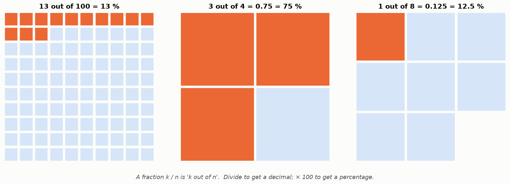
3 out of 4 → 3 ÷ 4 = 0.75 → 75 %
1 out of 8 → 1 ÷ 8 = 0.125 → 12.5 %In the projects: "13 % of the SMS are spam". "Precision 0.97" = "97 % of what we flagged was right".
📖 Tuesday. Seven students are in the queue. Noor wants one number for "how tall is a typical student here?".
The idea: add everything, then divide by how many there are.
heights: 150, 158, 162, 165, 171, 174, 180
step 1 — add them: 150 + 158 + 162 + 165 + 171 + 174 + 180 = 1160
step 2 — count them: 7
step 3 — divide: 1160 ÷ 7 = 165.7 cm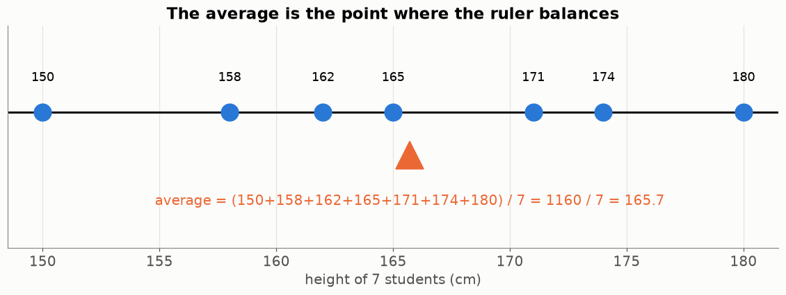
Picture the heights as weights on a ruler: the average is where the ruler balances. Nobody has to be exactly 165.7.
sum(heights) / len(heights) # 165.71...📖 Wednesday. Two classes visit. Both have an average height of 170 cm. But in class A everyone is about 170, and in class B some are 150 and some are 188. Noor wants a number for how spread out they are.
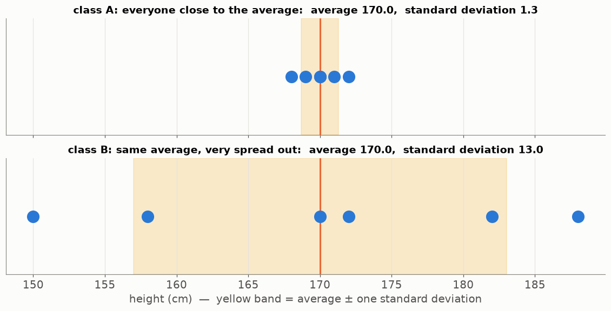
That number is the standard deviation ("std"): the typical distance from the average. Small std = everyone close together. Big std = very different.
By hand for 4 students: 2, 4, 4, 6 (small numbers to keep it easy):
step 1 — the average: (2 + 4 + 4 + 6) ÷ 4 = 16 ÷ 4 = 4
step 2 — each one's distance: 2−4 = −2 4−4 = 0 4−4 = 0 6−4 = +2
step 3 — square each distance: 4 0 0 4 (squaring removes the minus)
step 4 — average of the squares: (4 + 0 + 0 + 4) ÷ 4 = 2
step 5 — square root: √2 = 1.41 ← the standard deviationWhy square? Without it, −2 and +2 would cancel and we'd get 0 — "no spread" — which is wrong. The square root at the end brings us back to normal units (cm).
📖 Thursday. A bag of 10 sweets at the till: 3 orange, 7 blue. A student takes one without looking. "What are the chances it's orange?"
The idea: probability = (ways it can happen) ÷ (all possibilities). Always between 0 (never) and 1 (always).
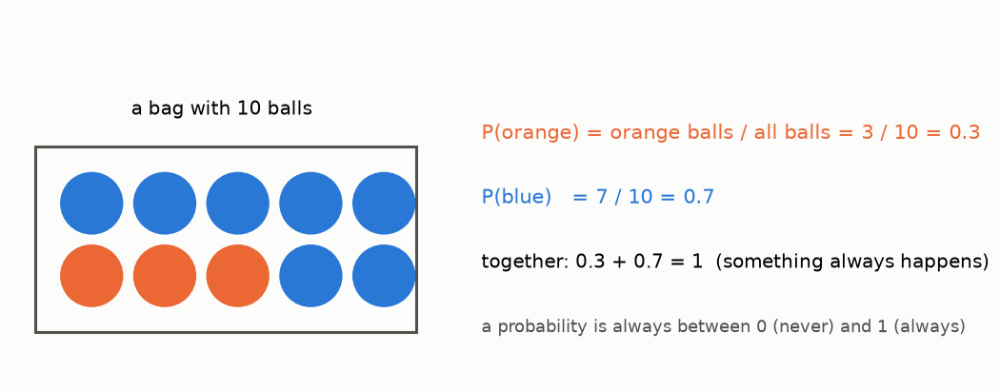
P(orange) = 3 ÷ 10 = 0.3 P(blue) = 7 ÷ 10 = 0.7 together 0.3 + 0.7 = 1"Given that" — the line |. Of 8 teachers who came, 6 paid by card. P(card | teacher) means "the chance of paying by card, counting only the teachers" = 6 ÷ 8 = 0.75. The line means: first keep only the teachers, then count. (This one idea is the whole spam filter in Lesson 11.)
📖 Noor's receipts: 3, 5, 2, 6 shekels. Her accountant writes Σ on the page. Noor panics. She shouldn't.
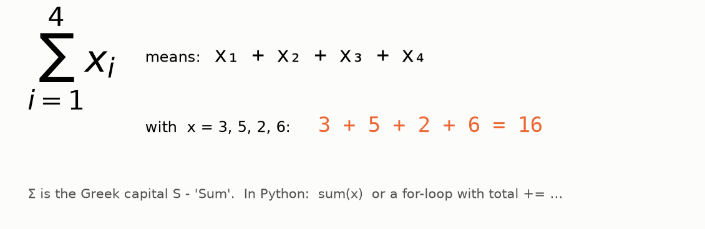
Σ (the Greek letter S, for "sum") just means add them all: 3 + 5 + 2 + 6 = 16. In Python it's sum(...) or a loop with total += x.
Σ wᵢ · xᵢ means "multiply each pair, then add": w = (2, 1), x = (3, 4) → 2·3 + 1·4 = 6 + 4 = 10.
📖 Noor tiles the canteen floor. A square area 5 tiles wide needs how many tiles?
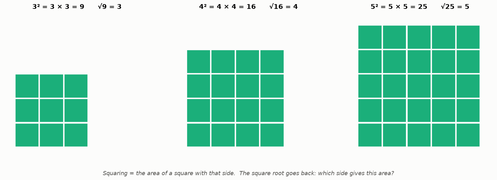
📖 Friday. Noor reads that a rumour doubles every day: 1 person, 2, 4, 8 … "After how many days have 1,000 people heard it?" She needs the opposite of "multiply again and again". That's a logarithm.
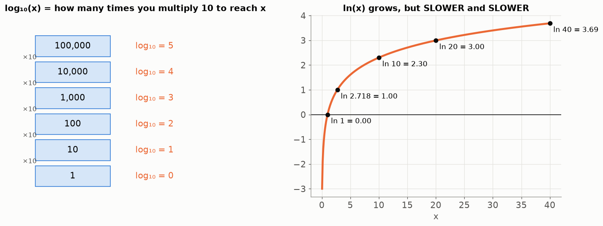
The idea: log₁₀(1000) asks "how many times do I multiply 10 to get 1000?" → 10 × 10 × 10 → 3. (For the rumour: log₂(1000) ≈ 10 days.)
log₁₀(10) = 1 log₁₀(100) = 2 log₁₀(1) = 0 log₁₀(0.01) = −2The projects use ln — the same idea with the number e ≈ 2.718. You never compute it by hand: press ln on the calculator, or math.log(x) in Python.
Two things to remember:
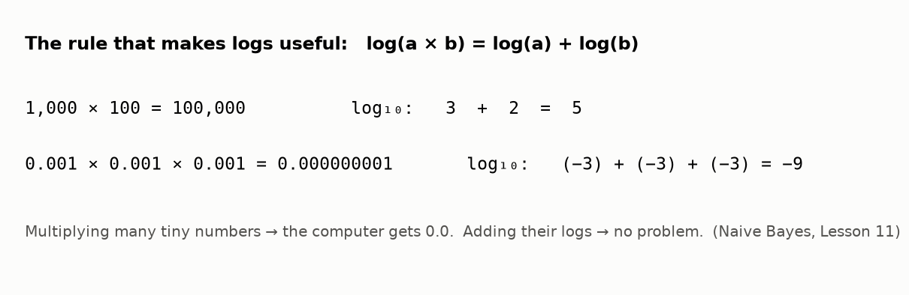
A computer can't store a number with 900 zeros after the decimal point — it becomes 0. But its log is an ordinary number (about −2072). So instead of multiplying many tiny numbers, we add their logs (the spam filter, Lesson 11).
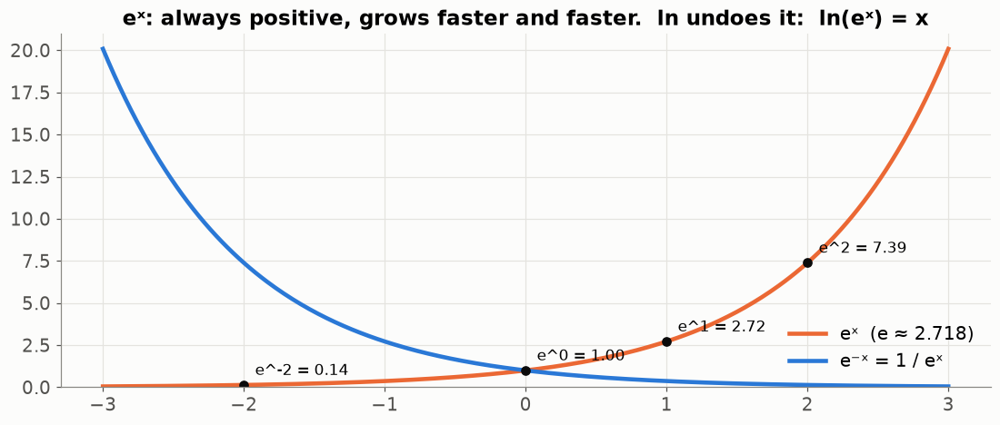
eˣ is always positive and grows faster and faster. ln undoes it: ln(eˣ) = x. You'll see eˣ inside the sigmoid (Lesson 12) and softmax (Lesson 20) — always just "press the eˣ button".
📖 Noor walks down a dark hill to the school at night, without a torch. She feels the slope under her feet and always steps downhill. Eventually she reaches the bottom.
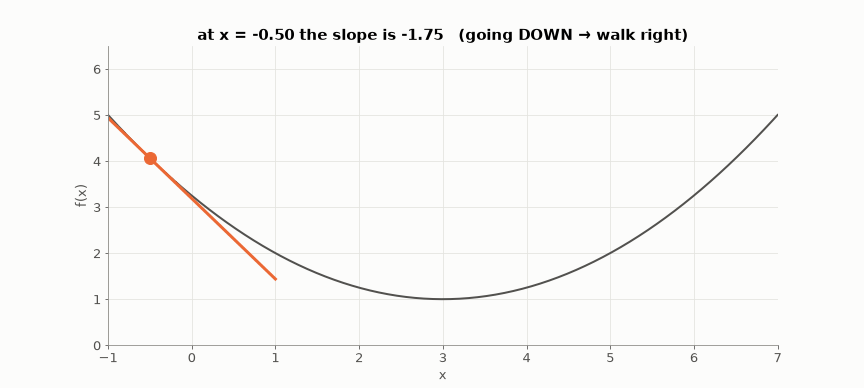
The slope says how steep the ground is: negative = it goes down to the right; positive = it goes up; 0 = you're at the bottom. Machine learning finds its best settings exactly like Noor in the dark: always step downhill (Lessons 12, 21). The fancy name for slope is derivative or gradient — same idea.
📖 The canteen is at (1, 1) on the school map, the gate at (4, 5). How far is it in a straight line?
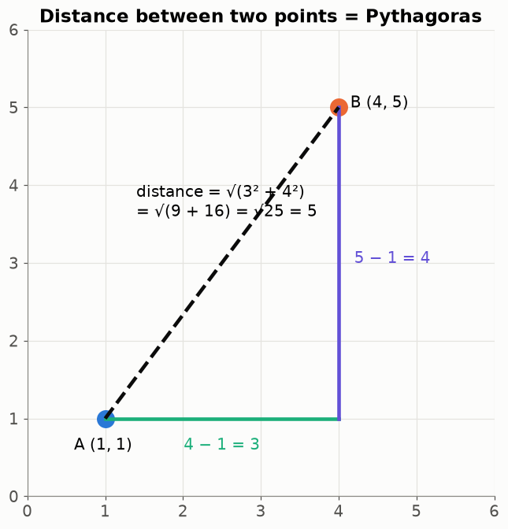
Walk 3 across and 4 up. The straight line is Pythagoras: √(3² + 4²) = √(9 + 16) = √25 = 5.
With more than two numbers (a wine has 11 measurements) it's the same: square every difference, add them all, square root. A list of numbers drawn as an arrow is called a vector (Lesson 08).
import math
math.dist((1, 1), (4, 5)) # 5.0📖 At the end of the week Noor puts everything in one table: one row per student, one column per thing she measured.
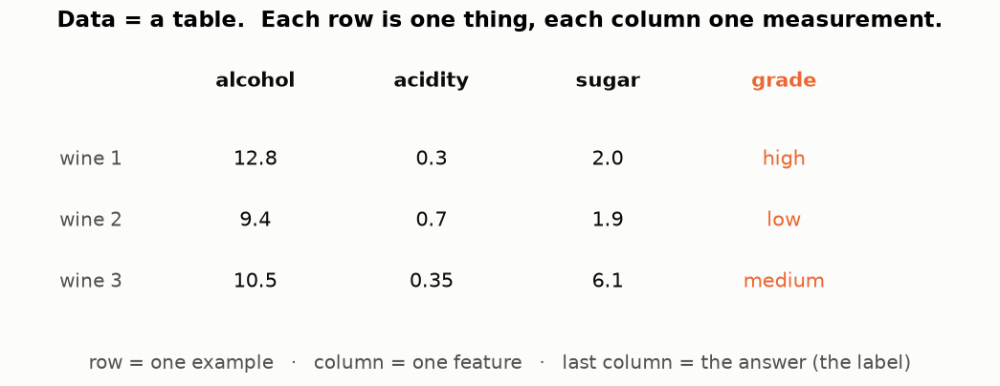
Every project starts like this: one row per example (a wine, an SMS, a URL), one column per feature (a measured number), and one column with the right answer (the label). Keep this picture in mind for every lesson.
45 ÷ 360 = 0.125 = 12.5 %.
Average 9 ÷ 3 = 3 · distances −2, 0, 2 · squares 4, 0, 4 · average 8 ÷ 3 = 2.67 · √2.67 = 1.63.
5 ÷ 20 = 0.25 · 1 − 0.25 = 0.75.
4 (10 × 10 × 10 × 10).
3 across, 4 up → √(9 + 16) = 5.
For: Laith (Spam) · Ryan (FaceEmotion) · Dani (PhishGuard) · Seif (WineGrader) · Time: 3 × 45 min Before: Lesson 00 §1 (percentages), §2 (average) · You need: nothing else, no maths beyond percentages
In one sentence: instead of writing the rules yourself, you show the computer many examples with the right answers, and it finds the rules by itself.
flowchart LR
A["1 · Rules by hand<br/>fail"] --> B["2 · Learn from<br/>examples"]
B --> C["3 · Turn things<br/>into numbers"]
C --> D["4 · The computer<br/>tries rules"]
D --> E["5 · More examples<br/>= better"]
E --> F["6 · Three piles:<br/>train / val / test"]
F --> G["7 · Overfitting<br/>& underfitting"]
Each part has: 📖 a moment from the story · 🧠 the idea in plain words · 🖼️ a picture or animation · ✍️ something to do by hand · ✅ a quick check (click to see the answer).
Maya has a small phone shop. Her number is on Google, so every morning she has 200 SMS: customers ("is my phone ready?") and spam ("WINNER!! Claim your FREE prize now"). She wastes half an hour every morning deleting spam, and twice last month she deleted a real customer's message by mistake. Her nephew Omar, a programmer, promises: "Give me a week. I'll write a program that recognises spam." We follow Omar through that week.
Read this table now, and come back to it whenever a word is unclear. Every word is also in the glossary.
| word | simple meaning | in Maya's shop |
|---|---|---|
| example (or sample, row) | one thing we know the answer for | one SMS |
| feature | one number that describes the example | how many digits the SMS has |
| label | the right answer for an example | "spam" or "ham" (ham = a normal message) |
| dataset | all the examples together, in a table | Maya's 5,574 old SMS |
| model | the rules the computer found | "5 or more digits → spam" |
| training | the computer studying the examples to find the rules | |
| prediction | the model's answer for a new example | "this new SMS is spam" |
| accuracy | the % of examples the model gets right | "97 % right" |
| overfitting | remembering the examples instead of learning the rule | the student who memorises answers |
📖 Monday. Omar starts the "normal" way. He writes rules in Python:
if "FREE" in sms or "WINNER" in sms: return "spam"On Monday it works. By Friday Maya is angry.
What went wrong during the week:
Some problems have no rules a person can write down, even though a person can easily say the answer:
| problem | can you write the rules? | can you say the answer for one example? |
|---|---|---|
| is this SMS spam? | no — spammers change tricks every week | yes, in one second |
| is this face happy or angry? | no — try describing "happy" in pixels! | yes, instantly |
| is this link a phishing link? | no — criminals invent new ones daily | an expert can |
| is this wine good? | no — taste depends on 11 chemicals together | a wine taster can |
| what is 15 % VAT on 200 ₪? | yes — 200 * 0.15 |
yes |
The last row is important: when you can write the rule (VAT, a hotel price, a game score), write it! Machine learning is for the rows where you can't.
Before 2000, e-mail companies tried exactly what Omar tried: lists of "bad words". Spammers beat them within days. Today every spam filter (Gmail, Outlook) learns from millions of messages that people marked with the "Report spam" button. Every time you press that button, you are giving a label to a learning program.
(b) and (d). For (a) and (c) we know the exact rule (π·r², price × nights). For (b) nobody can write the rule. For (d) there is no fixed rule — but old data (past years' bookings) can teach a model.
📖 Saturday. Omar gives up on rules. He asks Maya to spend one afternoon marking her old SMS: "spam" or "not spam". She marks 5,574 messages. "Now," says Omar, "the computer will study your answers and find the rules itself."
You did not learn "apple" from a definition. Nobody told you "an apple is a fruit of 130–200 grams with a red to green skin". Your parents showed you apples and lemons and said the name — examples with labels — and your brain found the rule. A computer can do the same. Watch it "see" fruits one by one. Each fruit is a dot: how heavy (left–right) and how yellow (up–down). After each fruit the computer moves its border (the dashed line):
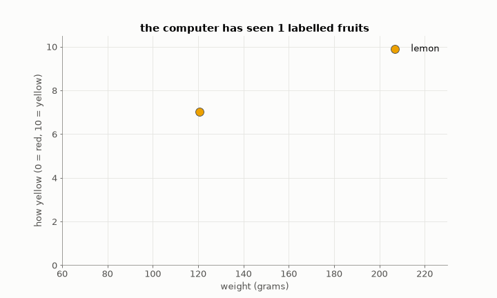
At the end it has never been told what a lemon is — but when a new fruit arrives (the ★), it can answer:
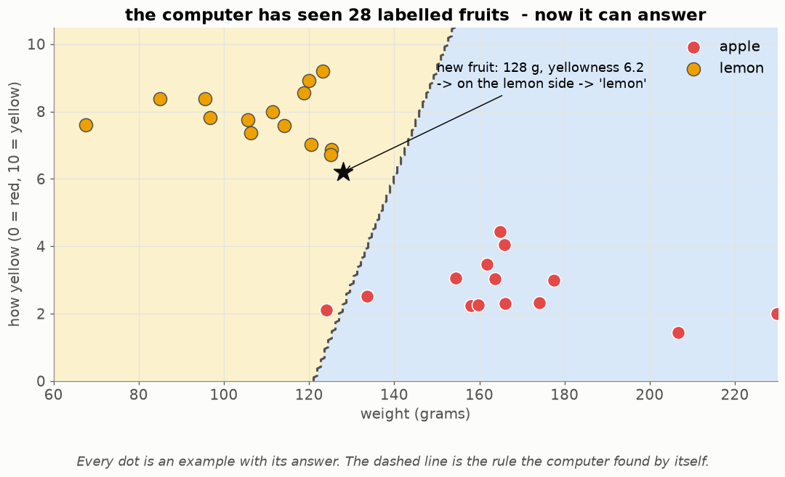
Notice three things:
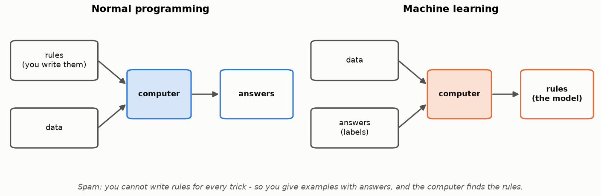
| normal programming | machine learning | |
|---|---|---|
| you give | the rules + the data | the data + the right answers |
| you get | answers | the rules (the model) |
| good for | VAT, prices, games, bookings | spam, faces, phishing, wine |
| when the world changes | you rewrite the rules | you give new examples and train again |
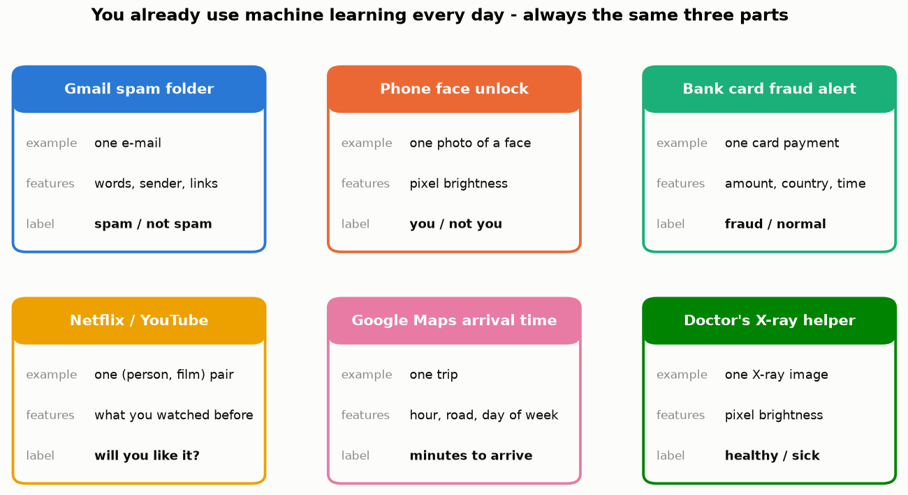
Look at the six cards: every one has the same three parts — an example, its features (numbers), and a label. Once you see these three parts, you understand the shape of every machine-learning project, including yours:
| project | one example | features | label |
|---|---|---|---|
| Laith — SpamClassifier | one SMS | which words it contains | spam / ham |
| Ryan — FaceEmotion | one 48×48 photo of a face | 2,304 pixel brightnesses | 7 emotions |
| Dani — PhishGuard | one URL | 20 numbers (length, dots, "@", …) | phishing / legitimate |
| Seif — WineGrader | one wine | 11 chemical measurements | quality 3 … 9 |
Example: one student. Features: e.g. hours studied, grade in the last test, number of missed lessons. Label: pass / fail (known for last year's students).
📖 Sunday. Omar tries to give the SMS to the computer and hits a problem: the computer can't read. It can only compare and add numbers. So he must turn each SMS into numbers.
A feature is a question about the example whose answer is a number. Omar asks three questions about each SMS: "does it contain the word free?" (1 = yes, 0 = no), "how many ! does it have?", "does it contain a link?".
| SMS | has "free"? | number of "!" | has a link? | label |
|---|---|---|---|---|
| "WINNER!! claim your prize www.x.com" | 0 | 2 | 1 | spam |
| "Is my phone ready tomorrow?" | 0 | 0 | 0 | ham |
| "FREE entry to win!!! txt now" | 1 | 3 | 0 | spam |
| "Is the repair free under warranty?" | 1 | 0 | 0 | ham |
Each row is an example. Each column is a feature. The last column is the label. This table is called the dataset.
✍️ Do it yourself. Add a row for "Call 0905 now to claim £1000!". answer
has "free" = 0, "!" = 1, link = 0, label = spam. (Notice: our three features can't see the phone number — a feature like "number of digits" would.)
Omar picks two simple features — the length of the SMS and how many digits it contains — and draws every one of Maya's 5,574 SMS as a dot:
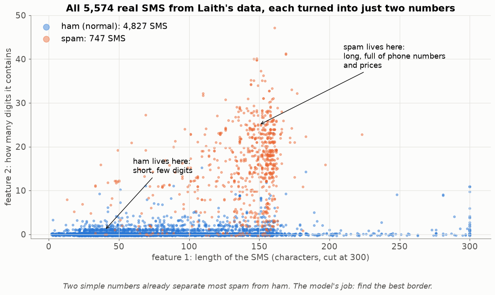
Without any "intelligence" you can already see it: spam (orange) is long and full of digits — phone numbers like 09050000301 and prices like £1000. Ham (blue) is short with almost no digits. Good features make the groups separate. Choosing good features is a big part of every project:
📖 Monday again. Maya asks the obvious question: "But how does the computer find the rule? It isn't clever." Omar shows her the simplest possible way.
Take only one feature: the number of digits. A rule of the shape "if digits ≥ t → spam" has one unknown number, the cut-off t. The computer does what you would do with a lot of patience:
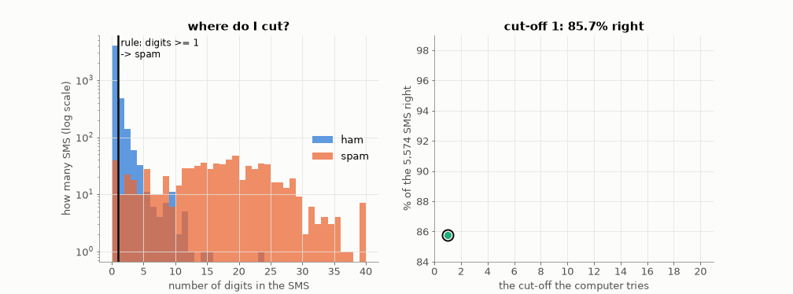
✍️ The real numbers (computed on all 5,574 SMS):
| cut-off t | rule | % right | spam caught | ham wrongly called spam |
|---|---|---|---|---|
| 1 | ≥ 1 digit → spam | 85.7 % | 708 | 756 😱 |
| 3 | ≥ 3 digits → spam | 96.2 % | 676 | 142 |
| 5 | ≥ 5 digits → spam | 97.3 % ⭐ | 648 | 50 |
| 10 | ≥ 10 digits → spam | 96.7 % | 573 | 11 |
| 15 | ≥ 15 digits → spam | 94.3 % | 434 | 2 |
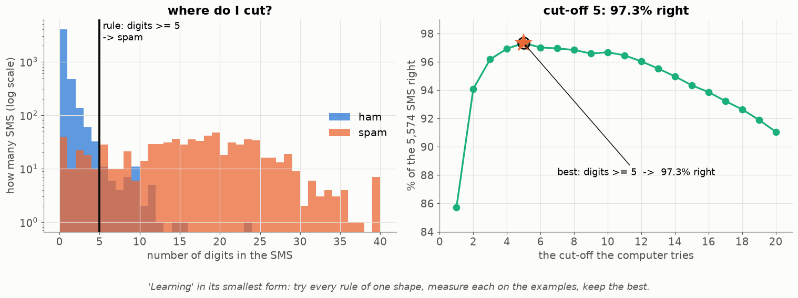
Read the table like a story: a low cut-off catches almost all spam but also hides 756 real customers. A high cut-off almost never hides a customer but lets a lot of spam through. t = 5 is the best balance for accuracy. (In Lesson 03 you'll see that "best" depends on what mistakes cost — Maya may prefer t = 10, because a lost customer costs more than one spam.)
This is learning. Real models have more numbers to choose than one cut-off (Laith's Naive Bayes has thousands, Ryan's network has millions), and they use cleverer ways than trying every value (Lesson 12, 21) — but the idea never changes: a rule with unknown numbers + examples + a way to measure "how good" → choose the numbers that are best on the examples.
0 → ham ✔, 2 → ham ✔, 7 → spam ✔, 12 → spam ✔, 1 → ham ✘ (it was spam). 4 out of 5 = 80 %.
📖 Maya is tired. "Do I really have to mark all 5,574? Isn't 50 enough?"
Omar tests it on the real data. He trains the same simple spam model (it uses the words, Lesson 11) on 10 SMS, then 20, then 50 … and each time grades it on 1,672 SMS it has never seen:
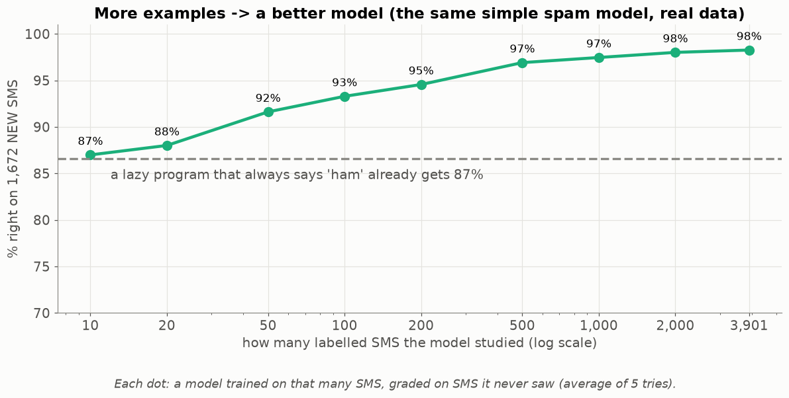
So Maya's afternoon was worth it. Notice also that the curve flattens: going from 2,000 to 3,901 helps much less than going from 50 to 500. At some point more data is not the answer — better features or a better model are.
This is why Google, Meta and banks collect so much data, and why "labelling" is a real job: companies pay people to draw boxes around cars in photos for self-driving cars, or to mark medical images. Labels are expensive; the model is cheap.
📖 Tuesday. Omar tests his program on the same 5,574 SMS it learned from: 100 % right! He calls Maya, very proud. Maya is not impressed: "Of course — it has already seen them. What about tomorrow's SMS?"
A model can score 100 % on old examples just by remembering them, like a student who has seen the exam in advance. But Maya doesn't care about old SMS; she cares about tomorrow's. The only honest way to know how the model does on new examples is to hide some examples during training and grade it on them afterwards.
So, before training, Omar cuts the SMS into three piles:
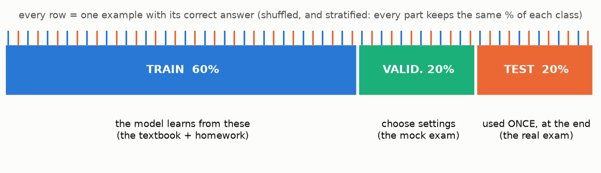
| pile | used for | like at school |
|---|---|---|
| training (70 %) | the model learns from these | the textbook and the homework |
| validation (15 %) | try different settings, keep the best one | the practice exams |
| test (15 %) | graded once, at the very end | the real final exam |
✍️ The arithmetic for Maya's 5,574 SMS:
training: 70 % of 5,574 = 0.70 × 5,574 = 3,901.8 → 3,901 SMS
validation: 15 % of 5,574 = 0.15 × 5,574 = 836.1 → 836 SMS
test: the rest 5,574 − 3,901 − 836 = 837 SMS
check: 3,901 + 836 + 837 = 5,574 ✔Imagine a student who may see the final exam, change their answers, and see it again — 20 times. Their grade would be high, but it no longer shows what they know; it shows what they learned about this exam. The same happens to a model if you keep looking at the test score and changing things: you slowly "fit" the test pile. That's why settings are chosen on the validation pile, and the test pile is opened once, at the end, like a sealed envelope.
Only 13 % of Maya's SMS are spam. If you cut the piles at random, bad luck could put almost no spam in the test pile — and then the test says nothing about catching spam. So we deal spam and ham separately, like dealing a pack of cards suit by suit, so that every pile gets the same share of spam:
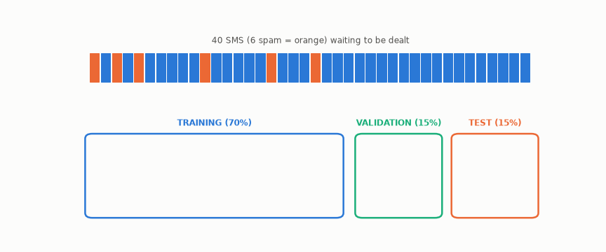
Every pile ends with about 15 % spam (4/28, 1/6, 1/6) — the same as the whole deck. This is called a stratified split.
0.6 × 2,000 = 1,200, 0.2 × 2,000 = 400, and 400. Excellent: 10 % of each pile → 120, 40, 40.
📖 Wednesday. Omar makes his model more and more powerful. It gets 100 % on the training pile — but only 89 % on the validation pile, worse than his simple model. Maya, who was a teacher, laughs: "I know this student."
Two students prepare for a maths exam with last year's exam. Dana memorises the 20 answers. Her friend learns the methods. Then the real exam comes, with the same kind of questions but new numbers:
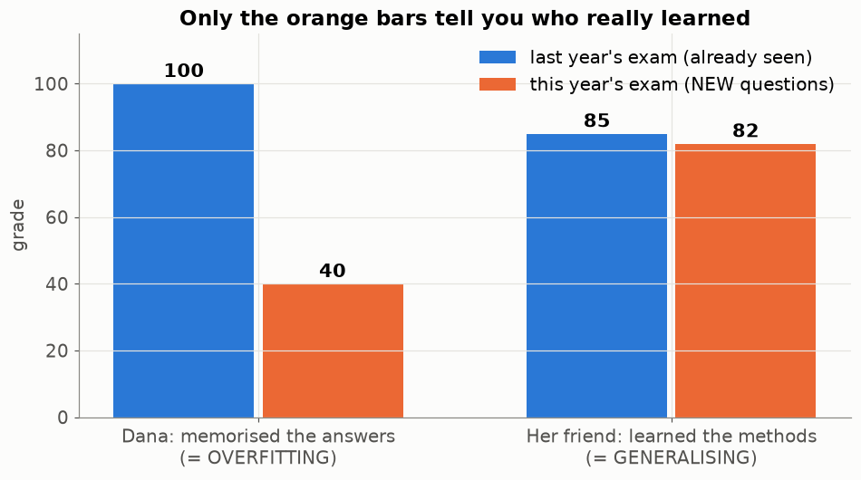
On the questions she had seen, Dana is perfect. On new questions she collapses. Dana overfitted. Her friend generalised: she learned something that works on new questions too. A model can do exactly the same.
In the animation, the blue dots follow a smooth wave plus some random "noise" (small errors — like spam that looks a bit like ham by chance). The computer draws a curve through the dots. The degree is how bendy the curve is allowed to be: degree 1 = a straight line, degree 15 = it can wiggle 15 times.
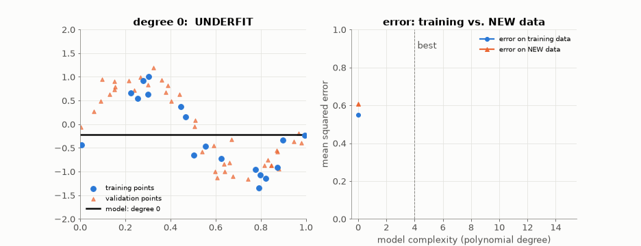
| how bendy | what you see | name |
|---|---|---|
| too stiff (degree 0–2) | misses the wave completely | underfitting — too simple to learn the rule |
| just right (3–6) | follows the wave, ignores the noise | a good fit |
| too bendy (7–15) | goes through every blue dot, crazy between them | overfitting — it learned the noise |
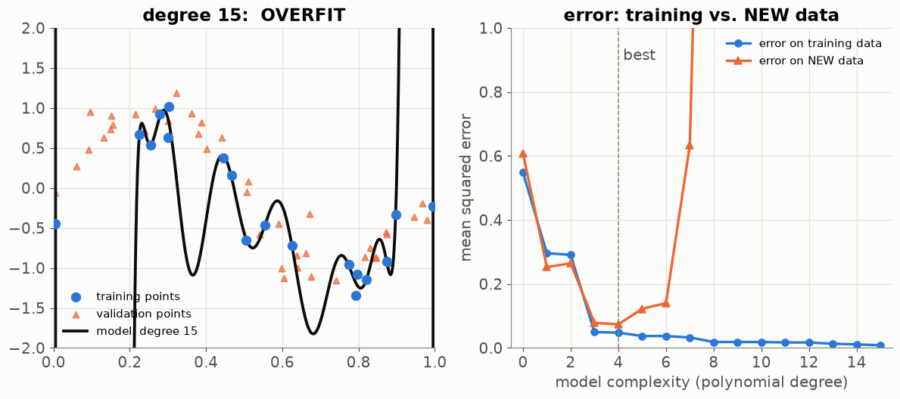
The right side is the most important picture in this lesson. Two lines:
The best model is at the bottom of the orange line — and you can only draw the orange line with examples the model did not study. That is the whole reason the validation pile exists.
| what you see | diagnosis | what to try |
|---|---|---|
| bad on training and on validation | underfitting | a more powerful model, better features, train longer |
| great on training, bad on validation | overfitting | a simpler model, more examples, a "brake" (regularisation — Lessons 12, 23), stop earlier (Lesson 24) |
| good on both, close to each other | 🎉 | test it once on the test pile, write the grade in your book |
Both stories have the same lesson as Dana: a high score on the examples you studied proves nothing. Always ask: does it work on new examples, and what has it really learned?
Overfitting — it memorised the training pile. Try a simpler model, more training examples, or a stronger "brake" (regularisation).
Every machine-learning project, including yours, follows these steps. Point at your project's file for each box.
flowchart TD
A["📥 Collect examples<br/>with labels"] --> B["🔢 Turn each example<br/>into numbers (features)"]
B --> C["✂️ Split: train / validation / test<br/>(stratified, BEFORE anything else)"]
C --> D["🏋️ Train on the training pile"]
D --> E{"📏 Good on the<br/>validation pile?"}
E -- "no: change settings,<br/>features or model" --> D
E -- yes --> F["🧪 Test ONCE<br/>on the test pile"]
F --> G["🚀 Use it on new data<br/>(the app)"]
This short program does the whole recipe on Maya's real SMS. Read it line by line; the comments say which Part of the lesson each line is. (You don't need to understand CountVectorizer and MultinomialNB yet — Lessons 07 and 11 open them up.)
import csv
from sklearn.model_selection import train_test_split
from sklearn.feature_extraction.text import CountVectorizer
from sklearn.naive_bayes import MultinomialNB
# 1. Collect examples with labels (Part 2)
rows = list(csv.DictReader(open("08_SpamClassifier/data/sms_spam.csv", encoding="utf-8")))
texts = [r["text"] for r in rows]
labels = [r["label"] for r in rows] # "spam" or "ham"
# 2. Split BEFORE anything else: 70 % train, 30 % kept hidden; stratify = deal spam and ham separately (Part 6)
tr_text, te_text, tr_y, te_y = train_test_split(texts, labels, test_size=0.3,
stratify=labels, random_state=0)
# 3. Turn text into numbers - learned from the TRAINING pile only (Part 3)
vec = CountVectorizer().fit(tr_text)
# 4. Train (Part 4)
model = MultinomialNB().fit(vec.transform(tr_text), tr_y)
# 5. Grade on SMS it never saw (Part 6)
right = sum(p == y for p, y in zip(model.predict(vec.transform(te_text)), te_y))
print(f"{right} / {len(te_y)} right = {right / len(te_y):.1%}") # ≈ 98 %
# 6. Use it on a brand-new SMS (prediction)
print(model.predict(vec.transform(["WINNER! Call 09061701461 to claim your £900 prize"]))) # ['spam']
print(model.predict(vec.transform(["Is my phone ready? I can come at 5"]))) # ['ham']Easy ones first. Try each on paper before you open the answer.
Example: one flight. Features: e.g. hour of departure, airport, weather (rain 0/1), day of the week. Label: late / on time (from past flights).
800 / 100 / 100.
(a) normal — the hotel has exact price rules (Lesson 29). (b) machine learning — no one can write rules for every handwriting. (c) normal — the rules of the game decide it.
There is no single right answer — that's the point. If losing a customer is much worse than seeing a spam, choose t = 10 (only 11 customers hidden). If Maya hates spam more, t = 5. Lesson 03 gives the words for this (precision vs recall).
No! A program that always says "ham" already gets 87 %, because 87 % of the SMS are ham. Always compare with the "lazy" answer (Lesson 03 explains why accuracy can lie).
The model became too complex and started to overfit: training error kept falling, validation error went up. Go back to the first model.
Then the test pile helped build the model — it's no longer a fair "sealed" exam, and its grade will be too optimistic.
Like the husky/wolf model, it may have learned to recognise hospital A's machine (its marks, its brightness), not the illness. On X-rays from a new hospital it may fail. This really happened in research on chest X-rays.
If the vectoriser learns its words from all SMS, information from the test pile "leaks" into the model — it has peeked at the exam. Lesson 05 is all about this (leakage).
| student says | the truth |
|---|---|
| "99 % on training — great!" | That says nothing about new data. Look at validation. |
| "More complex is always better" | Only until the orange line turns up (overfitting). |
| "I'll peek at the test pile a few times" | Every peek makes the final grade less honest. |
| "90 % accuracy is always good" | Not if 90 % of examples are one class — "always say the big class" already scores 90 %. |
| "The model understands spam" | It only found numbers that separate dots. It can learn silly rules (snow → wolf). |
| "Machine learning is better than normal code" | Only when you can't write the rules. For prices, bookings, games — write the rules. |
- Machine learning = examples + right answers → the computer finds the rules (the model).
- Use it when you can't write the rules but a person can give the answers.
- Every example becomes a row of features (numbers), with a label.
- Training = trying values of the model's unknown numbers and keeping what works best on the examples.
- More examples → better, up to a point.
- Split train / validation / test first, stratified. Choose settings on validation. Open test once.
- Overfitting = great on training, bad on new data (memorising). Underfitting = bad on both (too simple).
08_SpamClassifier/data/sms_spam.csv. Groups write rules on paper. Then read 10 new SMS — how many rules broke? (This is Part 1, felt for real.)| Project | Where |
|---|---|
| Spam | spamclassifier/ml/dataset.py → stratified_split (70 / 15 / 15), assert_no_leakage |
| FaceEmotion | app/ml/dataset.py → build_dataloaders |
| PhishGuard | phishguard/ml/dataset.py → DatasetLoader |
| WineGrader | winegrader/ml/folds.py → stratified_kfold (Lesson 05) |
|
StatQuest — A Gentle Introduction to Machine Learning (12 min). The same ideas as this lesson with drawings: what a model is, why we test on new data. Start here. |
|
Oxford Sparks — What is Machine Learning? (3 min). A short cartoon: learning from examples instead of rules. |
|
StatQuest — Bias and Variance (6 min). Underfitting and overfitting with a simple example; watch after Part 7. |
|
CGP Grey — How machines learn (9 min). A funny animation of "teacher bots" and "student bots": why nobody knows exactly what a trained model learned. |
Play with it:
python visualize.py --live opens the overfitting picture with a slider — move it and watch the orange line.Stratified split: each pile keeps the same share of each class. Maya's data is 13 % spam; a random split could put only 8 % spam in the test pile by bad luck. Stratifying deals spam and ham separately, like dealing cards suit by suit.
Bias and variance:
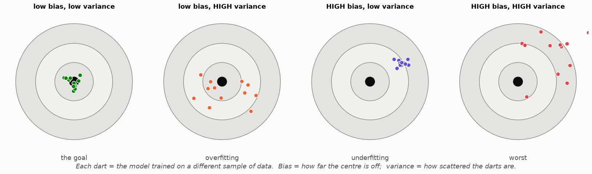
Train the same kind of model 12 times on different samples — each dart is one model. Bias = the darts miss on average (too simple, underfitting). Variance = the darts are scattered (too sensitive to the sample, overfitting).
Generalisation = doing well on examples never seen. It is the only thing that counts.
Hyper-parameter = a setting you choose (k, C, the threshold, the degree) — chosen on validation, never on test. Parameter = a number the model learns during training (a weight, a cut-off).
Supervised learning (this lesson, all four ML projects) = examples come with labels. Unsupervised = no labels, the computer looks for groups by itself (e.g. grouping customers).
Classification (spam/ham, 7 emotions) vs regression (a number: minutes to arrive, a price). WineGrader predicts a quality score — it can be treated as either.
For: Seif (WineGrader) · Dani (PhishGuard) · Laith (SVM) · Ryan (pixels) · Time: 45 min Before: Lesson 00 §2, §3, §10; Lesson 01
In one sentence: before comparing examples, change every feature so that "1 step" means the same thing for all of them — otherwise the feature with the biggest numbers wins every comparison.
Sami owns a wine shop. A customer loved a wine with 10.4 % alcohol and 140 mg/l of SO₂ (a preservative). It's sold out. "Give me the most similar wine you have," she says. Sami asks his computer to find the wine with the closest numbers. The computer suggests a wine that tastes completely different. What went wrong?
| word | simple meaning |
|---|---|
| feature | one measured number (alcohol, SO₂) |
| distance | how different two wines are, using all their numbers (Lesson 00 §10) |
| scale | how big a feature's numbers usually are: alcohol ≈ 10, SO₂ ≈ 140 |
| scaling | changing the numbers so all features have a similar size |
| z-score | "how many typical steps above or below average" |
📖 Sami has two candidate wines.
alcohol SO₂
customer's wine 10.4 140
wine A 10.5 155 ← almost the same alcohol, a bit more SO₂
wine B 13.0 142 ← MUCH stronger, almost the same SO₂Any wine expert says A is similar. Let's compute the distance (Pythagoras: square the differences, add, square root):
to A: alcohol 0.1 → 0.1² = 0.01 SO₂ 15 → 15² = 225 √(0.01 + 225) = 15.0
to B: alcohol 2.6 → 2.6² = 6.76 SO₂ 2 → 2² = 4 √(6.76 + 4) = 3.3The computer says B is closer (3.3 < 15). Why? SO₂ numbers are big (hundreds), so their differences are big and drown the alcohol. A 15-point SO₂ difference is nothing for taste; a 2.6 % alcohol difference is huge.
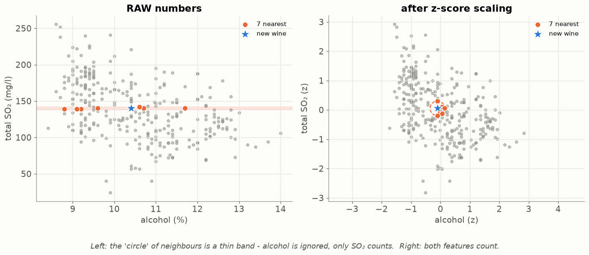
Left: the 7 "nearest" wines using raw numbers all have SO₂ ≈ 140 — and any alcohol at all. Alcohol is ignored. Right: after scaling, the nearest wines are close in both.
Like comparing people by "height in millimetres + age in years": height (1,700) drowns age (16). A child and a grown-up of the same height would look like twins.
📖 Sami's idea: measure each feature in its own typical step. "One step of alcohol" and "one step of SO₂" should mean the same thing: "one typical difference".
In words: take the value, subtract the average, divide by the standard deviation (Lesson 00 §3).
By hand — alcohol of 3 wines: 8, 10, 12.
average: (8 + 10 + 12) ÷ 3 = 10
std: distances −2, 0, +2 → squares 4, 0, 4 → average 8 ÷ 3 = 2.67 → √2.67 = 1.63
z-scores: (8 − 10) ÷ 1.63 = −1.22 (10 − 10) ÷ 1.63 = 0 (12 − 10) ÷ 1.63 = +1.22Say it aloud: "wine 1 is 1.2 steps below average, wine 2 is average, wine 3 is 1.2 steps above".
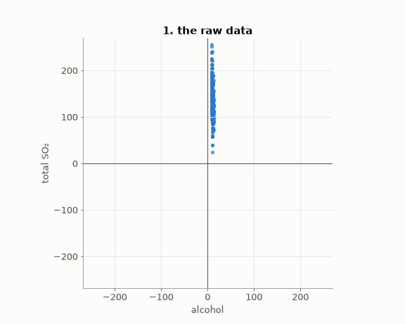
The animation: first move the cloud so its centre is 0, then squeeze each direction so its spread is 1.
📖 After scaling, Sami's computer suggests wine A. The customer is happy.
📖 A new wine arrives at the shop with 13 % alcohol. Sami scales it with the same average (10) and std (1.63) he used before: (13 − 10) ÷ 1.63 = 1.84.
The average and std are learned from the training wines and saved with the model. Every new wine is scaled with those saved numbers — never with new ones. (Scaling one wine by itself would mean dividing by a std of 0!)
(12.3 − 10.5) ÷ 1.2 = 1.8 ÷ 1.2 = 1.5 → "one and a half steps above average".
average 7 · distances −3, −1, 1, 3 · squares 9, 1, 1, 9 · average 5 · std √5 = 2.24 → −1.34, −0.45, 0.45, 1.34.
| student says | the truth |
|---|---|
| "Scaling changes my data" | It changes how features are compared — that's the point. The order of wines inside one feature stays the same. |
| "Fit the scaler on all the data" | Only on training data, then reuse (Lesson 05: leakage). |
python visualize.py --live: a slider makes SO₂ count more or less.| Project | Where |
|---|---|
| WineGrader | winegrader/ml/scaler.py → StandardScaler, MinMaxScaler · scaled inside each fold in tuning.prepare_folds |
| PhishGuard | ModelTrainer.build_logistic — StandardScaler inside the Pipeline |
| Spam | SVMClassifier.fit — StandardScaler before the SVM |
| FaceEmotion | pixels: /255, then (x − 0.5013) / 0.2916 (Lesson 19) |
All 11 features live on different scales:
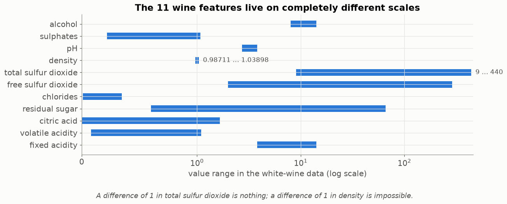
Min-max scaling = (value − min) ÷ (max − min) → everything between 0 and 1. One extreme wine (an outlier) breaks it: one white wine has 440 SO₂, so every normal wine is squeezed near 0. z-score suffers much less:
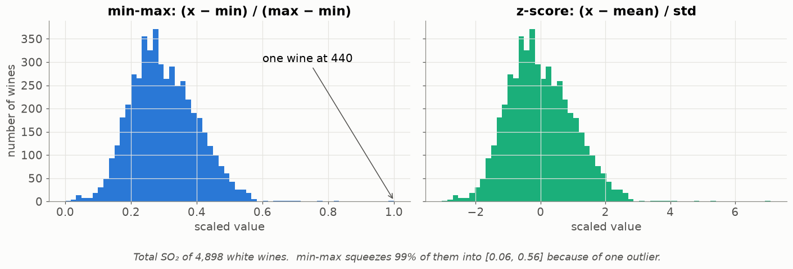
Scaling makes learning faster for models trained by gradient descent (Lesson 12): unscaled → a narrow valley and zig-zag steps; scaled → straight to the bottom. That's the SVM's "failed to converge" warning.
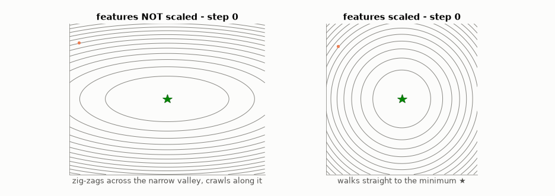
Which models need it? k-NN, SVM, logistic regression, neural networks — yes. Naive Bayes, decision trees, random forests — no (they count or ask "is x > 3?").
A feature that is the same for every wine: std = 0 → set std to 1 (the column becomes zeros and adds nothing).
Test names: test_one_outlier_squeezes_minmax_but_not_zscore, test_fit_uses_only_given_rows.
For: Laith · Dani · Seif · Ryan · Time: 2 × 45 min Before: Lesson 00 §1; Lesson 01
In one sentence: sort every answer into four boxes (caught, false alarm, missed, correct-no), and from those four counts compute numbers that answer different questions: can I trust it? and does it catch everything?
Omar's spam filter (Lesson 01) is ready. It sorted 1,673 new SMS into "inbox" and "spam folder". Omar proudly says: "97.5 % correct!" Maya asks two sharper questions: "Did it hide any message from a customer?" and "How much spam still reaches me?" One number can't answer both. Let's build the numbers that can.
| word | simple meaning |
|---|---|
| positive | the thing we are looking for — spam (in PhishGuard: phishing) |
| negative | the other thing — a normal message ("ham") |
| prediction | what the model said |
| truth | what it really was |
📖 Maya checks each SMS: what did the filter say, and what was it really?
| filter said SPAM | filter said inbox | |
|---|---|---|
| really spam | TP — spam caught ✓ | FN — spam slipped into the inbox ✗ |
| really a customer | FP — a customer hidden in spam ✗ | TN — customer delivered ✓ |
The names: the second letter (P/N) is what the filter said; the first (T/F) is whether it was right. This table is called the confusion matrix.
Fill one by hand — 8 SMS:
truth: S S H H H S H H (S = spam, H = ham)
filter: S H H S H S H H
box: TP FN TN FP TN TP TN TN
count: TP = 2 FN = 1 FP = 1 TN = 4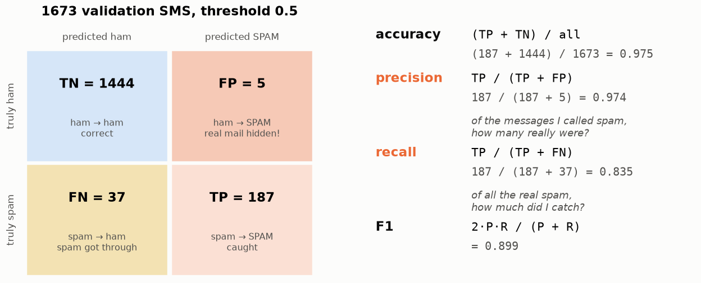
TP = 187 · FN = 37 · FP = 5 · TN = 1,444.
📖 Maya asks her questions one at a time.
"How often is it right?" → accuracy
right answers ÷ all answers = (187 + 1,444) ÷ 1,673 = 1,631 ÷ 1,673 = 0.975 → 97.5 %"When it says spam, can I trust it?" → precision. Look only at what went to the spam folder:
TP ÷ (TP + FP) = 187 ÷ (187 + 5) = 187 ÷ 192 = 0.974"Of 192 messages in the spam folder, 187 really were spam." The 5 others are customers Maya never answered.
"Of all the spam, how much did it catch?" → recall. Look only at the real spam:
TP ÷ (TP + FN) = 187 ÷ (187 + 37) = 187 ÷ 224 = 0.835"It caught 83 % of the spam; 37 still reached the inbox."
Memory trick: Precision looks at what the filter Predicted. Recall looks at what was Really there.
📖 Maya's cousin is a fisherman. "If I use a small net, everything I catch is the fish I want — but I miss most of them. If I use a huge net, I catch all the fish — and also boots and seaweed."
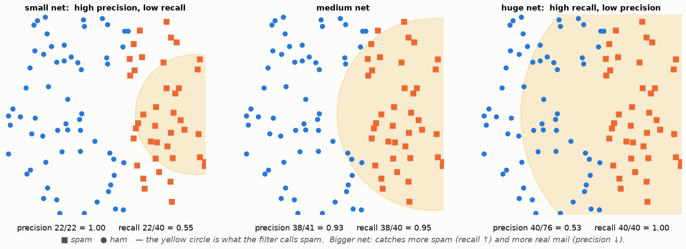
Small net → high precision, low recall. Huge net → high recall, low precision. Which matters more depends on what each mistake costs (Lesson 04).
📖 Omar's lazy friend writes a "filter" in one line: always say inbox. It never catches any spam.
it gets every customer right (1,449 of 1,673) → accuracy 1,449 ÷ 1,673 = 86.6 %
it catches 0 spam → recall 086.6 % "correct" and useless — because most messages are normal anyway. When one class is rare, accuracy alone lies.
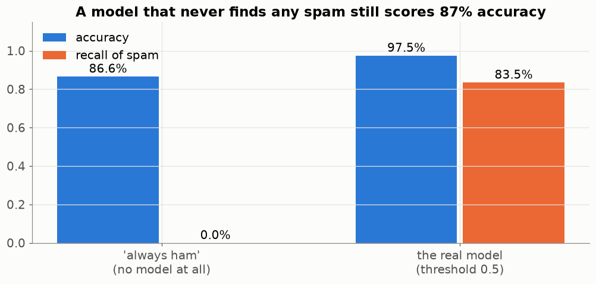
accuracy (90 + 870) ÷ 1000 = 0.96 · precision 90 ÷ 100 = 0.90 · recall 90 ÷ 120 = 0.75.
PhishGuard: recall — a missed phishing site can empty a bank account. Spam: precision — a hidden customer message is expensive.
| student says | the truth |
|---|---|
| "Precision and recall are the same" | Same top (TP), different bottom: what it flagged vs what was really there. |
| "97 % — done" | First compare with "always say the common answer". |
| Project | Where |
|---|---|
| Spam | spamclassifier/ml/threshold.py → confusion_at · ModelComparator.confusion_matrix |
| PhishGuard | phishguard/ml/evaluator.py → ModelEvaluator.metrics |
| WineGrader | winegrader/ml/scoring.py → confusion_matrix, precision_recall_f1, macro_f1, accuracy |
| FaceEmotion | app/ml/evaluator.py → evaluate, plot_confusion_matrix |
F1 combines precision and recall: F1 = 2 × P × R ÷ (P + R) = 2 × 0.974 × 0.835 ÷ 1.809 = 0.899. It is only high when both are high (P = 1, R = 0 gives F1 = 0, not 0.5).
The threshold moves all four boxes — the filter really gives a score, and a line decides:
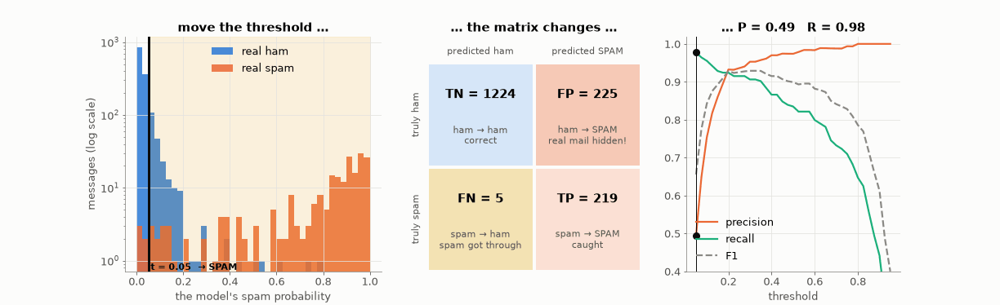
More than two classes (wine grades, emotions): row = truth, column = prediction, the diagonal = correct. Compute P, R, F1 for each class separately ("this class vs all others"), then macro-F1 = their plain average, so a small class counts as much as a big one:
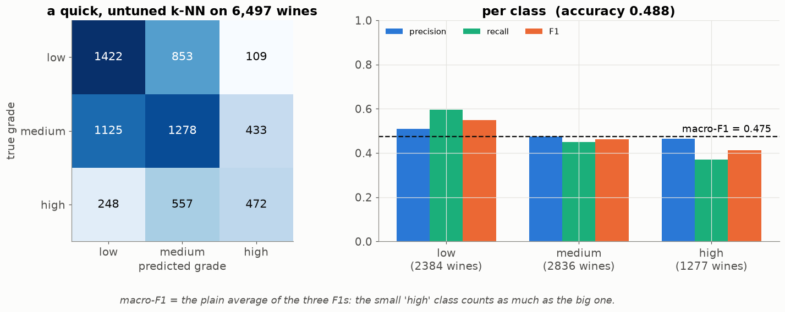
"high": TP 472 · FP 109 + 433 = 542 · FN 248 + 557 = 805 → P 0.465, R 0.370, F1 0.412.
For: Laith (spam threshold) · Dani (PhishGuard threshold, ROC) · Time: 2 × 45 min Before: Lesson 03
In one sentence: a model gives each example a score from 0 to 1; people choose the line (threshold) above which we say "yes" — and the right line depends on which mistake costs more.
Rana works at a bank. Customers forward her strange links: "Is this really the bank?" The bank's new program gives every link a danger score from 0 to 1. Rana's boss asks: "From what score do we block a link?" If they block only above 0.9, some fake links get through and a customer may lose her savings. If they block everything above 0.1, half of the normal websites are blocked and customers call angrily. The program can't decide this. Rana must.
| word | simple meaning |
|---|---|
| score | the model's number for one link, 0 … 1: "how dangerous it looks" |
| threshold | the line: score ≥ threshold → block |
| catch rate (recall) | of all the fake links, the share we block (Lesson 03) |
| false-alarm rate | of all the good links, the share we block by mistake |
| ROC curve | a picture of catch rate vs false-alarm rate for every threshold |
| AUC | one number for how good the scores are: 0.5 = useless, 1 = perfect |
📖 Rana tests on 10 links where she knows the truth. She sorts them by score.
link: 1 2 3 4 5 6 7 8 9 10
score: 0.95 0.90 0.80 0.70 0.60 0.45 0.40 0.30 0.20 0.10
truth: fake fake good fake fake good fake good good good5 fake (1, 2, 4, 5, 7) and 5 good (3, 6, 8, 9, 10).
Line at 0.65 → block links 1, 2, 3, 4:
fake ones blocked: 1, 2, 4 → 3 of 5 → catch rate 0.6
good ones blocked: 3 → 1 of 5 → false-alarm rate 0.2Line at 0.35 → block links 1 to 7:
fake blocked: 1, 2, 4, 5, 7 → 5 of 5 → catch rate 1.0
good blocked: 3, 6 → 2 of 5 → false-alarm rate 0.4Lower line → catch more fakes and more false alarms. Every line is a trade.
📖 Rana tries every possible line, one link at a time, and marks each result as a point on squared paper: across = false alarms, up = catches.
line just below link: none 1 2 3 4 5 6 7 8 9 10
catch rate: 0 .2 .4 .4 .6 .8 .8 1.0 1.0 1.0 1.0
false-alarm rate: 0 0 0 .2 .2 .2 .4 .4 .6 .8 1.0Every fake link moves the point up (good!). Every good link moves it right (bad). Join the points: that's the ROC curve.
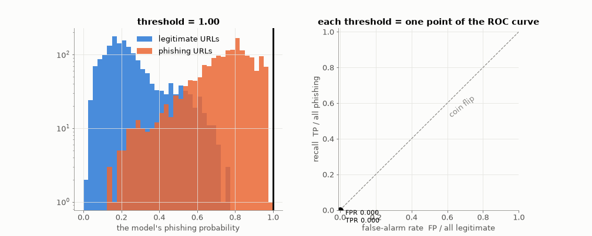
The same thing on real PhishGuard URLs: as the line slides down (left), the point draws the curve (right).
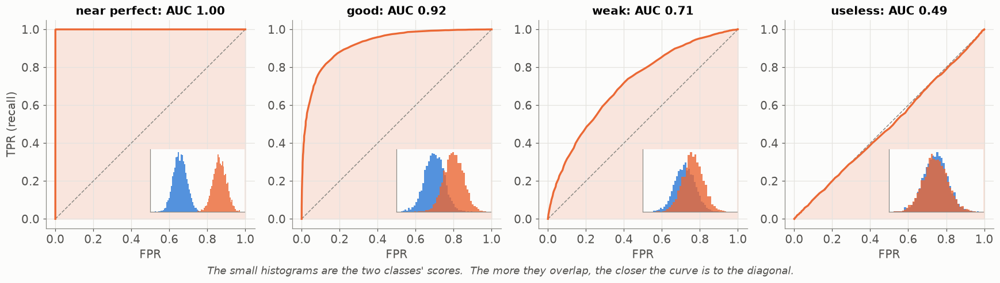
A good model gives fake links high scores and good links low scores — the two piles don't overlap, and the curve shoots straight up first (top-left corner). A useless model mixes them — the curve is the diagonal.
AUC = the area under the curve. For Rana's 10 links it is 0.84. Simple meaning: take one fake and one good link at random — AUC is the chance the fake one got the higher score. (21 of the 25 possible pairs are in the right order: 21 ÷ 25 = 0.84.)
📖 The bank and Maya's phone shop face the same question with opposite answers.
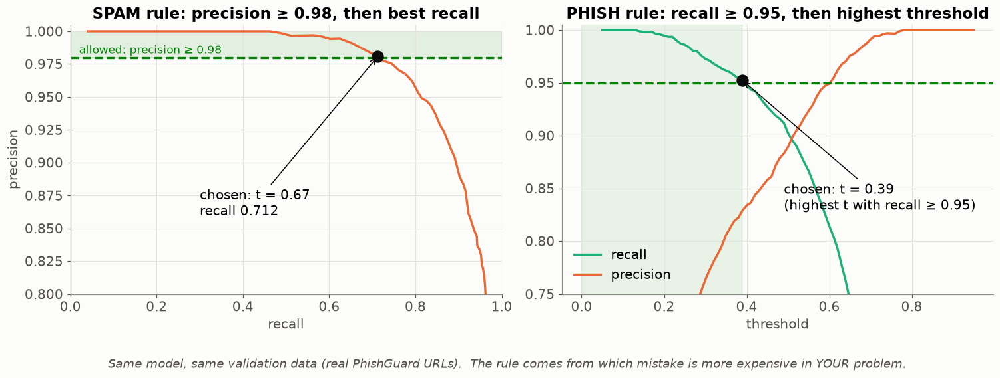
| Laith's spam filter | Dani's PhishGuard | |
|---|---|---|
| the painful mistake | hiding a customer's message | letting a fake bank link through |
| so we demand | precision ≥ 0.98 | catch rate ≥ 0.95 |
| then pick | the line that catches the most spam | the highest line (fewest false alarms) |
Both are chosen on the practice pile (validation), never on the final test (Lesson 01).
blocked 1–5 · fake blocked 1, 2, 4, 5 → 0.8 · good blocked 3 → 0.2.
Its scores are no better than a coin flip.
| student says | the truth |
|---|---|
| "The model decides" | It gives scores; people choose the line. |
| "AUC 0.97 = 97 % correct" | AUC is about the order of the scores, not about one line. |
python visualize.py --live — slide the line yourself.| Project | Where |
|---|---|
| Spam | spamclassifier/ml/threshold.py → choose_threshold (precision ≥ 0.98) |
| PhishGuard | phishguard/ml/evaluator.py → ModelEvaluator.choose_threshold (recall ≥ 0.95), compare · exercises ex10–ex12 |
Laith's algorithm: for t = 0.50, 0.51 … 0.99 compute precision and recall on validation; keep the t with precision ≥ 0.98 and the highest recall; if none reaches 0.98, raise an error (never silently use 0.5). Dani: if no line reaches 0.95, fall back to config.DEFAULT_THRESHOLD.
AUC as pairs on real URLs:
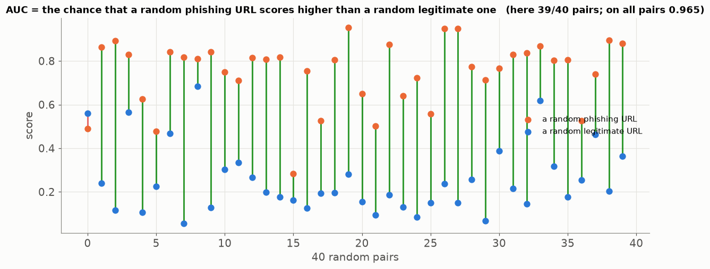
Cost decides: give each mistake a price; the cheapest line moves left when a missed phish is expensive. 0.5 and "best F1" both pretend the mistakes cost the same.
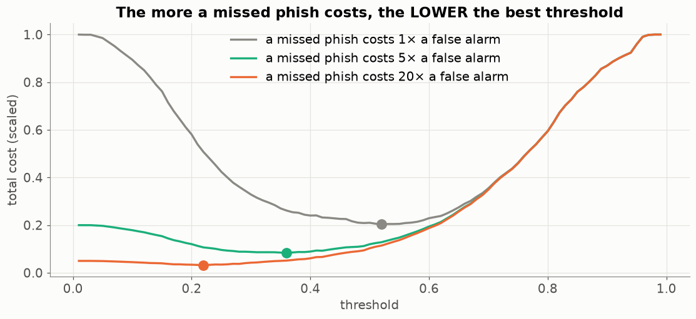
For: Seif (nested CV is the heart of his evaluation) · Laith · Dani · everyone (leakage) · Time: 2 × 45 min Before: Lessons 00 §2–3, 01, 03 · After this: the tuning stages of the ML projects
Sami (the wine shop, Lesson 02) now has a program that grades a wine as low / medium / high. A company offers to buy it — if it is really good. Sami tested it once on 300 wines and got 0.61. He tests again on 300 other wines: 0.55. Which number is true? And the company's expert warns him: "Half the programs we see score great at home and badly with us, because the programmer accidentally let the test wines help." This lesson is how to get one honest number, and how to never fool yourself.
| word | meaning |
|---|---|
| fold | one slice of the data (e.g. one fifth) |
| k-fold cross-validation (CV) | test k times, each time on a different fold, train on the rest; average the k scores |
| mean ± std | the average score and how much it jumps between folds (Lesson 00 §2–3) |
| hyper-parameter | a setting chosen by people, not learned: k in k-NN, C, the threshold (Lesson 01) |
| tuning / grid search | trying many settings and keeping the best |
| leakage | information from the test data sneaks into training or into a decision → a falsely good score |
| nested CV | an inner CV to choose settings, inside an outer CV that measures |
300 test wines is not a lot. Whether a few hard wines land in the test pile or not changes the score by several points. If Sami then chooses between k = 15 and k = 17 on such a noisy number, he's choosing by luck.
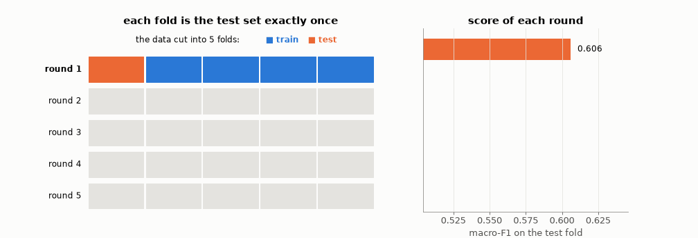
Every wine is tested exactly once, and every score comes from wines the model didn't train on.
The 5 scores Sami gets (real wine data, 5,320 unique wines, a k-NN):
round: 1 2 3 4 5
score: 0.606 0.573 0.574 0.564 0.593
mean = (0.606 + 0.573 + 0.574 + 0.564 + 0.593) / 5 = 2.910 / 5 = 0.582
std: differences from 0.582: +0.024 −0.009 −0.008 −0.018 +0.011
squares (× 1,000,000 to avoid tiny numbers): 576, 81, 64, 324, 121 → sum 1166 → /5 = 233.2 → back: 0.000233
√0.000233 = 0.015
report: 0.582 ± 0.015How to read the ±: if another setting scores 0.590, that's within the jumping range — a tie, not a win.
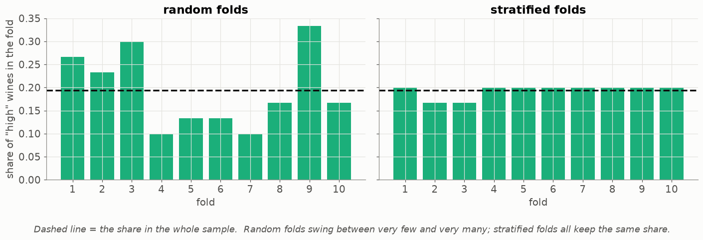
"High" wines are only 19 %. Random folds (left) can get 5 % high wines in one fold and 30 % in another — every fold tests a different problem. Stratified folds (right) deal the high wines out evenly, like dealing cards suit by suit. Seif writes this himself in stratified_kfold.
Leakage = something from the test data helped build the model or make a decision. Nothing crashes. The score just becomes too good — and the program fails with the real customer.
Analogy: a teacher's assistant accidentally sees the exam on Sunday. On Wednesday she gets 100. Does she know the material? We can't tell anymore.
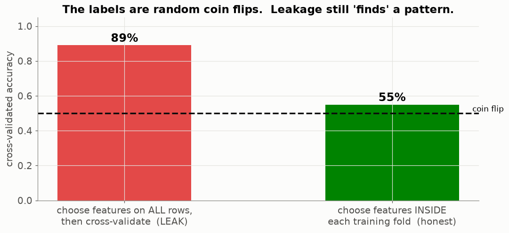
The experiment: 100 rows, 5,000 columns of random numbers, and labels that are coin flips. There is nothing to learn — any honest method must score about 50 %.
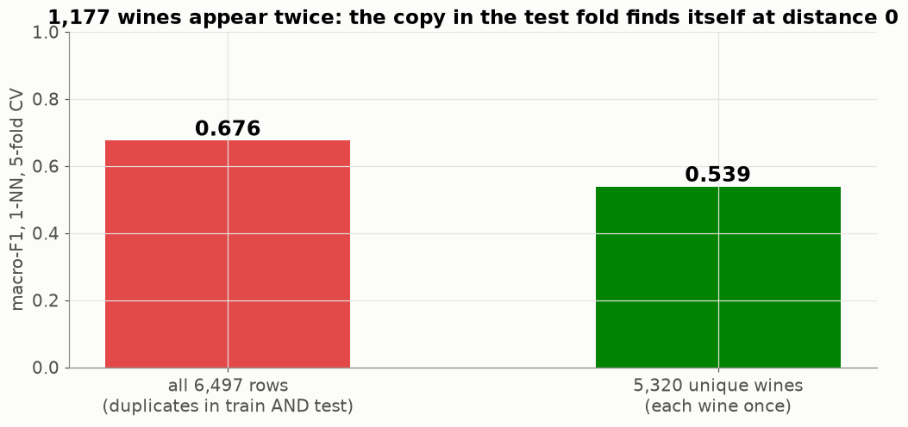
1,177 wines in the dataset are exact copies of other wines. If one copy lands in training and its twin in the test fold, the 1-NN finds the twin at distance 0 and copies its grade: score 0.676. Without duplicates: 0.539. Remove duplicates before splitting — after splitting is too late.
| leak | guard |
|---|---|
| the same example (or its copy) in train and test | remove duplicates before splitting; assert_no_leakage |
| scaler / vocabulary / IDF / feature choice fitted on all rows | fit them on the training part only (a Pipeline) |
| settings or threshold chosen using the test set | a validation set, or nested CV |
| looking at the final test score and trying again | run the final evaluation once |
If Sami uses the same 5 folds to choose the best k (trying 20 values) and to report the score, the reported score is "the best of 20 tries" — lucky, so too high. Nested CV gives each job its own data:
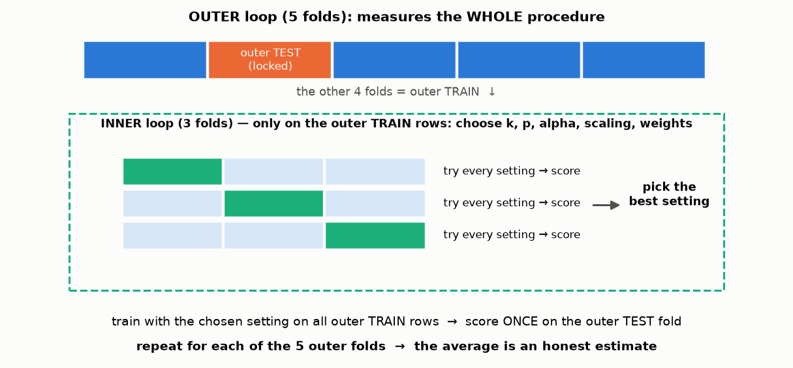
Analogy: to pick the best study method you do practice tests (inner loop). The real exam (outer fold) is written by someone else and you never see it while practising.
for train, test in outer_splits: # 5 times
inner = stratified_kfold(y[train], 3)
tuned = grid_search(X[train], y[train], inner) # never sees X[test]
w = learn_weights(X[train], y[train], tuned.best, inner).weights
result = evaluate_split(model_with(tuned.best, w), X, y, train, test, ...)Seif's proof that nothing leaks: test_nested_never_sees_outer_test scrambles the outer test labels and runs again — the chosen settings must stay identical, because the procedure never looked at them.
| student says | the truth |
|---|---|
| "CV trains one model 5 times" | It trains 5 different models; CV measures the procedure. Afterwards you train one final model on all training data. |
| "With duplicates my score is higher — great" | It is better at looking up answers, not at grading wine. |
| "A small leak doesn't matter" | You can't know how big it is — that's the problem. |
TfidfVectorizer.fit on all texts, (c) threshold chosen on X_test, (d) duplicates removed after train_test_split. Pairs find and fix each leak.python visualize.py --only leakage) and change k=20 to k=200.mean = 2.90 / 5 = 0.58 · differences +0.03, −0.03, 0, +0.02, −0.02 · squares 9, 9, 0, 4, 4 (× 0.0001) → mean 5.2 × 0.0001 = 0.00052 → √ = 0.023 → "0.58 ± 0.02".
It is learned from data (which words exist, how common they are → IDF). If test messages helped build it, the model already knows their rare words. Fit it on the training split only.
No. Different training rows, and nearby k values score almost the same. The table of choices shows how stable tuning is.
| Project | Where |
|---|---|
| WineGrader | winegrader/ml/folds.py → stratified_kfold · data/loader.py → drop_exact_duplicates · ml/evaluation.py → cross_validate, nested_cv · ml/tuning.py → prepare_folds, grid_search · theory 32_WineGrader/01_theory/07_evaluation.md |
| Spam | ModelComparator.cross_validate, assert_no_leakage |
| PhishGuard | ModelTrainer.fit_with_search (grid search with CV on train only) |
For: Laith (SpamClassifier stage 2) · Kosai (ResumeMatch stage 2 — "the gatekeeper") · Time: 2 × 45 min Before: Lesson 01; Python strings and lists · After this: Lesson 07 (TF-IDF)
Hila is a recruiter at a software company. A job for a "C++ developer" gets 200 CVs. She asks Kosai's program to find the CVs that mention C++. The program finds none — although she knows at least ten do. The reason is not the clever ranking maths: it's the very first step, where the program cut the text into words and turned "C++" into "C". This lesson is about that first step — the one that decides what the computer is allowed to see.
| word | meaning | example |
|---|---|---|
| text | for the computer: a long string of characters | "Developed REST APIs in C++" |
| token | one piece the text is cut into | Developed, REST, C++ |
| tokenizing | cutting text into tokens | |
| lower-casing | making every letter small, so "Python" = "python" | |
| stop-word | a very common word that carries no meaning on its own | the, and, in, with |
| stemming | cutting a word to a common root, so its forms match | developed / developing / development → develop |
| n-gram | n neighbouring tokens glued into one term; bigram = 2 | "machine learning" |
| term | a token after all cleaning — what will be counted | develop, machin learn |
| vocabulary | the list of all different terms | |
| pipeline | the fixed order of cleaning steps | |
| regular expression (regex) | a mini-language that describes a pattern of characters | [a-z]+ = "one or more small letters" |
The computer cannot read. To compare a CV with a job advert it will count words (Lesson 07). So we must turn the text into a clean list of words, and every decision matters:
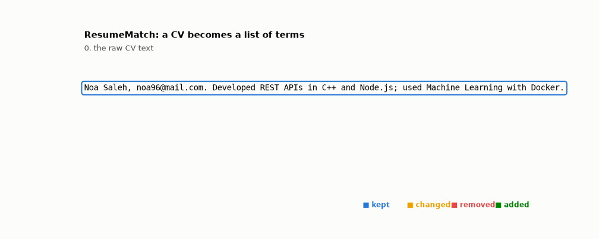
Step by step on one CV sentence:
| step | what happens | result |
|---|---|---|
| 0. raw | Noa Saleh, noa96@mail.com. Developed REST APIs in C++ and Node.js; used Machine Learning with Docker. |
|
| 1. scrub personal data | names, e-mails, phones are removed — they must not influence the ranking, and it's private | Developed REST APIs in C++ and Node.js; used Machine Learning with Docker. |
| 2. tokenize | cut into tokens with a careful pattern (§3) | Developed · REST · APIs · in · C++ · and · Node.js · used · Machine · Learning · with · Docker |
| 3. lower-case | so "Docker" = "docker" | developed · rest · apis · in · c++ · … |
| 4. drop stop-words | in, and, with disappear | developed · rest · apis · c++ · node.js · used · machine · learning · docker |
| 5. stem | words cut to roots | develop · rest · api · c++ · node.js · use · machin · learn · docker |
| 6. add bigrams | every neighbouring pair becomes one more term | … · machin learn · learn docker · … |
Notice "machin" — stems are not always real words. That's fine: they are only matching keys. What matters is that "machine", "machines" and "machining" all become the same key.
Why the bigram step? A CV with "machine learning" and a CV with "learned to use a machine" both contain machin and learn. Only the first contains the term machin learn.
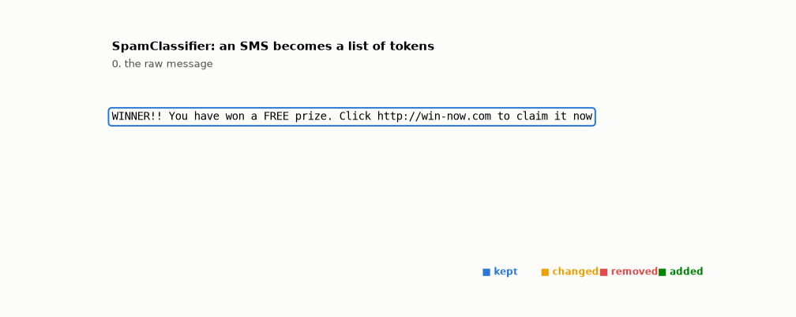
| step | what happens | why |
|---|---|---|
| 1. measure first | count capitals (caps_ratio), "!" and links on the raw text | after lower-casing, caps_ratio would always be 0 — the signal "SHOUTING" would be lost |
2. links → URLTOKEN |
every URL becomes the same token | "there is a link" is a spam signal; the exact address (bit.ly/x7) never repeats |
3. lower-case (keep URLTOKEN) |
||
4. words = runs of letters [a-z']+ |
numbers and symbols are dropped | |
| 5. drop words < 3 letters and stop-words | "a", "to", "you", "now" go | |
| 6. n-grams (1, 2) | words + neighbouring pairs | "click here" means more than "click" + "here" |
The order matters: measure caps before lower-casing (test_parse_measures_caps_before_lowercasing).
A regular expression describes what a token looks like. The obvious one, \w+, means "one or more letters, digits or underscores". Here is what it does to technical words:
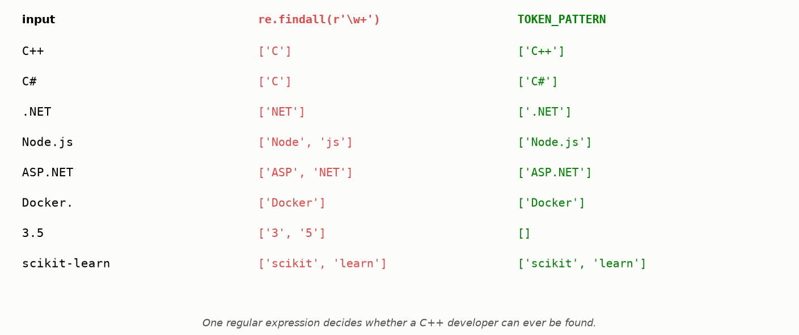
C++ → C. .NET → NET. Node.js → two tokens. Hila's C++ developers vanish. Kosai's pattern, piece by piece:
\.? maybe one dot at the very start → keeps .NET
[A-Za-z-] then one letter, English or Hebrew → a token never starts with a digit, so 3.5 isn't a word
[A-Za-z0-9-+#.]* then any number of letters, digits, + # . → C++, C#, Node.js, ASP.NET stay whole
(?<!\.) the token may NOT end with a dot → "Docker." at the end of a sentence becomes DockerSmall regex vocabulary: [abc] = one of these characters · * = zero or more times · + = one or more · ? = maybe · \. = a real dot (a plain . means "any character").
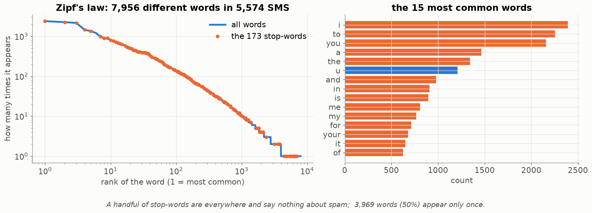
Count every word in the 5,574 SMS and sort them. A handful of words (i, to, you, a, the) appear thousands of times; half of all different words appear only once. This shape appears in every language and is called Zipf's law. Words that are everywhere cannot tell spam from ham, or one CV from another — so we drop them, and the important words become louder.
The cleaning is part of the model. Suppose the model was trained on stemmed words (develop) but the app forgets to stem the job advert (developing): zero matches, and no error message. The projects protect against this:
TextPreprocessor.fingerprint() — a code made from all cleaning settings, saved with the index and checked when loading.features.json and checked when loading.| student says | the truth |
|---|---|
| "Stemming gives real words" | machin, learn, compani — matching keys, not words. Fine. |
| "Lower-case first, it's simpler" | Not in Spam: you destroy caps_ratio before measuring it. |
| "More n-grams = better" | Trigrams multiply the vocabulary for little gain. Measure it. |
"\w+ is a good tokenizer" |
See the table in §3. |
F#, R, 3D, Vue.js, C on regex101.com with Kosai's pattern. Which ones are a real problem for a CV search?in c++, and node.js.)… prize!! URLTOKEN.call, claim, prize, URLTOKEN. 6. bigrams: call claim, claim prize, prize URLTOKEN.run, run, runner — the first two match; "runner" stays different (a person, not an action). Stemmers are rough.
The job text is not cleaned with the same pipeline (not lower-cased / not stemmed), or the tokenizer keeps the trailing dot (docker. ≠ docker).
| Project | Where |
|---|---|
| Spam | spamclassifier/preprocessing/email_parser.py → EmailParser.parse · tokenizer.py → Tokenizer.tokenize, ngrams · theory 08_SpamClassifier/01_theory/03_features.md §3.6–3.9 · notebook 01_text_to_numbers.ipynb |
| ResumeMatch | resumematch/nlp/preprocessor.py → TextPreprocessor.process, _stem, _stem_hebrew, _bigrams, fingerprint · nlp/pii.py → PiiScrubber · theory 31_ResumeMatch/01_theory/04_pipeline.md · notebook 01_preprocessing.ipynb |
For: Kosai (ResumeMatch stages 3–4) · Laith (SpamClassifier stage 3) · Time: 2 × 45 min Before: Lesson 00 §7 (logarithms), §10; Lesson 06 · After this: Lessons 08, 09, 11
Hila the recruiter (Lesson 06) now has clean word lists. She asks: "Which words describe each candidate?" Counting words is the obvious answer — but in every CV the most common words are "experience", "team", "worked". Those tell her nothing. What she wants are the words that make a CV different: "kubernetes", "figma". TF-IDF is the arithmetic for exactly that idea: a word is important for a document if it is frequent in it and rare in the others.
+1 in the IDF formula and why there is a log.| word | meaning |
|---|---|
| document | one text: one CV, one SMS |
| collection / corpus | all the documents: 200 CVs |
| term | one cleaned word (Lesson 06) |
| TF — term frequency | how many times the term is in this document |
| DF — document frequency | in how many documents the term appears (each document counts once) |
| N | the number of documents |
| IDF — inverse document frequency | a weight: big for rare terms, small for common ones |
| TF-IDF | TF × IDF |
| vector | the row of numbers describing one document (Lesson 00 §10) |
| L2 normalisation | dividing a vector by its length so that its length becomes 1 |
Three tiny CVs (already cleaned):
CV 1: python python sql docker
CV 2: java sql spring
CV 3: python sql pandasMake a table: one row per CV, one column per term, and in each cell how many times the term appears.
That's a bag of words: like pouring the words into a bag and counting them — the order is forgotten. Each CV is now a row of numbers, which the computer can compare.
The problem: sql is in every CV. It describes none of them better than the others. We want it to weigh less.
python appears 2 times in CV 1 → TF = 2. (Kosai uses the raw count; Laith divides by the message length, §5.)
Count each document once, no matter how many times the word appears in it:
python: CV 1, CV 3 → DF = 2
sql: CV 1, CV 2, CV 3 → DF = 3
docker: CV 1 → DF = 1 (java, spring, pandas: also 1)Kosai's formula (N = 3 documents):
Read it in three parts:
python: (1 + 3) / (1 + 2) = 4 / 3 = 1.333 ln(1.333) = 0.2877 + 1 → idf = 1.2877
sql: (1 + 3) / (1 + 3) = 4 / 4 = 1 ln(1) = 0 + 1 → idf = 1.0000
docker: (1 + 3) / (1 + 1) = 4 / 2 = 2 ln(2) = 0.6931 + 1 → idf = 1.6931(ln on the calculator, or math.log(...) in Python.)
The two +1s:
1 + inside: avoids dividing by zero, and smooths the numbers a little.+ 1 at the end: a word in every document gets 1, not 0 — it is weakened, not deleted.CV 1: python 2 × 1.2877 = 2.58 sql 1 × 1.0 = 1.00 docker 1 × 1.6931 = 1.69Read it: "docker describes CV 1 better than sql, even though each appears once — because docker is rare."
The length of a row of numbers is Pythagoras (Lesson 00 §10): the root of the sum of the squares.
length of CV 1 = √(2.58² + 1.00² + 1.69²) = √(6.66 + 1.00 + 2.86) = √10.52 = 3.24
divide every number by 3.24: python 2.58 / 3.24 = 0.79 sql 0.31 docker 0.52
check: √(0.79² + 0.31² + 0.52²) = √(0.62 + 0.10 + 0.27) = √0.99 ≈ 1 ✓Why? A CV that pastes the same paragraph four times would have 4× bigger numbers everywhere and win every comparison. After dividing by the length, only the proportions remain — which words, in what mix — not how much text there is.
With 200 CVs: "kubernetes" (in 5 CVs) gets a big weight, "python" (60) a medium one, "experience" (190) almost the minimum. The curve drops fast and then flattens — that's the log.
Left: the words this CV repeats. Right: the words with the highest TF-IDF — the ones that make it different: skills like figma, webpack — and the candidate's name (rare!). The name is not a skill — it's exactly why Kosai's pipeline removes personal data before counting (Lesson 06).
| TF | IDF | check values | |
|---|---|---|---|
| ResumeMatch (Kosai) | raw count | ln((1 + N) / (1 + df)) + 1 |
N = 3: df 2 → 1.2877, df 1 → 1.6931, df 3 → 1.0000 |
| SpamClassifier (Laith) | count ÷ number of terms in the message | ln(N / (1 + df)) + 1 |
N = 1000: "the" (1000) ≈ 1.0, "meeting" (100) ≈ 3.3, "viagra" (5) ≈ 6.1 |
Laith's "meeting", step by step: N / (1 + df) = 1000 / 101 = 9.90 → ln(9.90) = 2.29 → + 1 = 3.29.
Use your own project's formula exactly — the tests check the numbers.
df = Counter()
for doc in docs:
df.update(set(doc)) # set() ! — each term counts ONCE per documentWithout set(), a word shouted 500 times in one e-mail gets DF = 500 and looks "common everywhere". Tests: test_document_frequency_counts_documents_not_occurrences (Kosai), the vocabulary test (Laith).
| student says | the truth |
|---|---|
| "IDF is per document" | IDF is per term, computed once over the whole training collection. TF is per document. |
| "Compute IDF with the test documents too" | Leakage (Lesson 05). Fit on training; reuse for new documents. |
| "TF-IDF understands meaning" | It counts. "java" (coffee) = "java" (language). |
ln), then TF-IDF for one ad, then its length and the normalised row.set() in the notebook and see how the weights change.(1 + 5) / (1 + 1) = 6 / 2 = 3 → ln(3) = 1.0986 → + 1 = 2.0986.
python 1 × 1.2877 = 1.29 · sql 1.00 · pandas 1.69 · length √(1.66 + 1 + 2.86) = √5.52 = 2.35 → 0.55, 0.43, 0.72.
length √(9 + 16) = 5 → (0.6, 0.8).
| Project | Where |
|---|---|
| ResumeMatch | resumematch/nlp/vocabulary.py → VocabularyBuilder.build, compute_idf · rank/tfidf.py → TfidfRanker.fit, _l2_normalise_rows · theory 31_ResumeMatch/01_theory/01_vectors.md · notebook 02_tfidf_cosine.ipynb |
| Spam | spamclassifier/features/feature_engineer.py → fit, transform, idf_value, l2_normalise · theory 08_SpamClassifier/01_theory/03_features.md §3.3–3.5 |
For: Kosai (ResumeMatch stage 4) · Time: 45 – 60 min Before: Lesson 00 §5, §6, §10; Lesson 07 · After this: Lessons 09, 10
Hila has a job advert: "Python and SQL developer". Every CV is now a row of TF-IDF numbers (Lesson 07), and so is the advert. She needs one number per CV: "how similar is this CV to the advert?" — then she can sort the 200 CVs and read the top 10. This lesson builds that number, using an idea from geometry: the angle between two arrows.
| word | meaning |
|---|---|
| vector | a list of numbers, drawn as an arrow from (0, 0) — Lesson 00 §10 |
| dimension | one position in the list = one word. 2 words → 2-D (a page), 5,000 words → 5,000-D (can't draw, same maths) |
| length of a vector | Pythagoras: √(sum of the squares) |
| dot product a · b | multiply the numbers in matching positions, then add |
| angle | how far apart two arrows point |
| cosine of an angle | a number: 1 when the angle is 0°, 0 when it is 90° |
| cosine similarity | dot product ÷ (length × length) = the cosine of the angle |
Keep only two words, python and sql. Then every document is two numbers — a point on squared paper, or an arrow from the corner to that point.
The key idea: two documents about the same things in the same proportions point the same way, no matter how long they are. So we measure the angle, not the distance.
Dot product — multiply matching positions, add (Lesson 00 §5):
J · A = (1 × 2) + (1 × 1) = 2 + 1 = 3Length — Pythagoras:
|J| = √(1² + 1²) = √2 = 1.414
|A| = √(2² + 1²) = √5 = 2.236Cosine similarity:
The same for B and C:
J · B = 1·4 + 1·2 = 6 |B| = √(16 + 4) = √20 = 4.472 cos = 6 / (1.414 × 4.472) = 6 / 6.325 = 0.949
J · C = 1·0 + 1·3 = 3 |C| = √(0 + 9) = 3 cos = 3 / (1.414 × 3) = 3 / 4.243 = 0.707A and B get exactly the same score — B is just longer. C is less similar.
| cosine | angle | meaning for texts |
|---|---|---|
| 1 | 0° | the same words in the same proportions |
| 0.7 | 45° | partly the same |
| 0 | 90° | not one word in common |
| below 0 | over 90° | impossible with word counts: they are never negative |
So for texts, cosine is always between 0 and 1 — a clean score to show a recruiter.
The straight-line distance (Lesson 02) says "the same CV × 5" is the farthest from the job — just because it's longer. Cosine ignores length and says it is identical. For texts, length mostly measures how much someone wrote, not what they know.
If every vector was already divided by its length (L2 normalisation, Lesson 07), then all lengths are 1 and
Kosai normalises every CV row once, at training time. Ranking 200 CVs is then 200 dot products.
fit: every CV → counts → × idf → ÷ its length (stored)
rank: advert → the same cleaning → × idf → ÷ its length
score[i] = dot(CV_i, advert) for every CV, sort from high to lowThe advert "Backend Python developer" against the project's 200 CVs. Green = a CV a human marked as relevant. 8 of the top 10 are relevant. But the top two are wrong: CVs that copied the job advert into their text. Cosine measures shared words, not skill. That's why Kosai's system has a reliability check (RankExplainer.warning_for) that warns when a CV repeats the advert's sentences but lacks its skills.
| student says | the truth |
|---|---|
| "Cosine 0.6 = 60 % match of skills" | It measures similarity of word use, not a share of skills. |
| "Bigger dot product = more similar" | Only after normalising; without it, long documents win. |
| "Cosine knows postgres = postgresql" | They are different words → different directions. |
a · b = 12 + 12 = 24 · |a| = √(9 + 16) = 5 · |b| = 5 · cos = 24 / 25 = 0.96.
|J| = √2. A: (2 + 2)/(√2 · √8) = 4/4 = 1 · B: 1/(√2 · √2) = 0.5 · C: 0/… = 0.
CV₁ points the same way as the advert: cos = 1. CV₂ = (50, 0, 0): dot = 50, lengths 50 and √3 → cos = 50/(50 · 1.732) = 0.58. Repeating a word doesn't help.
| Project | Where |
|---|---|
| ResumeMatch | resumematch/rank/tfidf.py → TfidfRanker._l2_normalise_rows, _vectorise_job, rank, explain · rank/base.py → Ranker._normalise · rank/explainer.py → RankExplainer.warning_for · theory 31_ResumeMatch/01_theory/02_cosine.md · notebook 02_tfidf_cosine.ipynb |
For: Kosai (ResumeMatch stage 5 — the comparison that is his project) · Time: 2 × 45 min Before: Lessons 00 §7, 07, 08 · After this: Lesson 10
Hila's TF-IDF ranking works — but she notices two annoying things.
- One candidate wrote "Python Python Python …" 15 times (a "keyword stuffer"). TF-IDF thinks he is 15× more of a Python person than someone who wrote it once. He isn't.
- Some CVs are 3 pages long and list every technology ever invented ("also familiar with …"). They match every job a little, just by being long.
Search engines (Google, Elasticsearch) solved both problems decades ago with a formula called BM25. This lesson builds it from those two problems, one piece at a time — and then shows how a search engine avoids reading all documents at all.
| word | meaning |
|---|---|
| tf | how many times the word is in this CV (Lesson 07) |
| saturation | after a few mentions, more mentions add almost nothing |
| k1 | a knob: how fast saturation happens (project: 1.5) |
| |d| | the length of this CV (number of terms) |
| avgdl | the average length of all CVs |
| b | a knob: how strongly long CVs are punished (0 = not at all, 1 = fully; project: 0.75) |
| inverted index | for every word, the list of CVs that contain it — like the index at the back of a book |
In TF-IDF, "python" 20 times counts 10× more than 2 times. BM25 replaces the raw count tf with this repeat factor:
Step by step:
tf = 1: 1 × 2.5 / (1 + 1.5) = 2.5 / 2.5 = 1.00
tf = 2: 2 × 2.5 / (2 + 1.5) = 5.0 / 3.5 = 1.43 (+0.43 for the 2nd mention)
tf = 5: 5 × 2.5 / (5 + 1.5) = 12.5 / 6.5 = 1.92
tf = 20: 20 × 2.5 / (20 + 1.5) = 50 / 21.5 = 2.33 (18 more mentions added only 0.4)
tf = ∞: approaches k1 + 1 = 2.50 (the ceiling — it can never be more)Why does it flatten? When tf is big, the top (tf × 2.5) and the bottom (tf + 1.5) both grow with tf, so their ratio stops growing and approaches 2.5.
The animation sweeps k1: small k1 → the first mention is almost all that counts; big k1 → almost a straight line, like TF-IDF. The keyword stuffer's 15 mentions now count only a little more than 2 mentions.
BM25 adds the CV's length into the bottom of the fraction:
Look only at the bracket. |d| / avgdl = "how long is this CV compared to an average CV":
average length (|d|/avgdl = 1): 1 − 0.75 + 0.75 × 1 = 1 → nothing changes
twice as long (= 2): 1 − 0.75 + 0.75 × 2 = 1.75 → the bottom gets bigger → score smaller
half as long (= 0.5): 1 − 0.75 + 0.75 × 0.5 = 0.625 → the bottom gets smaller → score biggerThe knob b says how strongly: b = 0 → the bracket is always 1 → length ignored; b = 1 → full correction.
With b = 0 the top-10 CVs are on average 136 terms long (average CV: 100) — long CVs flood the top. With b = 0.75 they are 79. On this data the precision of the top 10 hardly changes (0.86–0.88). That is a result too — Kosai shows both charts in his book and explains them.
Without the + 1 inside the log, a word in more than half of the CVs would get a negative weight — mentioning it would lower your score. Using the TF-IDF formula here by mistake is a silent bug: nothing crashes, the ranking is just worse.
N = 200 CVs, "python" in 60 of them, average length 100. One CV mentions python 2 times and has 150 terms.
1. idf = ln((200 − 60 + 0.5) / (60 + 0.5) + 1)
= ln(140.5 / 60.5 + 1) = ln(2.322 + 1) = ln(3.322) = 1.2006
2. bracket = 1 − 0.75 + 0.75 × (150 / 100) = 0.25 + 1.125 = 1.375
3. bottom = tf + k1 × bracket = 2 + 1.5 × 1.375 = 2 + 2.0625 = 4.0625
4. top = tf × (k1 + 1) = 2 × 2.5 = 5
5. factor = 5 / 4.0625 = 1.2308
6. score = idf × factor = 1.2006 × 1.2308 = 1.4777The CV's total score for a job = the sum of these term scores over the job's words (Σ, Lesson 00 §5).
The same CV if it were average length (150 → 100): bracket 1, bottom 3.5, factor 1.4286, score 1.7151 — higher, because it is shorter.
To rank 200 CVs, TF-IDF computes 200 dot products. Google has billions of pages. The trick: an inverted index — like the index at the back of a textbook.
For every word, keep the list of CVs that contain it (and how many times). To rank the job "python django", walk only those two lists. A CV with neither word is never touched — its score is 0 without even looking.
for term in set(job_terms):
if term not in self.inverted:
continue
for doc_row, tf in self.inverted[term]:
scores[doc_row] += self._term_score(tf, self.doc_len[doc_row], idf[term])Put "CVs touched / total" in the book — proof that the index does its job.
Cosine is between 0 and 1; a BM25 score can be 3.7 or 41.2. So: normalise each ranking by its top score (Ranker._normalise), and compare the methods by rank positions and P@k / MRR (Lesson 10), never by raw numbers.
| student says | the truth |
|---|---|
| "BM25 uses the same IDF as TF-IDF" | No — §3. A separate function, compute_idf_bm25. |
| "b = 0.75 is magic" | A common default. The project measures it instead of trusting it. |
| "The index changes the scores" | It only changes which CVs are looked at. Same scores. |
python visualize.py --live — move k1, watch the ceiling.3 × 2.5 / (3 + 1.5) = 7.5 / 4.5 = 1.67.
No: the bracket = 1 − 0 + 0 = 1 for every CV, so |d| disappears.
Without: ln(50.5 / 150.5) = ln(0.3355) = −1.09 (negative!). With: ln(0.3355 + 1) = ln(1.3355) = 0.289.
| Project | Where |
|---|---|
| ResumeMatch | resumematch/nlp/vocabulary.py → compute_idf_bm25 · resumematch/rank/bm25.py → Bm25Ranker.fit (inverted index, doc_len, avgdl), rank, _term_score · config BM25_K1 = 1.5, BM25_B = 0.75 · theory 31_ResumeMatch/01_theory/03_bm25.md · notebook 03_bm25.ipynb |
For: Kosai (ResumeMatch stage 6) · Time: 45 min Before: Lessons 03, 08, 09 · After this: the experiments chapter of the book
Hila doesn't read 200 CVs. She opens the program, reads the first 10 in the ranking, and calls the good ones. So for her, a "good ranking" means two things: (1) many good CVs among the first 10, and (2) a good CV at the very top, so she doesn't waste her first call. Accuracy (Lesson 03) measures neither. This lesson gives two numbers that measure exactly Hila's two wishes.
| word | meaning |
|---|---|
| ranking | the list of all CVs from best to worst, as the program sorted them |
| relevant | a CV a human marked as a good fit for the job, before seeing the program's ranking |
| k | how many top results we look at (Hila: 10) |
| P@k (precision at k) | of the first k results, the share that are relevant |
| RR (reciprocal rank) | 1 / (position of the first relevant result) |
| MRR | the average RR over all jobs |
The ranking: C3, C7, C1, C9, C4, C2, C8, C5, C6, C0. Relevant (marked by a human): C1, C5, C7.
k = 1: [C3] relevant: none P@1 = 0 / 1 = 0.00
k = 2: [C3, C7] relevant: C7 P@2 = 1 / 2 = 0.50
k = 3: [C3, C7, C1] relevant: C7, C1 P@3 = 2 / 3 = 0.67
k = 4: + C9 still 2 P@4 = 2 / 4 = 0.50
k = 10: all C7, C1, C5 P@10 = 3 / 10 = 0.30⚠️ Always divide by k, even if the list is shorter than k (missing places count as misses) — test_precision_denominator_is_k_not_list_length.
| first relevant at position | 1 | 2 | 3 | 4 | 10 | never |
|---|---|---|---|---|---|---|
| RR | 1/1 = 1.0 | 1/2 = 0.5 | 1/3 = 0.33 | 1/4 = 0.25 | 1/10 = 0.1 | 0 |
Why "1 divided by"? So that position 1 is worth the most and every step down is worth less — but position 30 vs 31 barely matters.
In the example above the first relevant CV (C7) is at position 2 → RR = 0.5.
MRR = the average RR over all jobs. Three jobs with RR 1, 0.5 and 0.25 → (1 + 0.5 + 0.25) / 3 = 0.58.
P@k doesn't care about the order inside the top k. RR only cares about the first hit. Report both.
Simple versions of both methods on the 200 CVs and 5 labelled jobs: P@5 = 0.80 for both; P@10 = 0.90 (TF-IDF) vs 0.88 (BM25); MRR = 0.57 for both. Why is MRR low when P@10 is high? Because in four of the five jobs a CV that copied the job advert (Lesson 08) takes position 1. A precise, explainable finding for the book — and the reason for the reliability check.
The "relevant" lists must be made before looking at the program's ranking, by reading the CVs. If you label after seeing the ranking, you start agreeing with the program's mistakes.
| student says | the truth |
|---|---|
| "P@10 = 0.9 means 90 % accuracy" | 9 of the first 10 are good. Nothing about the other 190. |
| "Divide by the number of results returned" | Divide by k. |
| "MRR 0.57 means position 0.57" | It is an average of 1/position: "between 1st and 2nd on average". |
top 3: R4, R1, R9 → 0 relevant → P@3 = 0 · top 5 adds R2, R7 → 2/5 = 0.4 · first relevant R2 at position 4 → RR = 0.25.
(1 + 0.5 + 0) / 3 = 0.5.
The system finds good candidates but doesn't put the best one first — something pushes wrong CVs to the top (here: copied advert text). Then show which CVs and why.
| Project | Where |
|---|---|
| ResumeMatch | resumematch/eval/metrics.py → precision_at_k, reciprocal_rank, mean_reciprocal_rank, evaluate · evaluate.py · LabelRepository · theory 31_ResumeMatch/01_theory/06_evaluate.md · notebook 04_evaluate.ipynb |
For: Laith (SpamClassifier stage 4 — the heart of the project) · Time: 3 × 45 min Before: Lesson 00 §1, §4, §7 (fractions, probability, logs); Lessons 03, 06 · After this: Lessons 04, 14
Maya (the phone shop, Lesson 01) asks her nephew: "How does your filter decide? Explain it to me without computers." He answers with a question: "If I tell you a message contains the word 'free', how sure are you it's spam?" — "Pretty sure." — "And if it also contains 'prize' and a link?" — "Almost certain." — "And if instead it says 'see you tomorrow'?" — "Then it's a customer." That's the whole algorithm: each word is a piece of evidence, and we combine the evidence. Naive Bayes does the same thing with counting and probabilities — and can tell you exactly which words convinced it.
| word | meaning | Maya's example |
|---|---|---|
| P(spam) | the share of all messages that are spam | 13 % → 0.134 — the prior: what we believe before reading the message |
| P(free | spam) | among spam messages only, the share containing "free" — read the bar as "given" or "among" | 23 % — the likelihood |
| P(spam | free) | among messages containing "free", the share that are spam | 75 % — the posterior: what we believe after seeing "free" |
| evidence | what we observe: the words of the message | |
| independent | knowing one thing tells you nothing about the other | two dice |
| smoothing | adding a little to every count so nothing is exactly 0 | |
| log space | doing the calculation with logs, adding instead of multiplying (Lesson 00 §7) | |
| log-odds of a word | how strongly that word pushes toward spam (+) or ham (−) |
All 5,574 SMS, real counts:
all messages: 5,574
spam: 747 ham (normal): 4,827
messages that contain "free":
spam with "free": 174 ham with "free": 59Question: a new message contains "free". How likely is it spam?
Answer by counting: look only at the messages that contain "free" — there are 174 + 59 = 233 of them. Of these, 174 are spam:
P(spam | free) = 174 / 233 = 0.747 → 75 %That's it. Bayes' theorem is "throw away everything that doesn't match what you saw, then count".
The surprise: "free" appears in only 23 % of spam — yet seeing it raises our belief from 13 % to 75 %. Because it is even rarer in ham.
Check it with our numbers, step by step:
P(free | spam) = 174 / 747 = 0.233 (likelihood)
P(spam) = 747 / 5574 = 0.134 (prior)
P(free) = 233 / 5574 = 0.0418 (all messages with "free")
P(spam | free) = 0.233 × 0.134 / 0.0418 = 0.0312 / 0.0418 = 0.747 ✓ the same 75 %In words: posterior = likelihood × prior / evidence. Or: what we believe after = how typical the word is for spam × what we believed before.
Classroom puzzle — the doctor's test: a disease affects 1 in 1,000 people. A test catches 99 % of sick people, but also says "sick" for 5 % of healthy people. You test positive. Chance you're sick? (Most people say 99 %.) Count with 100,000 people: 100 sick → 99 positive; 99,900 healthy → 4,995 positive. P(sick | positive) = 99 / (99 + 4,995) = 1.9 %. The prior (1 in 1,000) matters enormously.
A message has many words: "free", "prize", "claim". We'd need P(free and prize and claim | spam) — but most combinations of words never appear even once in 5,574 messages. So we make a simplifying assumption:
Naive assumption: within one class, the words are independent — like separate dice.
Then the probability of all the words together is the product of their separate probabilities:
It is false ("click" and "here" come together), but for choosing between two classes it works very well, because the mistakes push both classes in a similar way.
So, to classify, compute two scores and compare:
score(spam) = P(spam) × P(w1|spam) × P(w2|spam) × …
score(ham) = P(ham) × P(w1|ham) × P(w2|ham) × …
the bigger score winsFour training messages (already cleaned):
spam: [free, money, now] [free, prize, winner]
ham: [meeting, tomorrow, office] [project, meeting, notes]Priors: 2 of 4 messages are spam → P(spam) = 2/4 = 0.5; P(ham) = 0.5.
Vocabulary (all different words): free, meeting, money, notes, now, office, prize, project, tomorrow, winner → |V| = 10 words.
Counts inside each class:
spam words: free 2, money 1, now 1, prize 1, winner 1 → total 6
ham words: meeting 2, tomorrow 1, office 1, project 1, notes 1 → total 6Probability of a word inside a class — at first: count / total. P(free | spam) = 2 / 6 = 0.333.
"free" never appears in ham → P(free | ham) = 0 / 6 = 0. Then any message containing "free" gets score(ham) = … × 0 × … = 0, whatever else it says — even "free parking at tomorrow's meeting". One unseen word kills a whole class.
Laplace smoothing: pretend every word was seen once more than it was (add α = 1 to every count). To keep the probabilities adding up to 1, add |V| (once for each of the 10 words) to the total:
P(free | spam) = (2 + 1) / (6 + 10) = 3 / 16 = 0.1875
P(free | ham) = (0 + 1) / (6 + 10) = 1 / 16 = 0.0625 ← small, but not zeroA long message has 300 words. Multiplying 300 numbers like 0.001 gives 10⁻⁹⁰⁰. The computer can't store anything below about 10⁻³⁰⁸ — it becomes exactly 0.0 for both classes, and the comparison is meaningless.
Fix: use the log rule (Lesson 00 §7): log(a × b) = log(a) + log(b). Instead of multiplying the probabilities, add their logs:
Logs of numbers below 1 are negative, so the scores are negative numbers like −47 and −52 — closer to 0 = more likely. They never underflow.
spam: ln(0.5) + ln P(free|spam) + ln P(money|spam)
= ln(0.5) + ln(3/16) + ln(2/16)
= −0.693 + (−1.674) + (−2.079) = −4.446
ham: ln(0.5) + ln(1/16) + ln(1/16)
= −0.693 + (−2.773) + (−2.773) = −6.239
spam's score is closer to 0 → SPAMThe app shows "92 % spam", not "−4.446". The safe way (never leaving log space until the end):
difference = −6.239 − (−4.446) = −1.793
e^(−1.793) = 0.166
P(spam) = 1 / (1 + 0.166) = 1 / 1.166 = 0.857 → 86 %(Don't compute e^score for each class separately — that's the underflow again. And if the difference is above 700, the answer is simply 0 or 1: math.exp(710) crashes.)
"URGENT! You have won a free prize. Call now to claim your cash award" → cleaned to urgent free prize call claim cash award. Each word adds its log-probability to both scores (bars grow left); the gap between them is the evidence. Below: each word's vote.
Each word's vote is its log-odds:
toy model: log-odds(free) = ln(0.1875) − ln(0.0625) = −1.674 − (−2.773) = +1.10 → pushes to SPAM
log-odds(meeting) = ln(1/16) − ln(3/16) = −1.10 → pushes to HAMOn the real data: claim, prize, URLTOKEN push hardest to spam; later, lor, ask to ham. These numbers are the model — so the app can say "flagged because of: claim (+5.6), prize (+5.4), a link (+4.5)". That's why Naive Bayes is Laith's main model, even if the SVM (Lesson 14) were slightly more accurate.
test_matches_sklearn trains scikit-learn's MultinomialNB(alpha=1.0) on the same data and demands the same answer to 9 decimal places.
| symptom | likely cause |
|---|---|
| way off everywhere | smoothing added on top but not at the bottom |
| right order, wrong values | forgot `+ α· |
| right for short messages, wrong for long | left log space too early |
| wrong only with unknown words | smoothing unknown words at prediction time — skip them instead |
| student says | the truth |
|---|---|
| "P(free | spam) is the chance a 'free' message is spam" | That's P(spam | free). The bar is not symmetric — remember the doctor. |
| "Unknown words should get a probability at prediction time" | Skip them: they'd add the same amount to both classes. |
| "NB's percentages are exact" | They are extreme (99.99 %) because of the naive assumption. The order is good; the threshold is chosen on validation (Lesson 04). |
200 spam → 60 with "win"; 800 ham → 16 with "win". P = 60 / (60 + 16) = 0.79.
spam: ln 0.5 + ln(1/16) + ln(1/16) = −0.693 − 2.773 − 2.773 = −6.239 · ham: ln 0.5 + ln(3/16) + ln(2/16) = −0.693 − 1.674 − 2.079 = −4.446 → ham.
difference = −52.3 − (−47.1) = −5.2 · e^(−5.2) = 0.0055 · 1 / 1.0055 = 0.9945.
| Project | Where |
|---|---|
| Spam | spamclassifier/ml/naive_bayes.py → fit, predict_log_scores, predict_proba, predict, log_odds, explain, most_discriminative, to_dict/from_dict · ml/explainer.py · config laplace_alpha: 1.0 · theory 08_SpamClassifier/01_theory/04_naive_bayes.md · notebook 02_naive_bayes_from_scratch.ipynb |
For: Dani (PhishGuard — first model, explanations) · the gradient-descent part also for Ryan (Lesson 21) Time: 3 × 45 min · Before: Lesson 00 §5, §7, §8, §9; Lessons 02, 03, 18 · After this: Lessons 13, 21
Rana at the bank (Lesson 04) used to judge links by experience: "An @ in the address? Suspicious. The word 'paypal' before the real domain? Very suspicious. HTTPS? A bit more trustworthy." Her manager asks her to write it down as a points system: each warning sign gets points, add them up, and decide. Rana writes one — but how many points should each sign get? She guesses. Logistic regression is a points system that learns the best points from thousands of examples, and then turns the total into a probability.
| word | meaning | Rana's version |
|---|---|---|
| feature x | one number about the link (Lesson 18) | has_at_symbol = 1 |
| weight w | the points that feature is worth; can be negative | @ is worth +0.8 |
| bias b | the starting points, before looking at any feature | everyone starts at −1.0 |
| z | the total: Σ wᵢ·xᵢ + b — any number | |
| sigmoid σ(z) | the S-curve that turns any number into a probability 0 … 1 | |
| p | the predicted probability of phishing | 0.76 |
| y (truth) | 1 = phishing, 0 = legitimate | |
| loss | a number that measures how wrong one prediction was | |
| training | finding the weights with the smallest total loss | |
| gradient descent | improving the weights by small steps "downhill" on the loss (Lesson 00 §9) | |
| learning rate (lr) | how big each step is |
Rana's first guess of the points (invented weights — the real ones are learned in §4):
| feature | weight |
|---|---|
| has_at_symbol (an @ in the URL) | +0.8 |
| brand_in_subdomain ("paypal" before the real domain) | +1.2 |
| has_https | −1.5 (HTTPS lowers suspicion) |
| num_dots | +0.05 per dot |
| bias (start) | −1.0 |
URL A: http://paypal.com.secure-login.xyz/verify → has_at 0, brand 1, https 0, dots 3:
z = 0.8×0 + 1.2×1 + (−1.5)×0 + 0.05×3 + (−1.0)
= 0 + 1.2 + 0 + 0.15 − 1.0
= 0.35URL B: https://www.google.com/ → has_at 0, brand 0, https 1, dots 2:
z = 0 + 0 + (−1.5)×1 + 0.05×2 − 1.0 = −1.5 + 0.10 − 1.0 = −2.40Positive z leans phishing, negative leans legitimate. But "0.35" isn't a probability yet.
Each bar is weight × value — the explanation PhishGuard shows: "this URL was flagged mostly because of a brand name in the subdomain".
(e ≈ 2.718 — Lesson 00 §8. The calculator has an eˣ button.)
URL A: z = 0.35 → e^(−0.35) = 0.705 → 1 / (1 + 0.705) = 1 / 1.705 = 0.59 → 59 % phishing
URL B: z = −2.40 → e^(2.40) = 11.02 → 1 / (1 + 11.02) = 1 / 12.02 = 0.083 → 8 % phishingWhat the sigmoid does: very negative z → close to 0; z = 0 → exactly 0.5; very positive z → close to 1. It never goes below 0 or above 1 — exactly what a probability needs.
To learn good weights, the computer needs a number for "how wrong". For one example:
if the truth is phishing (y = 1): loss = −ln(p) ← p should be close to 1
if the truth is legitimate (y = 0): loss = −ln(1 − p) ← p should be close to 0phishing, model said p = 0.76: −ln(0.76) = 0.27 (fairly right → small loss)
phishing, model said p = 0.10: −ln(0.10) = 2.30 (confident and WRONG → big loss)
legitimate, model said p = 0.08: −ln(0.92) = 0.08 (right)The curve shoots up near the wrong end: confident mistakes are punished hard. The total loss = the average over all training URLs. Training = finding the weights that make this average as small as possible.
Imagine the loss as a landscape: every possible set of weights is a place, its height is the loss. We start somewhere random and walk downhill (Lesson 00 §9):
The step size (lr) matters: too small → crawls; good → arrives; too big → jumps over the bottom and gets worse.
For logistic regression, the slope for each weight has a beautifully simple form — error × input:
One training URL: x = (has_at = 1, brand = 0). Truth y = 1 (phishing). Start: w = (0, 0), b = 0, lr = 0.5.
1. z = 0×1 + 0×0 + 0 = 0
2. p = σ(0) = 0.5 (no idea yet)
3. error = p − y = 0.5 − 1 = −0.5 (it said too little)
4. slopes: w₁: −0.5 × 1 = −0.5 w₂: −0.5 × 0 = 0 b: −0.5
5. update: w₁ = 0 − 0.5 × (−0.5) = +0.25
w₂ = 0 − 0.5 × 0 = 0 (feature was 0: not involved, not changed)
b = 0 − 0.5 × (−0.5) = +0.25
6. check: z = 0.25 × 1 + 0.25 = 0.5 → p = σ(0.5) = 0.62 (closer to the truth 1 ✓)Read step 5 in words: "the model said too little for a phishing URL, so the weights of the features this URL has go up". Repeat for thousands of URLs, hundreds of times.
Two features only (digit ratio, URL length), so we can draw it. Left: the black line is where p = 0.5; it turns step by step. Right: the average loss falls. (Two features can't separate the classes well — the real model uses all 20.)
for epoch in range(2000):
p = sigmoid(X @ w + b)
w -= lr * X.T @ (p - y) / len(y) # average of "error × input"
b -= lr * (p - y).mean()Without a brake, the model can make some weights huge to fit noise in the training URLs (overfitting, Lesson 01). Regularisation adds a penalty for big weights. In scikit-learn the knob is C, and it works backwards: small C = strong brake → all weights pulled toward 0. Dani tries C ∈ {0.01, 0.1, 1, 10} with cross-validation (Lesson 05).
url_length is around 50; has_https is 0 or 1. Gradient descent then zig-zags (Lesson 02 §4), and the weights can't be compared. So a StandardScaler comes first, inside the Pipeline — fitted on training URLs only and saved with the model.
| student says | the truth |
|---|---|
| "Logistic regression predicts a number, so it's not a classifier" | It predicts a probability; the threshold makes a class. The name is historical. |
| "Bigger weight = more important feature" | Only if the features are scaled the same. |
| "A bigger learning rate learns faster" | Too big jumps over the minimum. |
| "It can learn any pattern" | It draws a straight line (a flat boundary). For curves: trees (Lesson 13) or networks (Lesson 20). |
z = 0.8 + 1.2 + 0 + 0.25 − 1.0 = 1.25 · e^(−1.25) = 0.287 · p = 1 / 1.287 = 0.78.
0.5 · 0.99995 · 0.00005.
p = 0.5, error = +0.5, slopes 0.5, 0.5, 0.5 → w = (−0.25, −0.25), b = −0.25 → z = −0.75 → p = 0.32 (closer to 0 ✓).
| Project | Where |
|---|---|
| PhishGuard | exercises ex05_sigmoid, ex06_log_loss, ex07_gradient, ex08_fit_logistic · phishguard/ml/trainer.py → ModelTrainer.build_logistic · ml/explainer.py → Explainer.contributions, explain · theory 25_PhishGuard/01_theory/04_models.md §4.1–4.4 · notebook 02_models.ipynb |
For: Dani (PhishGuard — second model, feature importance) · Time: 2 × 45 min Before: Lesson 00 §1, §4; Lessons 01, 03, 12 · After this: comparing the two models (Lesson 04)
New staff at the bank's help desk don't know Rana's points system. So Rana draws them a flow chart: "Is there HTTPS? No → is a brand name in front of the real domain? Yes → block it." It's easy to follow and explain. But which question should come first? Which ones after? A decision tree builds this flow chart by itself, from thousands of labelled URLs — and a random forest asks a hundred slightly different flow charts and lets them vote.
| word | meaning |
|---|---|
| node | one question in the flow chart: "is num_digits ≤ 9.5?" |
| split | dividing a group of URLs into two by one question |
| leaf | an end of the flow chart: the answer for everyone who reaches it |
| depth | how many questions in a row, from the top to the deepest leaf |
| pure group | everyone in it has the same label |
| Gini impurity | how mixed a group is: 0 = pure, 0.5 = half-half |
| gain | how much a split reduces the mixing |
| bootstrap sample | a random sample of the rows, drawn with replacement (some twice, some not at all) |
| random forest | many trees, each from its own bootstrap sample and random features; they vote |
| feature importance | how much each feature helped the trees' splits, in total |
This tree was learned from the 20 PhishGuard features of real URLs (orange = mostly phishing, blue = mostly legitimate). Follow one URL from the top:
Trees can learn combinations a points system can't: "hyphens matter only when there are many digits". And they need no scaling — a question like "≤ 9.5?" doesn't care about units.
The tree wants questions that separate phishing from legitimate as cleanly as possible. To measure "cleanly" it uses Gini impurity:
a group of 10 URLs, all phishing: shares 1.0 and 0.0 → 1 − 1.0² − 0.0² = 1 − 1 − 0 = 0 (pure)
5 phishing, 5 good: shares 0.5 and 0.5 → 1 − 0.25 − 0.25 = 0.5 (worst)
8 phishing, 2 good: shares 0.8 and 0.2 → 1 − 0.64 − 0.04 = 0.3210 URLs: 5 good, 5 phishing. Gini of the whole group = 0.5.
Question A: "has HTTPS?"
yes-group: 4 good, 1 phishing → shares 0.8, 0.2 → Gini = 1 − 0.64 − 0.04 = 0.32
no-group: 1 good, 4 phishing → Gini = 0.32
weighted average (each group is half the URLs): 0.5 × 0.32 + 0.5 × 0.32 = 0.32
gain = 0.5 − 0.32 = 0.18Question B: "more than 2 dots?"
yes-group: 3 good, 3 phishing → Gini 0.5
no-group: 2 good, 2 phishing → Gini 0.5
weighted: 0.6 × 0.5 + 0.4 × 0.5 = 0.5 gain = 0.5 − 0.5 = 0Question A separates; question B doesn't → the tree asks about HTTPS first. Then it does the same thing again inside each group — that's how the whole flow chart grows. (The computer tries every feature and every possible cut point.)
(A toy dataset you can see in 2-D.) Each colour region is "what the tree would answer here".
The brakes: max_depth (how many questions in a row) and min_samples_leaf (a leaf needs at least that many URLs) — chosen by cross-validation (Lesson 05).
Breiman's idea (2001): grow many trees, each a bit different, and let them vote (or average their probabilities). Each tree is made different in two ways:
Each tree makes its own mistakes; when you average, different mistakes cancel, the common truth remains.
Analogy — guess the number of sweets in a jar. Each student is far off; the class average is usually close — if they guessed independently. The two random ingredients are what keep the trees independent.
For each feature: add up how much Gini it removed, over all the splits of all 300 trees. On the real URLs (test accuracy ≈ 0.85 with default settings), entropy, host_length, path_length and url_length help most. (The single tree in §1 started with digits — a forest spreads the work over many features.)
⚠️ What importance does not tell you: the direction (do many digits mean phishing, or legitimate?) and the reason for one URL. That's why PhishGuard's explanation for the forest is only an approximation, while for logistic regression it is exact (Lesson 12).
| student says | the truth |
|---|---|
| "100 % on training — perfect tree" | It memorised. Look at the test curve. |
| "A forest is one big tree" | Many independent trees + a vote. |
| "More trees can overfit" | More trees only cost time. Depth and leaf size are what overfit. |
| "Important feature = it causes phishing" | Only "it helped separate in this data". |
shares 0.75 and 0.25 → 1 − 0.5625 − 0.0625 = 0.375.
parent 0.5 · left: 0.8/0.2 → 0.32 · right: pure → 0 · weighted: 5/8 × 0.32 + 3/8 × 0 = 0.2 · gain 0.3.
So they make different mistakes. Identical trees would vote identically and averaging would change nothing.
| Project | Where |
|---|---|
| PhishGuard | exercise ex09_gini_gain · phishguard/ml/trainer.py → ModelTrainer.build_forest, fit_with_search · ml/evaluator.py → importances, compare · theory 25_PhishGuard/01_theory/04_models.md §4.5–4.7 · notebook 02_models.ipynb |
For: Laith (SpamClassifier stage 5) · Time: 2 × 45 min Before: Lessons 02, 04, 05, 11, 12 · After this: the comparison chapter of Laith's book
A farmer has sheep on one side of a field and goats on the other, and wants to build a straight fence between them. Many fences would separate today's animals. But tomorrow the animals move a little. The wise farmer builds the fence as far as possible from both flocks — in the middle of the widest empty strip. That fence is the most likely to stay correct tomorrow. The SVM (support vector machine) builds exactly that fence between spam and ham — in thousands of dimensions instead of a field.
| word | meaning |
|---|---|
| boundary / fence | the line (in many dimensions: a flat sheet) that separates the classes |
| margin / street | the empty strip on both sides of the fence |
| support vectors | the examples standing right at the edge of the street — they alone decide where the fence goes |
| C | how expensive a mistake (an example inside the street or on the wrong side) is |
| signed distance | the SVM's output: how far an example is from the fence, + on the spam side, − on the ham side |
| calibration | turning a score into a probability you can trust: when it says 70 %, it's right 70 % of the time |
| Platt scaling | a calibration method: fit a sigmoid (Lesson 12) from distance to label |
Left: four different lines all separate today's examples perfectly. Right: the SVM's choice — the line in the middle of the widest street (yellow). Only the circled examples, the support vectors, touch the edges of the street. Move any other example (without crossing the street) and the fence doesn't move at all.
The width of the street is 2 / |w| (|w| = the length of the weight vector, Lesson 00 §10) — so "widest street" = "smallest weights", the same idea as the regularisation brake of Lesson 12.
Real spam and ham are mixed near the middle: no fence separates them perfectly. So the SVM allows some examples inside the street or on the wrong side, and charges a price C for each.
| C | the SVM thinks | street | risk |
|---|---|---|---|
| small (0.003) | "mistakes are cheap, I want a wide street" | wide, many support vectors | underfitting |
| large (100) | "mistakes are expensive" | narrow, bends to every example | overfitting |
C is chosen by cross-validation (Lesson 05), never on the test set.
| Naive Bayes (Lesson 11) | SVM | |
|---|---|---|
| learns | how each class writes: which words, how often | only where the fence is |
| training | counting, one pass | an optimisation that searches for the widest street |
| needs scaling | no (it counts) | yes — StandardScaler first, or message_length (thousands) dominates every distance (Lesson 02) |
| explanation | exact: each word's log-odds | only approximate |
LinearSVC returns a signed distance: +2.3 = "deep on the spam side", −1.1 = "on the ham side". That is not 2.3 % or 2.3 anything — and it can't be compared with NB's "92 %". To use one shared threshold (Lesson 04), both models must speak probability.
Platt scaling (left): take many held-out messages; for each we know the distance and the truth (0 or 1). Fit an S-curve (a sigmoid, Lesson 12) through them: p = σ(A × distance + B). On the SMS data: p = σ(6.7 × distance + 1.3).
a message at distance 0 → σ(1.3) = 0.79
a message at distance −0.5 → σ(−2.05) = 0.11
a message at distance +0.5 → σ(4.65) = 0.99In Laith's code:
base = make_pipeline(StandardScaler(), LinearSVC(C=self.c, random_state=config.RANDOM_SEED))
self._model = CalibratedClassifierCV(base, method="sigmoid", cv=5) # sigmoid = Platt scalingcv=5 means the S-curve is fitted on messages the SVM didn't train on — on its own training data the SVM is over-confident.
Right panel: Naive Bayes' probabilities are almost only 0 or 1 (it multiplies the evidence of every word as if they were independent → over-confident). The calibrated SVM uses the whole range. Analogy: a weather forecaster who says "0 % or 100 %" every day vs. one who says "30 %" when unsure — the second can be trusted.
Same validation SMS, same rule (precision ≥ 0.98, best recall — Lesson 04): NB catches 89 % of spam, the SVM 88 % — almost the same. Fair means: the same split, the same cleaning, scaler and C chosen inside CV, both calibrated, one rule.
Why NB stays Laith's main model even if the SVM were a little better: the project requires an exact reason for every verdict. In NB the reason is the model; after calibration, the SVM's reason is only an approximation.
| student says | the truth |
|---|---|
| "The SVM gives a probability" | It gives a distance. Calibration makes a probability. |
| "Higher C is better — fewer training errors" | Fewer training errors, often more test errors. |
| "Calibration changes which messages are spam" | It keeps the order; it only changes the numbers, so one threshold works for both models. |
Nothing. The fence depends only on the support vectors.
σ(z) = 0.5 when z = 0 → 6.7 d + 1.3 = 0 → d = −1.3 / 6.7 = −0.19.
The SVM measures distances to the fence, so a feature in the thousands dominates. NB multiplies per-word probabilities from counts — no distances.
| Project | Where |
|---|---|
| Spam | spamclassifier/ml/svm_classifier.py → fit, predict_proba, predict, explain · ml/comparator.py → cross_validate, compare · views/compare_view.py → draw_curves · theory 08_SpamClassifier/01_theory/05_svm_comparison.md · notebook 03_compare_and_threshold.ipynb |
For: Seif (WineGrader stage 4 — the heart of the project) · Time: 3 × 45 min Before: Lesson 00 §6, §10; Lessons 02, 03, 05 · After this: Lessons 16, 17
A wine lab sends Sami a new wine with its measurements (alcohol, acidity, sugar …) but no grade. Sami has 5,000 wines that experts already graded. His idea: "Find the wines in my list whose measurements are most similar to this one, and look at their grades. If most of the 15 closest wines are 'high', this one probably is too." That is the whole k-NN algorithm. The interesting questions are the details: how to measure "similar", how many neighbours (k), whether a very close neighbour should count more, and what to do because "high" wines are rare.
| word | meaning |
|---|---|
| neighbour | a known (graded) wine close to the new one |
| k | how many neighbours vote |
| distance | how different two wines are, from all their numbers (Lessons 00 §10, 02) |
| Manhattan distance (p = 1) | add the differences — like walking city blocks |
| Euclidean distance (p = 2) | Pythagoras — the straight line |
| weighted vote | closer neighbours get a louder vote: 1 / distance |
| confidence | the winning grade's share of all the votes |
| prior | how common each grade is: low 37 %, medium 44 %, high 19 % |
| alpha | how strongly we correct for "medium is everywhere" |
| lazy learner | a model that stores the examples and does the work only when asked |
Four graded wines, two features (already scaled — Lesson 02), and a new wine X = (0.5, 0.2):
wine alcohol acidity grade
W1 0.6 0.1 high
W2 0.4 0.5 medium
W3 −0.3 0.0 low
W4 1.5 0.3 highDistances to X (Euclidean):
W1: differences 0.1, −0.1 → squares 0.01 + 0.01 = 0.02 → √0.02 = 0.14
W2: −0.1, 0.3 → 0.01 + 0.09 = 0.10 → √0.10 = 0.32
W3: −0.8, −0.2 → 0.64 + 0.04 = 0.68 → √0.68 = 0.82
W4: 1.0, 0.1 → 1.00 + 0.01 = 1.01 → √1.01 = 1.00k = 3: the 3 nearest are W1 (high), W2 (medium), W3 (low). One vote each → a tie! (§5 deals with ties — and with weights the tie disappears.)
There is no training — the "model" is the table of graded wines. All the work happens when a new wine arrives. That's called a lazy learner.
On real wines (two features shown): the star is the new wine, the dashed circle grows with k, and on the right the vote. Watch the answer change: k = 1 says high (one very close high wine), k = 15 says medium.
Read it slowly: for each feature i, take the difference, make it positive (|…|), raise it to the power p, multiply by the feature's weight wᵢ (normally 1; Lesson 17); add them all up (Σ); finally take the p-th root.
By hand, a = (0, 0), b = (3, 4), weights 1:
p = 2 (Euclidean): (3² + 4²)^(1/2) = (9 + 16)^0.5 = √25 = 5
p = 1 (Manhattan): (3¹ + 4¹)^(1/1) = 3 + 4 = 7 (walking the blocks)Skip the root while searching. If 25 < 36 then √25 < √36 (5 < 6): the root never changes which wine is closer. So the search compares the sums without the root ("power distance") and takes the root only for the k winners (test_skipping_the_root_keeps_the_order).
A neighbour almost identical to the new wine should count more than one far away:
The guide's example (left), k = 3:
neighbour 1: high, distance 0.10 → vote 1 / 0.10 = 10.0
neighbour 2: medium, distance 0.90 → vote 1 / 0.90 = 1.1
neighbour 3: medium, distance 1.00 → vote 1 / 1.00 = 1.0
high: 10.0 medium: 1.1 + 1.0 = 2.1 total: 12.1
winner: HIGH, confidence = 10.0 / 12.1 = 0.83Without weights, the two far medium wines would out-vote the almost identical high wine 2 to 1.
Our paper example with weights: W1 1/0.14 = 7.1 (high), W2 1/0.32 = 3.1 (medium), W3 1/0.82 = 1.2 (low) → high, confidence 7.1 / 11.4 = 0.62.
44 % of wines are medium, only 19 % are high. Any random neighbour is 2.3× more likely to be medium than high — before we even look at the wine. So in a mixed neighbourhood, medium wins "by population". The correction divides each vote by how common its grade is, raised to a power alpha:
Right panel of the picture: neighbours medium, medium, high, all at distance 1 (each vote = 1):
alpha = 0: prior^0 = 1 for everyone → medium 1 + 1 = 2.0 high 1.0 → MEDIUM
alpha = 1: medium: 1/0.44 = 2.27 each → 4.5 high: 1/0.19 = 5.3 → HIGH
alpha = 0.5: √0.44 = 0.66 → medium 2 × 1/0.66 = 3.0; √0.19 = 0.44 → high 1/0.44 = 2.3 → MEDIUMToo much correction and medium wines get called high; too little and high wines are never found.
With equal votes, np.argmax would always pick the first grade (low) — an arbitrary bias. The project's rule: the grade of the nearest neighbour among the tied grades wins. In the paper example without weights (k = 3, one vote each), W1 (high) is the nearest → high.
Each colour region = the grade a new wine at that spot would get. k = 1: islands around single wines (one mislabelled wine causes errors around it). k = 15: smooth. k = 151: not local any more — mostly medium.
Real data (5,320 wines, all 11 features, 5-fold CV): macro-F1 (Lesson 03) rises from 0.54 at k = 1 to ≈ 0.58 around k = 21, then stays flat. Alpha: macro-F1 stays about the same up to ≈ 0.4–0.5 while the recall of high wines rises from 0.45 to ≈ 0.6 — so Seif's tuning rule prefers alpha = 0.5.
test_knn_matches_sklearn runs your k-NN and scikit-learn's KNeighborsClassifier(weights="distance") on the same data and demands identical answers. If it fails: compare the neighbours first, then the votes.
| student says | the truth |
|---|---|
| "k-NN trains a model" | It stores the wines (and the scaler). The work happens at prediction time. |
| "k = 1 is the most accurate" | The most noisy: one mislabelled wine decides. |
| "Bigger k is safer" | Too big = the most common grade everywhere. |
| "Forget scaling, k-NN will manage" | SO₂ would decide everything (Lesson 02). |
python visualize.py --live — drag k from 1 to 60.1 × |1 − 4| + 2 × |5 − 3| = 3 + 4 = 7.
high 1/0.2 = 5.0 · medium 2.0 + 1.67 + 0.91 = 4.58 · low 1.0 · total 10.58 → high, confidence 5.0 / 10.58 = 0.47.
One average point can't describe a grade spread over several regions (high reds and high whites differ). k-NN keeps every wine and can follow any shape.
| Project | Where |
|---|---|
| WineGrader | winegrader/ml/metrics.py → minkowski_power, minkowski, power_to_many, power_matrix · ml/index.py → LinearIndex · ml/classifiers.py → class_priors, vote, KNNClassifier, MajorityClassifier, CentroidClassifier · theory 32_WineGrader/01_theory/04_knn.md · notebook 02_knn_from_scratch.ipynb |
For: Seif (WineGrader stage 5) · Time: 2 × 45 min Before: Lesson 15; Python recursion;
heapq· After this: the "measure and decide" chapter of the book
Sami's k-NN (Lesson 15) measures the distance from the new wine to all 4,250 wines in the list, every time. That's fine today. But think of a taxi app finding the nearest taxi among 100,000: you wouldn't measure the distance to taxis in another city. You'd first look at the right city, then the right neighbourhood, then the right street. A kd-tree organises the wines like that: it cuts the space into boxes inside boxes, so the search can skip whole boxes that can't contain a closer wine. This lesson builds it — and then shows the honest result: with 11 features it barely helps, and explains why.
| word | meaning |
|---|---|
| tree | a structure of boxes inside boxes: the root is the whole space, each node splits into two |
| node | one cut: "split on alcohol at 10.5" |
| leaf | a small box that isn't cut further (≤ 16 wines) |
| axis | one feature (one direction of the space) |
| threshold | where the cut is |
| pruning | skipping a whole box without measuring anything inside it |
| gap | the distance from the new wine to the cutting line, along one axis only |
| heap | a structure that always gives you the smallest item instantly (Python's heapq) |
| dimension | the number of features: 2 = a page, 11 = Seif's wines |
The rule (Seif's guide):
wines: A(1,7) B(2,2) C(3,9) D(5,4) E(6,8) F(7,1) G(8,6) H(9,3)
x spread: 9 − 1 = 8 y spread: 9 − 1 = 8 tie → take x
sorted by x: A B C D | E F G H → cut at x = 6 (E's x). left box: A B C D, right box: E F G H
left box A B C D: x spread 4, y spread 7 → cut on y. sorted by y: B(2) D(4) | A(7) C(9) → leaves {B, D} {A, C}
right box E F G H: x spread 3, y spread 7 → cut on y: F(1) H(3) | G(6) E(8) → leaves {F, H} {G, E}Draw the 4 boxes on squared paper — that is the whole tree.
Why the middle position and not "less than the median goes left"? If 300 wines share the same pH, "less than the median" might send all 300 to one side; the cut does nothing and the recursion never ends. The middle position always halves.
Keep a list of the k best wines so far (orange rings; dashed circle = the k-th best distance). At each cut:
New wine Q = (5.5, 2.5), k = 1, the 8 wines above. Q has x = 5.5 < 6 → near side = left box.
left box: y-cut at 7 → Q (y = 2.5) goes to leaf {B, D}
B(2,2): squared distance (3.5² + 0.5²) = 12.25 + 0.25 = 12.5
D(5,4): (0.5² + 1.5²) = 0.25 + 2.25 = 2.5 → best so far: D, 2.5
back in the left box: far leaf {A, C} is above y = 7. gap = (7 − 2.5)² = 20.25 > 2.5 → SKIP (A and C never measured)
back at the root: far box = right (x ≥ 6). gap = (6 − 5.5)² = 0.25 ≤ 2.5 → must look
right box: y-cut at 6 → Q goes to {F, H}
F(7,1): (1.5² + 1.5²) = 4.5 H(9,3): (3.5² + 0.5²) = 12.5 → D still best
far leaf {G, E} above y = 6: gap (6 − 2.5)² = 12.25 > 2.5 → SKIP
answer: D. measured 4 of 8 wines.(The tree compares squared distances — the root isn't needed, Lesson 15 §2.)
search(near)
gap = w[axis] * abs(diff) ** p
if len(heap) < k or gap <= worst_distance_in_heap: # <= so ties are still found
search(far) # otherwise: skipped entirelyWe always need the worst of the k best (to compare with the gap and to replace it). Python's heapq gives the smallest item instantly. Trick: store minus the distance. The smallest of (−5, −3, −1) is −5 → distance 5, the largest. So heap[0] is always the worst kept wine.
A tree that skips one box too many still returns k wines — just not the nearest — and nothing else would notice. test_kdtree_matches_linear asks both methods for the neighbours of 1,000 random wines and demands identical answers.
Left: random points: in 1-D the farthest point is 10,000× farther than the nearest; in 100-D only 1.5×. In many dimensions "near" and "far" become almost the same — so the gap test rarely wins.
Right (real wines, k = 20, leaves of 16):
features used: 2 4 6 8 11
share of wines measured: 2 % 9 % 21 % 36 % 59 %With 2 features the tree skips almost everything. With all 11 it measures most wines anyway — and the Python overhead of walking the tree makes it ~10× slower than numpy measuring all of them at once (Seif's guide). Two reasons:
That's why config.DEFAULT_INDEX = "linear": the measurement decided.
❓ "You built a kd-tree and didn't use it — wasted work?" No: the claim is "here is how to decide whether it helps". It is built, proven correct, measured, and the curve explains the result. With 4 features, the same code wins 10×.
| student says | the truth |
|---|---|
| "The kd-tree gives approximate neighbours" | It is exact: it only skips boxes that provably can't contain a better wine. |
| "A tree is always faster" | Not in many dimensions, and not against vectorised numpy. Measure. |
32_WineGrader/02_examples/03_kdtree.ipynb, change the number of features and time both methods.gap = (3 − 2)² = 1.0 > 0.8 → skip it.
x = 2 < 6 → left box; y = 8 ≥ 7 → leaf {A, C}: A(1,7): 1 + 1 = 2; C(3,9): 1 + 1 = 2 → tie, best 2. Far leaf {B, D}: gap (8 − 7)² = 1 ≤ 2 → look: B 0 + 36, D 9 + 16 → no better. Root far box: gap (6 − 2)² = 16 > 2 → skip. Answer A (or C) — 4 measured.
heapq gives the smallest first; negated, the smallest is the largest distance = the worst of the k best.
| Project | Where |
|---|---|
| WineGrader | winegrader/ml/index.py → KDTreeIndex.build, _build, query (and LinearIndex) · ml/evaluation.py → kdtree_dimension_curve · theory 32_WineGrader/01_theory/05_kdtree.md · notebook 03_kdtree.ipynb |
For: Seif (WineGrader stage 6) · Time: 2 × 45 min Before: Lessons 02, 05, 15 · After this: the tuning / results chapter of the book
A wine expert tells Sami: "For quality, alcohol matters a lot; chlorides (salt) hardly at all." Right now Sami's k-NN treats all 11 measurements as equally important in the distance. Could the computer find, from the data, how much each measurement should count? Think of a sound mixer with 11 volume knobs, one per feature: turn a knob up and that feature counts more in "similar"; turn it to 0 and it is ignored. This lesson is how the computer turns the knobs — and the honest answer it found.
| word | meaning |
|---|---|
| feature weight wᵢ | how much feature i counts in the distance; 1 = normal, 2 = double, 0 = ignored |
| cross-validated score | the average macro-F1 over the folds (Lessons 03, 05) |
| coordinate search | change one weight at a time, keep a change only if the score improves |
| pass | one round through all 11 features |
| tolerance | the minimum improvement we accept (0.002) — smaller ones are probably luck |
| incremental update | changing the stored distances instead of computing them all again |
Two wines differ by 1.0 in alcohol and 1.0 in chlorides (scaled units), p = 2:
weights (1, 1): 1 × 1² + 1 × 1² = 2 distance √2 = 1.41
weights (2, 1): 2 × 1² + 1 × 1² = 3 distance √3 = 1.73 (alcohol counts double)
weights (1, 0): 1 × 1² + 0 × 1² = 1 distance √1 = 1.00 (chlorides ignored)Gradient descent (Lessons 12, 21) needs a smooth hill to walk down. Here, turn one knob a tiny bit: either no neighbour changes (the score stays exactly the same — flat) or one neighbour swaps (the score jumps). The score is a staircase — there's no slope to follow. We need a method that only compares scores.
all weights = 1; best = score(weights)
repeat (at most 3 passes):
for each feature i that is not already 0:
for factor in ×0, ×0.5, ×1.5, ×2:
try weight i × factor; s = cross-validated score
if s > best + 0.002: keep it, best = s, go to the next feature
if a whole pass changed nothing: stopStart: weights (1, 1, 1), best = 0.560.
feature 1 (alcohol): ×0 → 0.541 ×0.5 → 0.552 ×1.5 → 0.565 (0.565 > 0.560 + 0.002 ✓ keep)
weights (1.5, 1, 1), best 0.565
feature 2 (acidity): ×0 → 0.548 ×0.5 → 0.563 ×1.5 → 0.566 (not > 0.567 ✗) ×2 → 0.562 → no change
feature 3 (chlorides):×0 → 0.570 (0.570 > 0.567 ✓ keep)
weights (1.5, 1, 0), best 0.570 ← chlorides removed: feature selection for free
pass 1 changed something → do pass 2 …Why the 0.002 tolerance? With ~1,400 wines per fold, one wine changing grade moves macro-F1 by about 0.001. Accepting smaller "improvements" means fitting which wines happen to be in which fold — luck, not wine.
Analogy: tuning an old radio with several knobs — turn one, listen; keep it if it's clearer; move to the next.
Every trial needs the distances between every test wine and every training wine, in every fold. Computing them from scratch took ~2.8 seconds per trial — with hundreds of trials, far too slow.
The insight: the distance (before the root) is a sum over features. Changing one weight changes only one term:
One pair of wines: differences per feature (2, 1), p = 2, weights (1, 1).
D = 1 × 2² + 1 × 1² = 4 + 1 = 5
change weight 2 from 1 to 3:
incremental: D_new = 5 + (3 − 1) × 1² = 5 + 2 = 7
from scratch: 1 × 4 + 3 × 1 = 7 ✓ the sameOne addition instead of recomputing all 11 features → Seif's run dropped from ~5 minutes to ~20 seconds. test_incremental_matches_full_recompute checks that the fast way gives exactly the slow way's score.
After every pass, the loop tells its helpers "round finished, here is the score and the weights": HistoryLogger (for the chart), Checkpoint (saves the best weights safely), EarlyStopping (says when to stop). The loop doesn't need to know about files or charts. This is the Observer pattern.
| weights | nested macro-F1 (real data, Seif's guide) |
|---|---|
| all equal | 0.583 ± 0.018 |
| learned | 0.579 ± 0.015 |
Inside the inner folds the learning helped a little (0.581 → 0.585); on the untouched outer folds the gain disappeared. That's overfitting to the inner folds — exactly what nested CV (Lesson 05) is built to catch. The conclusion for the book: once the features are scaled, no wine feature is useless or dominant enough for re-weighting to help. On data with pure noise columns (a test), the same code finds and removes them.
| student says | the truth |
|---|---|
| "The learned weights are better — the inner score went up" | Only the outer (nested) score counts. |
| "Try every combination of weights" | 4¹¹ ≈ 4 million combinations × CV — impossible. Coordinate search tries ~100. |
| "The incremental update is an approximation" | It's exact — §4 checks it. |
2.0 + (0 − 1) × 0.5 = 1.5.
No: 0.571 is not > 0.570 + 0.002 = 0.572.
No — the difference (0.004) is far smaller than the jump between folds (0.018): a tie. The conclusion is "re-weighting doesn't help on this data", and why.
| Project | Where |
|---|---|
| WineGrader | winegrader/ml/weights.py → cv_score, neighbours_from_matrix, FoldDistances (term, score), learn_weights · ml/callbacks.py → EarlyStopping, HistoryLogger, Checkpoint · ml/evaluation.py → nested_cv · theory 32_WineGrader/01_theory/06_tuning_weights.md · notebook 05_feature_weights.ipynb |
For: Dani (PhishGuard stage 1 — the heart of the project) · Time: 2 × 45 min Before: Lesson 00 §1, §4, §7; Lesson 01; Python strings · After this: Lessons 12, 13
Dani's grandmother gets an SMS: "Your PayPal account is locked. Verify here: http://paypal.com.secure-login.xyz/verify". She asks Dani: "It says PayPal — is it real?" Dani looks and says "No! The real owner of this address is 'secure-login.xyz', not PayPal." How did he know so fast? He looked at clues: where "paypal" appears, the strange ending ".xyz", the words "verify" and "login", no HTTPS. A model can't "look" — it needs each clue as a number. Turning a URL into well-chosen numbers is called feature engineering, and it decides how good PhishGuard can be.
| word | meaning | example |
|---|---|---|
| URL | a web address | http://paypal.com.secure-login.xyz/verify |
| scheme | how to connect: http or https (secure) | http |
| host | the server's name | paypal.com.secure-login.xyz |
| TLD | the last part of the host | xyz |
| domain | the part just before the TLD — the real owner | secure-login.xyz |
| subdomain | anything to the left of the domain — the owner can write anything here | paypal.com |
| path | what comes after the host | /verify |
| query | after ?: extra parameters |
?id=77 |
| feature | one number describing the URL (Lesson 01) | num_dots = 3 |
| entropy | how unpredictable the characters are | aaaa → 0, x7k2 → 2 |
The trick attackers use: whoever owns secure-login.xyz can create any subdomain: paypal.com.secure-login.xyz, bank.secure-login.xyz, anything. People read from the left and see "paypal"; the real owner is just before the TLD — read the host from the right. That's the feature brand_in_subdomain: a brand name appears in the subdomain but not in the real domain.
| feature | https://www.google.com/search?q=x |
http://paypal.com.secure-login.xyz/verify/account |
|---|---|---|
| url_length (characters) | 33 | 49 |
| host_length | 14 (www.google.com) |
27 |
| num_dots | 2 | 3 |
| num_hyphens | 0 | 1 |
| num_subdomains | 1 (www) | 2 (paypal, com) |
| has_https | 1 | 0 |
| suspicious_word_count | 0 | 5 (paypal, secure, login, verify, account) |
| suspicious_tld | 0 (com) | 1 (xyz) |
| entropy | 4.19 | 4.40 |
| brand_in_subdomain | 0 | 1 |
Why hand-made features and not a neural network on the raw text? Each number has a meaning a person can read — so the model's decision can be explained: "flagged because a brand name is in the subdomain".
11,430 real URLs, blue = legitimate, orange = phishing. Phishing URLs tend to be longer, with more digits, slashes and query parameters — but every distribution overlaps. No single feature decides; each one moves the odds a little, and the model combines them (Lessons 12, 13).
Attackers' tools create random paths like /8fa9q2z7x. Humans write /signin. Entropy measures this randomness.
The idea first: imagine guessing the next character of a string with yes/no questions. In aaaa you never need to ask — it's always "a" → 0 questions. In abab, one question ("is it a?") → 1. In a string where all 8 characters are different, you need 3 questions (8 → 4 → 2 → 1). Entropy = the average number of yes/no questions per character.
(log₂ = "how many times do I multiply 2" — Lesson 00 §7. log₂(½) = −1, log₂(¼) = −2. The minus sign in front makes the result positive.)
Step by step for aaab:
1. count: a: 3, b: 1, length 4
2. probabilities: p(a) = 3/4 = 0.75 p(b) = 1/4 = 0.25
3. logs (base 2): log₂(0.75) = −0.415 log₂(0.25) = −2
4. multiply: 0.75 × (−0.415) = −0.311 0.25 × (−2) = −0.5
5. add and flip the sign: −(−0.311 + −0.5) = 0.811| string | H | why |
|---|---|---|
aaaa |
0 | totally predictable |
aaab |
0.811 | mostly a |
abab |
1.0 | a fair coin: one question per character |
abcdefgh |
3.0 | 8 equally likely → log₂ 8 |
/signin |
2.24 | a human word |
/8fa9q2z7x |
3.32 | machine-made: every character different |
Normal URLs land around 3.8–4.3; random tokens push it up. A weak clue alone, useful together with the others.
If training counted dots in the whole URL and the app counts them in the host only, the model gets numbers from a different distribution and gives confident, wrong answers — no crash, no warning. PhishGuard's guards:
URLFeatureExtractor) computes the features for training and for the app;ModelBundle.load) — plus test_same_url_same_features.| student says | the truth |
|---|---|
| "HTTPS means safe" | Most phishing sites have HTTPS today. One weak clue. |
| "The domain is right after www." | It is just before the TLD — read from the right. |
| "High entropy = phishing" | Raises the odds a little; many real URLs have IDs. |
| "A slightly different calculation in the app is fine" | That's skew. Same code, always. |
login.microsoft.com, microsoft.com.login-check.ru, bit.ly/3xYz, paypal-support.help …). Students circle the real domain and list the clues.abba, banana, x7k2.a 2, b 2 → p = 0.5 each → log₂ 0.5 = −1 → 0.5 × (−1) + 0.5 × (−1) = −1 → H = 1.0.
a 3, n 2, b 1 of 6 → p = 0.5, 0.333, 0.167 → logs −1, −1.585, −2.585 → products −0.5, −0.528, −0.431 → H = 1.459.
To 203.0.113.55 — everything before @ is treated as a user name. Features: has_at_symbol = 1, has_ip_host = 1.
| Project | Where |
|---|---|
| PhishGuard | phishguard/features/url_parser.py → URLParser.parse · features/extractor.py → shannon_entropy, URLFeatureExtractor.extract, extract_many · models/entities.py → FeatureVector.as_list · exercises ex01–ex04 · theory 25_PhishGuard/01_theory/03_features.md · notebook 01_url_features.ipynb |
For: Ryan (FaceEmotion stages 2–3) · Time: 45 – 60 min Before: Lesson 00 §1–3; Lesson 02 · After this: Lessons 20–22
Ryan's app watches a face through the laptop camera and says "happy", "sad", "surprised"… In his bright bedroom it works well. In the classroom — dim light, a window behind the student — it says "neutral" to everything. Nothing crashed. The problem is in how the computer sees the picture: for the computer, a picture is just a table of numbers, and a dark picture is a table of small numbers it was never trained on. This lesson is about that table, and the two tricks that make dark and bright faces look alike to the network.
| word | meaning |
|---|---|
| pixel | one dot of the picture; in grey: a number from 0 (black) to 255 (white) |
| resolution | how many pixels: 48 × 48 = 2,304 numbers |
| channel | one table of numbers; colour pictures have 3 (red, green, blue) |
| histogram | a chart of how many pixels have each brightness |
| normalisation | rescaling the numbers so they are small and around 0 (Lesson 02's z-score) |
| histogram equalisation | spreading the brightness so a dark picture uses the whole range 0–255 |
| train/serve skew | the camera path prepares the picture differently from training → silent wrong answers |
(The lessons draw their own faces — FER-2013 pictures may not be shared.) A 48 × 48 grey face is 2,304 numbers. The dark pupil of the eye is a cluster of small numbers (6, 7, 11, 20); the white around it is near 200. The network never "sees a face" — it sees this table.
A colour picture has three tables: how much Red, Green and Blue in each pixel. OpenCV (the camera library) stores them in the order B, G, R. Show a camera frame in a window without cv2.cvtColor(frame, cv2.COLOR_BGR2RGB) and faces turn blue. FaceEmotion turns every face into one grey table anyway (COLOR_BGR2GRAY): colour doesn't tell the emotion, and one table is 3× less work.
Networks learn much better with small numbers around 0 than with 0 … 255 (the same reason as Lesson 02 §4). Two steps:
step 1: pixel / 255 → between 0 and 1
step 2: (x − 0.5013) / 0.2916 → a z-score: mean ≈ 0, spread ≈ 1By hand, pixel 200:
200 / 255 = 0.784
(0.784 − 0.5013) / 0.2916 = 0.283 / 0.2916 = 0.97 → "about one step brighter than an average pixel"Pixel 30: 30 / 255 = 0.118 → (0.118 − 0.5013) / 0.2916 = −0.383 / 0.2916 = −1.31 ("1.3 steps darker").
Where do 0.5013 and 0.2916 come from? They are the average and the standard deviation (Lesson 00 §2–3) of all pixels of all training faces (after equalisation, §4). They live in config.py and must be used everywhere — with other numbers the camera faces become numbers the network never saw, and accuracy collapses with no error message (the same bug as Lesson 18 §5).
A face in dim light has all its pixels squeezed into a narrow, dark range (here 20 … 81). Equalisation stretches the brightness so the picture uses the whole range 0 … 255.
pixels: 20 20 20 20 30 30 30 40 40 50 (all dark)
1. count each grey level: 20: 4 30: 3 40: 2 50: 1
2. running total (cumulative): 20: 4 30: 7 40: 9 50: 10
3. as a share of all 10 pixels: 0.4 0.7 0.9 1.0
4. new grey = round((cdf − cdf_min) / (N − cdf_min) × 255), cdf_min = 4, N = 10:
20 → (4 − 4)/6 × 255 = 0
30 → (7 − 4)/6 × 255 = 127.5 → 128
40 → (9 − 4)/6 × 255 = 212.5 → 212
50 → (10 − 4)/6 × 255 = 255
new pixels: 0 0 0 0 128 128 128 212 212 255 (the same picture, but using the whole range)In words: each grey level moves to "the share of pixels darker than or equal to it". Crowded ranges get stretched apart; empty ranges are skipped. The middle chart in the picture shows this mapping.
⚠️ Equalisation is part of the preparation, so it must happen in training and with the camera. That's why Ryan's dataset.py has an EqualizeHist step in both build_train_transform and build_eval_transform, and test_eval_transform_matches_realtime_preprocessing checks a face becomes the same numbers on both paths. (This was a real bug fixed in the project.)
| student says | the truth |
|---|---|
| "The network sees the face like we do" | It sees 2,304 numbers. Change the light and every number changes. |
| "Normalise the camera with its own average" | That's skew. Use the saved training numbers. |
| "Equalisation is just to make pictures prettier" | It is part of the input preparation — the model's contract. |
13_FaceEmotion/02_examples/01_images_and_data.ipynb, darken a face and run cv2.equalizeHist.0 → (0 − 0.5013)/0.2916 = −1.72 · 128 → 0.502 → 0.00 · 255 → 1.0 → (1 − 0.5013)/0.2916 = 1.71.
counts 10: 2, 60: 4 · cumulative 2, 6 · cdf_min 2, N 6 · 10 → 0 · 60 → (6 − 2)/4 × 255 = 255. A dark/darker picture becomes black/white.
640 × 480 × 3 = 921,600.
| Project | Where |
|---|---|
| FaceEmotion | app/vision/preprocessor.py → FacePreprocessor.crop_face, to_model_input, process · app/ml/dataset.py → EqualizeHist, build_train_transform, build_eval_transform · config.py → NORMALIZE_MEAN/STD · theory 13_FaceEmotion/01_theory/03_images_nn.md §3 · notebook 01_images_and_data.ipynb |
For: Ryan (FaceEmotion stage 3) · background for everyone · Time: 3 × 45 min Before: Lesson 00 §5, §8; Lessons 12 (logistic regression), 19 · After this: Lessons 21, 22
Ryan's little sister asks: "How can a computer know that a face is happy?" Ryan explains with a factory. At the door, 2,304 workers each look at one pixel. They pass notes to the next room, where each worker combines a few notes: "I see a dark curve here". The next room combines those: "the corners of the mouth go up". The last room has 7 workers — one per emotion — who each shout how sure they are. Nobody told the workers what to look for: they learned it from 28,709 labelled faces. Each worker is a neuron, each room a layer, the factory a neural network.
forward() returns logits and not probabilities.| word | meaning | factory |
|---|---|---|
| neuron | weighted sum of its inputs + bias, then an activation | one worker |
| weight | how much the neuron listens to one input (Lesson 12) | how much she trusts each note |
| bias | the neuron's starting point | her mood before reading notes |
| activation (ReLU) | ReLU(z) = max(0, z): negatives become 0 | "if I have nothing positive to say, I say nothing" |
| layer | many neurons side by side, all reading the same inputs | one room |
| logits | the raw scores of the last layer, any numbers | the last room's shouts |
| softmax | turns the logits into probabilities that add up to 1 | |
| cross-entropy | the loss: −ln(probability given to the correct emotion) |
Ryan's guide, by hand. Inputs x = (0.5, −1.0, 2.0), weights w = (0.8, 0.3, −0.4), bias b = 0.1:
step 1 multiply each input by its weight: 0.5 × 0.8 = 0.4 −1.0 × 0.3 = −0.3 2.0 × (−0.4) = −0.8
step 2 add them and the bias: z = 0.4 − 0.3 − 0.8 + 0.1 = −0.6
step 3 activation ReLU: max(0, −0.6) = 0The neuron says 0 — "nothing to report". It's the same weighted sum as logistic regression (Lesson 12); only the last step is a different "squash".
Without an activation, two layers in a row are just "multiply and add" twice — which is again "multiply and add": one layer. However many layers you stack, you'd get a single straight-line model. A bend after each layer lets the network build curved, complicated decisions. ReLU is the simplest bend: keep positive numbers, turn negatives into 0.
Each layer builds new, more complex features from the previous layer's features. In a face network: edges → eyes and mouth corners → whole expressions (Lesson 22).
Left to right: every circle = weighted sum of the previous layer + bias, then ReLU (many become exactly 0). The last layer gives one number per class; softmax turns them into probabilities. This left-to-right computation is the forward pass.
The last layer gives logits — any numbers, e.g. (2.0, 0.5, −1.0) for 3 classes. We need probabilities: all positive, adding up to 1.
Step by step:
1. e to the power of each logit (Lesson 00 §8): e^2.0 = 7.389 e^0.5 = 1.649 e^(−1.0) = 0.368
→ all positive now; bigger logits grow much faster
2. add them: 7.389 + 1.649 + 0.368 = 9.406
3. divide each by the total: 7.389/9.406 = 0.785 1.649/9.406 = 0.175 0.368/9.406 = 0.039
check: 0.785 + 0.175 + 0.039 = 0.999 ≈ 1 ✓If the truth is class 1 (probability 0.175): L = −ln(0.175) = 1.743. If the network had given it 0.9: L = −ln(0.9) = 0.105. It's Dani's log-loss (Lesson 12) for many classes: confident and wrong → big loss.
During training the "happy" logit is pushed up, its probability rises, the loss falls toward 0.
A beautiful result (for the defence): for softmax + cross-entropy, how much each logit should change is simply p − y (y = 1 for the correct class, 0 for the others):
p = (0.785, 0.175, 0.039), truth = class 1 → y = (0, 1, 0)
p − y = (0.785, −0.825, 0.039)
→ push the correct logit UP (its value is negative), push the others DOWN by the probability they wrongly gotThat's why PyTorch joins them in one layer — nn.CrossEntropyLoss takes the logits — and why Ryan's forward() returns logits; softmax is applied only to display the percentages.
| student says | the truth |
|---|---|
| "Put softmax in forward() and use CrossEntropyLoss — double safe" | Softmax twice → a wrong loss and slow learning. |
| "0.9 probability = right 90 % of the time" | Only if the model is calibrated (Lessons 14, 24). |
| "ReLU(−0.6) = −0.6" | 0. Negative in → 0 out. |
0.5 − 2 + 0.5 = −1 → ReLU = 0.
e¹ = 2.718, e⁰ = 1, e⁻¹ = 0.368, total 4.086 → (0.665, 0.245, 0.090).
All equal → (⅓, ⅓, ⅓); loss = −ln ⅓ = 1.099. For 7 emotions: ln 7 = 1.946 — the loss of pure guessing, a useful number to recognise at the start of training.
| Project | Where |
|---|---|
| FaceEmotion | app/ml/network.py → EmotionNet.forward (returns logits) · app/ml/predictor.py → predict (softmax for display) · trainer.py → nn.CrossEntropyLoss · theory 13_FaceEmotion/01_theory/03_images_nn.md §4.1–4.4, 4.9 · notebook 02_neurons_to_resnet.ipynb |
For: Ryan (FaceEmotion stage 4 — the training loop) · Time: 3 × 45 min Before: Lesson 00 §9 (slope); Lessons 12 (gradient descent), 20 · After this: Lesson 24
Back in Ryan's factory (Lesson 20): a smiling face came in, and the last room shouted "sad". Wrong. Someone has to tell each worker how to change their habits — but which workers caused the mistake, and by how much? The boss starts at the end: "Sad-shouter, you were too loud. Who gave you your notes? You, and you — your notes pushed toward sad, so change them a bit." Each worker passes the blame backwards to whoever fed them, in proportion to how much they mattered. That is backpropagation. Then every worker adjusts a little — that's one step of training. Repeat a million times.
zero_grad(), backward() and step() each do.| word | meaning |
|---|---|
| forward pass | computing the output from the input, left to right (Lesson 20) |
| loss | how wrong the output is (Lessons 12, 20) |
| gradient / slope / derivative | for one weight: "if I increase this weight a tiny bit, how much does the loss change?" (Lesson 00 §9) |
| chain rule | when A affects B and B affects C: (effect of A on C) = (effect of A on B) × (effect of B on C) |
| backward pass / backpropagation | computing every weight's gradient, from the loss back to the input |
| learning rate (lr) | how big a step each weight takes |
| batch, step, epoch | a group of examples · one update · one pass over all training examples |
| optimiser | the rule that turns gradients into weight changes (SGD, momentum, Adam) |
Three gears in a row. Turn gear A once → gear B turns 2 times. Gear B once → gear C turns 3 times. How many times does C turn when A turns once? 2 × 3 = 6. Effects along a chain multiply. That's the chain rule — the only maths behind backpropagation.
The guide's network: one input, one hidden ReLU neuron, one output, squared loss L = (y − t)².
x = 2, w1 = 0.5, b1 = 0, w2 = −1.0, b2 = 1, target t = 1
z1 = w1 × x + b1 = 0.5 × 2 + 0 = 1.0
h = ReLU(z1) = 1.0
y = w2 × h + b2 = −1 × 1 + 1 = 0.0
L = (y − t)² = (0 − 1)² = 1.0dL/dy = 2 × (y − t) = 2 × (0 − 1) = −2 (from L = (y − t)²: the slope of a square is 2 × the inside)
→ y is too small; raising y would lower the loss
dL/dw2 = dL/dy × h = −2 × 1.0 = −2 (y = w2·h + b2: nudging w2 changes y by h)
dL/db2 = dL/dy × 1 = −2
dL/dh = dL/dy × w2 = −2 × (−1) = +2 (nudging h changes y by w2)
dL/dz1 = dL/dh × 1 = +2 (ReLU's slope is 1 when z1 > 0, else 0)
dL/dw1 = dL/dz1 × x = 2 × 2 = 4 (z1 = w1·x + b1: nudging w1 changes z1 by x)
dL/db1 = dL/dz1 × 1 = 2Each line is one gear: "how much the next thing changes" × "how much the loss cares about the next thing".
w1 = 0.5 − 0.1 × 4 = 0.1 b1 = 0 − 0.1 × 2 = −0.2
w2 = −1 − 0.1 × (−2) = −0.8 b2 = 1 − 0.1 × (−2) = 1.2z1 = 0.1 × 2 − 0.2 = 0.0 h = 0 y = −0.8 × 0 + 1.2 = 1.2 L = (1.2 − 1)² = 0.04The loss fell from 1.0 to 0.04 in one step. EmotionNet does exactly this — for 4.9 million weights at once, averaged over 128 faces.
⚠️ Notice h became exactly 0. If z1 goes negative, ReLU's slope is 0 and that neuron stops learning ("dead ReLU") — one reason for BatchNorm (Lesson 23) and a gentle start (warm-up, §5).
In PyTorch — the three lines of every training step:
optimizer.zero_grad() # erase last step's gradients (otherwise they ADD UP)
loss.backward() # backpropagation: fill in every weight's gradient
optimizer.step() # move every weight a little downhillToo small: crawls. Good: walks into a valley and settles. Too big: jumps over valleys, the loss goes up and down — or becomes nan. Also: gradient descent finds a valley, not necessarily the deepest one.
A long narrow valley, with noisy gradients (each batch gives a slightly different slope):
| optimiser | idea | analogy |
|---|---|---|
| SGD | w = w − lr × gradient | a careful walker: crawls along the valley floor |
| momentum | keep a running average of the gradients | a heavy ball: keeps rolling, smooths the noise |
| Adam | momentum and each weight gets its own step size | a ball that also adjusts its speed per direction |
AdamW (Ryan's optimiser) = Adam + weight decay: every step, pull each weight a tiny bit toward 0 (w = w − lr × λ × w, λ = 0.0001) — a brake against memorising, like C in Lesson 12.
epochs 1–3 (warm-up): lr = lr_max × (0.1 + 0.9 × t / 3) rises from 10 % to 100 % of 0.001
epochs 4–50 (cosine): lr = 0.5 × lr_max × (1 + cos(π × t / 47)) falls smoothly to 0Start gently (random weights → wild gradients); big steps in the middle to travel; tiny steps at the end to settle into the bottom instead of shaking around it.
| word | FaceEmotion |
|---|---|
| batch | 128 faces; the gradient is the average over them |
| step | one zero_grad → backward → step |
| epoch | one pass over all 28,709 training faces ≈ 225 steps |
| student says | the truth |
|---|---|
"backward() updates the weights" |
It only computes gradients. step() updates. |
"I can skip zero_grad()" |
Gradients pile up — each step uses the sum of all previous batches. |
"Loss became nan, the data is broken" |
Usually the learning rate is too high. Lower it first. |
03_training_loop.ipynb: lr = 1.0; remove zero_grad(); forget eval().z1 = 0.5 · h = 0.5 · y = −0.5 + 1 = 0.5 · L = 0.25 · dL/dy = 2(0.5 − 1) = −1 · dL/dh = −1 × (−1) = 1 · dL/dz1 = 1 · dL/dw1 = 1 × x = 1.
No — overfitting (Lessons 01, 24). It's doing its job on the training data too well.
0.001 × (0.1 + 0.9 × 2/3) = 0.001 × 0.7 = 0.0007.
| Project | Where |
|---|---|
| FaceEmotion | app/ml/trainer.py → ModelTrainer.__init__ (AdamW, scheduler), train_one_epoch (the 3 lines), validate, fit, plot_history · theory 13_FaceEmotion/01_theory/03_images_nn.md §4.5, 4.7–4.11 · notebook 03_training_loop.ipynb |
| PhishGuard | the same step by hand: exercises ex07_gradient, ex08_fit_logistic (Lesson 12) |
For: Ryan (FaceEmotion — EmotionNet) · Time: 2 × 45 min Before: Lessons 19, 20 · After this: Lesson 23
A detective looks for a smile in a big photo. She doesn't stare at the whole photo at once: she takes a small stencil cut in the shape of a mouth corner and slides it over the photo, square by square, asking at each spot "does this patch look like my stencil?". Where it matches, she makes a mark. At the end she has a map of marks: where the mouth corners are. A convolutional network does the same with thousands of stencils — and it invents the stencils itself, from the training faces.
| word | meaning | detective |
|---|---|---|
| filter / kernel | a small table of weights, e.g. 3 × 3 | the stencil |
| convolution | slide the filter over the picture; at each spot multiply and add | sliding and comparing |
| feature map | the output picture: one number per position | the map of marks |
| padding | an extra border of zeros so the output keeps the input's size | |
| stride | how many pixels the filter jumps each time (1 or 2) | |
| pooling | shrinking a map by keeping the strongest value in each small block | |
| receptive field | how much of the original picture one number "depends on" | |
| CNN | a network made mainly of convolution layers |
A normal layer from 2,304 pixels to 512 neurons has 1.2 million weights, and it must learn "an eye corner" separately for every position in the picture. A filter is shared: one 3 × 3 eye-corner stencil (9 weights) is slid everywhere — an eye corner is an eye corner wherever it is.
The filter:
−1 0 +1
−1 0 +1
−1 0 +1It asks: "is the right side of this 3 × 3 patch brighter than the left side?" — a vertical edge detector.
One output number, by hand. The patch at the top-left of the edge:
patch: filter: multiply each pair:
0 0 9 −1 0 +1 0×(−1) 0×0 9×(+1) = 0 0 9
0 0 9 −1 0 +1 0×(−1) 0×0 9×(+1) = 0 0 9
0 0 9 −1 0 +1 0×(−1) 0×0 9×(+1) = 0 0 9
add all 9 products: 9 + 9 + 9 = 27 → a big number: an edge is hereOn a flat patch (all 9) the −1s and +1s cancel: −9 − 9 − 9 + 9 + 9 + 9 = 0 → no edge.
Every output position gets one such number — that's the feature map (right side of the animation).
A 3 × 3 filter fits in a 7 × 7 picture at 5 positions per row (columns 1–3, 2–4, …, 5–7) → output 5 × 5. In general output = input − filter + 1.
| on a 48 × 48 face, 3 × 3 filter | output |
|---|---|
| no padding | 48 − 3 + 1 = 46 × 46 (loses the border) |
padding=1 (a border of zeros) — EmotionNet |
48 + 2 − 3 + 1 = 48 × 48 (same size) |
stride=2 (jump 2 pixels) |
about half: 24 × 24 |
Hand-made filters on a drawn face and a photo: edge filters light up outlines (eyes, mouth, face contour); blur averages; sharpen exaggerates differences. In a CNN nobody writes them — EmotionNet's first layer has 64 filters learned by gradient descent (Lesson 21), and they end up looking like edge and blob detectors.
With several input maps (e.g. 64 maps in), each filter is 3 × 3 × 64: it looks at the same 3 × 3 spot on all 64 maps and adds everything up.
Max-pooling 2 × 2: cut the map into 2 × 2 blocks; from each block keep only the biggest number.
block [1 3 / 4 6] → 6 block [2 1 / 5 0] → 5
block [3 1 / 0 2] → 3 block [1 2 / 7 4] → 74× fewer numbers, and if the feature moves by one pixel the answer stays the same. EmotionNet shrinks with stride-2 convolutions instead (48 → 24 → 12 → 6), and at the very end uses global average pooling: each of the 512 maps becomes one number (its average).
A number in layer 1 depends on 3 × 3 pixels. A number in layer 2 depends on 3 × 3 numbers of layer 1 — each of which saw 3 × 3 pixels → together 5 × 5 pixels. Layer 3: 7 × 7. With stride 2 it grows even faster. So: early layers see edges, middle layers see eyes and mouth corners, the last layers see the whole face — an expression.
| student says | the truth |
|---|---|
| "Each position has its own filter" | One filter, shared everywhere — that's the point. |
| "The CNN looks for things I programmed" | It learns its filters from data. |
| "A 3 × 3 filter only sees 3 × 3" | In layer 1. Stacked layers see more. |
−5 − 5 − 5 + 5 + 5 + 5 = 0 — flat, no edge.
With padding the map is effectively 14 wide; positions every 2 pixels: ⌊(14 − 3) / 2⌋ + 1 = 5 + 1 = 6 × 6.
3 × 3 × 64 × 128 = 73,728.
| Project | Where |
|---|---|
| FaceEmotion | app/ml/network.py → the stem Conv3x3 → BN → ReLU, ResidualBlock (stride 2 to shrink), global average pooling · theory 13_FaceEmotion/01_theory/05_cnn.md §5.1–5.3, 5.7 · notebook 02_neurons_to_resnet.ipynb |
train() vs eval()For: Ryan (FaceEmotion stage 3 —
network.py) · Time: 2 × 45 min Before: Lessons 20–22 · After this: Lessons 24, 26
The class plays "broken telephone": a sentence is whispered through 20 students. At the end it's nonsense. Now change the rule: every student also gets a copy of the original note, and only whispers what they want to add or correct. The message survives 20 people. Deep networks had exactly this problem until 2015 — the learning signal got lost on its way back through many layers — and the fix, ResNet, is exactly the "copy of the note": a shortcut around every block. This lesson builds Ryan's network, EmotionNet, piece by piece, and explains the two switches every student forgets:
train()andeval().
model.eval() changes.| word | meaning |
|---|---|
| block | a small group of layers used as one unit |
| residual block | a block whose output = (what the layers computed) + (the original input) |
| shortcut / skip connection | the path that carries the input around the layers |
| vanishing gradient | the learning signal (Lesson 21) shrinks layer by layer until the first layers learn nothing |
| BatchNorm (BN) | a z-score (Lesson 02) inside the network, for each channel, over the current batch |
| Dropout | in training, randomly switch off some neurons |
model.train() / model.eval() |
switches that tell BatchNorm and Dropout whether we are training or using the model |
input 1 × 48 × 48 (a grey face: 1 channel, 48 × 48)
stem Conv3x3 → BN → ReLU 64 × 48 × 48
block1 Residual(64 → 64, stride 1) 64 × 48 × 48
block2 Residual(64 → 128, stride 2) 128 × 24 × 24
block3 Residual(128 → 256, stride 2) 256 × 12 × 12
block4 Residual(256 → 512, stride 2) 512 × 6 × 6
GlobalAvgPool 512
Dropout(0.3) → Linear(512 → 7) 7 logits (one per emotion)Read the shapes as "channels × height × width". The picture gets smaller (48 → 6) and deeper (1 → 512): fewer positions, many more kinds of features. Total ≈ 4.9 million weights: small enough for 25 pictures per second, big enough for 65 %+ accuracy.
conv 3×3, 64 → 128: 3 × 3 × 64 × 128 = 73,728 (each of 128 filters is 3 × 3 × 64)
BatchNorm(128): 2 × 128 = 256 (γ and β per channel, §4)
conv 3×3, 128 → 128: 3 × 3 × 128 × 128 = 147,456
BatchNorm(128): 256
shortcut 1×1, 64 → 128: 1 × 1 × 64 × 128 = 8,192
BatchNorm(128): 256
total 230,144(The convolutions have bias=False because the BatchNorm right after them has its own shift β.)
Backpropagation (Lesson 21) multiplies one factor per layer on its way back. If many factors are below 1, the product shrinks fast: 0.5 × 0.5 × … (40 times) ≈ 0.000000000001. The first layers get (almost) no signal and stop learning (red line). Before 2015, a 56-layer network trained worse than a 20-layer one — even on its training data.
When a block halves the picture (stride 2) or changes the number of channels (64 → 128), x has the wrong shape to be added. Then the shortcut becomes a 1 × 1 convolution with stride 2 (+ BN) that only reshapes it (test_residual_block_halves_with_stride_two).
identity = self.shortcut(x) # nn.Identity() or a 1×1 conv + BN
out = F.relu(self.bn1(self.conv1(x)))
out = self.bn2(self.conv2(out))
out = F.relu(out + identity) # the shortcutFor each channel, over the 128 faces of the batch:
1. average of the channel over the batch: μ 2. standard deviation: σ (Lesson 00 §2–3)
3. x̂ = (x − μ) / σ → average 0, spread 1 (Lesson 02's z-score)
4. y = γ × x̂ + β → γ, β are LEARNED: the network can undo the normalisation if usefulSmall example — one channel, a batch of 4 values 2, 4, 4, 6: μ = 4, σ = 1.41 → x̂ = −1.41, 0, 0, 1.41 → with γ = 1, β = 0.5: −0.91, 0.5, 0.5, 1.91.
It keeps every layer's numbers in a healthy range → faster, more stable training. During training it also keeps running averages of μ and σ for later.
In training, every batch randomly switches off 30 % of the neurons before the last layer (the others are multiplied by 1 / 0.7 so the total stays the same). No neuron can rely on one particular partner → the network learns several ways to recognise each emotion → less overfitting. 0 weights.
model.train() vs model.eval() — the most-asked questiontrain() |
eval() |
|
|---|---|---|
| Dropout | random 30 % off | everyone on |
| BatchNorm | normalises with this batch's μ, σ and updates the running averages | uses the saved running averages |
eval() doesn't evaluate anything — it's a switch. Forget it with the camera and: Dropout makes every frame random, and BatchNorm normalises one face by itself (σ = 0) → nonsense. Always: model.eval() + torch.no_grad() before using the model.
| student says | the truth |
|---|---|
| "Deeper is always better" | Not without shortcuts — the 2015 surprise. |
"eval() turns off gradients" |
That's torch.no_grad(). Use both. |
| "Why not download ResNet-50?" | Built for 224 × 224 colour photos; 25 M weights slow down real time; and the project requires understanding the architecture. |
train() and 5 times with eval().512 × 6 × 6.
μ = 3 · σ = √((4 + 0 + 4)/3) = 1.63 · x̂ = −1.22, 0, 1.22 · y = −2.45, 0, 2.45.
model.eval() forgotten, or a preparation mismatch (Lesson 19). Also check that the weights file really loaded.
| Project | Where |
|---|---|
| FaceEmotion | app/ml/network.py → ResidualBlock.__init__/forward, EmotionNet.__init__/forward · app/ml/predictor.py → load_model (calls eval()) · theory 13_FaceEmotion/01_theory/05_cnn.md §5.4–5.8, 03_images_nn.md §4.6, 4.12 · notebook 02_neurons_to_resnet.ipynb |
For: Ryan (FaceEmotion stage 4 — training on the GPU) · Time: 2 × 45 min Before: Lessons 01, 21, 23 · After this: the evaluation chapter (Lesson 03 for 7 classes)
Ryan trains EmotionNet. Three problems show up, one after the other:
- After 20 epochs the network is 99 % right on the training faces and only 60 % on new ones — it memorised.
- It never says "disgust": only 436 of 28,709 training faces are disgust, so ignoring them is the cheapest strategy.
- Some FER-2013 faces are labelled wrong (a "sad" face that looks neutral), and the network tries hard to be 100 % sure about them anyway.
Each problem has a standard fix. This lesson explains all four tricks Ryan's trainer uses — with the numbers.
| word | meaning |
|---|---|
| augmentation | small random changes to each training picture every epoch (flip, rotate, crop, erase) |
| imbalanced classes | some answers are much rarer than others |
| class weight | a multiplier on the loss: mistakes on rare classes cost more |
| label smoothing | the target is "91 % right answer, a little for each other", not "100 %" |
| training curve | a chart of the loss / accuracy after every epoch |
| early stopping | stop training when the validation score hasn't improved for a while |
| patience | how many epochs to wait for an improvement (Ryan: 8) |
| checkpoint | a saved copy of the weights — the best ones so far |
Every epoch, before a face enters the network, it is changed a little at random:
| change | why it's allowed |
|---|---|
| horizontal flip | a smile is still a smile in the mirror |
| rotation up to 10° | people tilt their heads |
| a small crop | the face detector isn't perfectly centred |
| erase a small rectangle | a hand, glasses, hair in front of the face |
The network never sees the exact same picture twice, so memorising becomes hard → typically a few % better on new faces.
⚠️ Training only. The validation, test and camera pictures are never changed — otherwise scores change on every run, and the camera would see "random" faces. That's why dataset.py has two separate transforms.
happy: 28,709 / (7 × 7,215) = 28,709 / 50,505 = 0.57 a mistake is cheap
disgust: 28,709 / (7 × 436) = 28,709 / 3,052 = 9.41 a mistake costs 16× more
angry: 28,709 / (7 × 3,995) = 28,709 / 27,965 = 1.03 about normalWhy this formula? If every class had the same number of faces (28,709 / 7 = 4,101 each), every weight would be exactly 1. Rare classes get more than 1, common ones less. The weights go into the loss: nn.CrossEntropyLoss(weight=...). Now ignoring "disgust" is expensive, and the network starts trying. (The same problem as Seif's alpha, Lesson 15.)
Step by step (truth = happy):
normal target ("onehot"): [0, 0, 0, 1, 0, 0, 0] 100 % happy
(1 − ε) × onehot: [0, 0, 0, 0.9, 0, 0, 0]
ε / K = 0.1 / 7 = 0.014 → add to every position:
smoothed target: [0.014, 0.014, 0.014, 0.914, 0.014, 0.014, 0.014] (adds up to 1)The loss becomes Σ yᵢ × (−ln pᵢ) — a bit of loss for every class. The right panel: with the normal target the loss is lowest at 100 % (it never stops pushing); with smoothing the loss is lowest at about 91 %. The network stops chasing certainty on labels that may be wrong, and its shown confidence ("81 % happy") becomes more honest.
(Illustration with the project's settings.) After every epoch, measure accuracy on the validation faces:
new best? → save the weights to emotion_net_best.pt, reset the counter to 0
no? → counter + 1
counter reaches 8 (patience) → stopHere the best epoch is 22, training stops at 30, and the saved file holds epoch 22 — never the over-trained end. The checkpoint also stores the normalisation numbers, so a model file can never be used with the wrong preparation:
torch.save({"model_state": model.state_dict(), "epoch": epoch, "val_acc": val_acc,
"config": {"image_size": 48, "mean": 0.5013, "std": 0.2916}}, path)| you see | it means | do |
|---|---|---|
| both losses fall together | still learning | continue |
| training ↓, validation ↑ | overfitting | the checkpoint keeps the best; more augmentation / dropout |
| both flat and high | not learning: lr too small, or a bug | check lr; check labels match pictures |
loss = nan |
lr too high, or ln(0) | lower lr |
| loss stuck at 1.95 (= ln 7) | the network guesses uniformly | a pipeline bug |
| student says | the truth |
|---|---|
| "Augment the test set too" | Then you measure on pictures that don't exist. |
| "Early stopping wastes the last epochs" | Those epochs made it worse; the checkpoint keeps the best. |
| "Class weights make everything better" | They trade a bit of accuracy on common classes for recall on rare ones. Report per-class F1. |
28,709 / (7 × 4,830) = 28,709 / 33,810 = 0.85.
others 0.2 / 4 = 0.05 · true class 0.8 + 0.05 = 0.85 (check: 0.85 + 3 × 0.05 = 1).
Epoch 4 (0.63) is saved; training stops after epoch 12.
| Project | Where |
|---|---|
| FaceEmotion | app/ml/dataset.py → build_train_transform, build_eval_transform, compute_class_weights, FER2013Dataset.class_counts · app/ml/trainer.py → fit, save_checkpoint, plot_history · config.py → LABEL_SMOOTHING = 0.1, EARLY_STOPPING_PATIENCE = 8, EPOCHS = 50 · theory 13_FaceEmotion/01_theory/06_data_training.md · notebook 03_training_loop.ipynb |
For: Ryan (FaceEmotion stage 2) · Time: 2 × 45 min Before: Lesson 00 §5; Lesson 19 · After this: Lesson 26
Before EmotionNet can say "happy", someone must find where the face is in the 640 × 480 camera picture and cut it out. That means checking about 100,000 small windows per picture, 25 times a second. Think of a security guard at a stadium gate with 100,000 people to check. He can't interview each one. So he uses a quick first look ("no ticket in hand? → out"), and only those who pass get a closer look, and only a few get the full check. The Viola–Jones face detector (2001) works exactly like that guard — and it's what Ryan's
HaarCascadeDetectoruses.
scaleFactor, minNeighbors and minSize.| word | meaning |
|---|---|
| window | a small square of the picture being checked: "is there a face here?" |
| sliding window | moving the window over the whole picture, step by step, at several sizes |
| Haar feature | sum of pixels in the white rectangle − sum in the black rectangle |
| integral image | a table where every cell holds the sum of all pixels above and to its left |
| stage | one quick test of the cascade |
| cascade | a chain of tests: fail one → rejected immediately |
| AdaBoost | the method that chose which features to use and in which order (done once, by OpenCV's authors) |
A face has typical light/dark patterns: the eye band is darker than the cheeks below; the bridge of the nose is brighter than the eyes beside it. A Haar feature measures one such pattern:
feature value = (sum of the pixels in the white rectangle) − (sum of the pixels in the black rectangle)A big value = "this part looks like that part of a face". One feature alone is weak; thousands of them, chosen well, are strong.
Adding up all pixels of a 20 × 20 rectangle = 400 additions — for every feature, every window, every frame. Too slow. The trick: prepare one table first.
Each cell of the integral image = the sum of all pixels above it and to its left (including itself).
picture: integral image:
1 2 3 1 1+2=3 3+3=6
4 5 6 1+4=5 1+2+4+5=12 6+4+5+6=21
7 8 9 5+7=12 12+7+8=27 21+7+8+9=45Now the sum of any rectangle needs only 4 reads. For the rectangle [5 6 / 8 9]:
D = the bottom-right corner of the rectangle = 45 (everything up to 9)
B = the cell just above the rectangle's top-right = 6 (the top row: 1 2 3)
C = the cell just left of the rectangle's bottom-left = 12 (the left column: 1 4 7)
A = the cell diagonally above-left = 1 (counted in both B and C → add back once)
sum = D − B − C + A = 45 − 6 − 12 + 1 = 28 check: 5 + 6 + 8 + 9 = 28 ✓Same 4 reads for a 2 × 2 or a 200 × 200 rectangle — that's what makes the detector fast.
A window slides over the picture (then again bigger: scaleFactor = 1.1 grows it 10 % each round). For each window, the cascade asks cheap questions first; fail → rejected immediately (red). In this toy run: 1,125 windows → 76 pass stage 1 → 15 pass all stages, all on the face.
OpenCV's cascade has about 22 stages. Each stage is tuned to keep 99.5 % of real faces and throw away 50 % of non-faces:
real faces surviving all 22 stages: 0.995 × 0.995 × … (22 times) = 0.995²² ≈ 0.90 (90 % of faces found)
non-faces surviving all 22 stages: 0.5²² = 0.00000024
of 100,000 windows: 100,000 × 0.00000024 ≈ 0.02 false detections per pictureAnd the work: most windows die at stage 1 or 2 (after 2–10 features), so on average only ~20–30 features are checked per window instead of 6,000.
The idea: don't make each test more accurate — put cheap tests first, so the expensive work happens only on the few windows that survive.
minNeighbors — one window is not enoughA real face makes many overlapping windows pass (shift 2 pixels, a bit bigger — still the face). A false detection usually makes one or two. detectMultiScale groups overlapping windows; minNeighbors = 5 throws away groups with fewer than 5.
| parameter (config.py) | meaning | too low | too high |
|---|---|---|---|
scaleFactor = 1.1 |
the window grows 10 % per round | slow | misses sizes in between |
minNeighbors = 5 |
how many windows must agree | false faces | missed faces |
minSize = (60, 60) |
ignore smaller faces | slow, background noise | misses people far away |
| student says | the truth |
|---|---|
| "Haar is a neural network" | No: rectangle features + AdaBoost + a cascade. Nothing is trained in the project. |
| "It recognises who you are" | It only answers "is there a frontal face here?" |
| "Works for any head angle" | Frontal only — that's why the DNN detector is the alternative in the book. |
04_detection_and_realtime.ipynb change minNeighbors from 1 to 10 on the same picture.D = 45 (bottom-right), B = 21 (just above: the first two rows), no C or A (it touches the left edge) → 45 − 21 = 24 (7 + 8 + 9 ✓).
0.99³⁰ ≈ 0.74 — a quarter of faces lost. That's why each stage must keep ~99.5 %+.
No — it is a frontal face pattern. Mention it as a limitation.
| Project | Where |
|---|---|
| FaceEmotion | app/vision/haar_detector.py → HaarCascadeDetector.__init__/detect (detectMultiScale) · app/vision/face_detector.py → detect_largest, create_detector · app/models/detection.py → with_margin, crop · app/vision/dnn_detector.py (the alternative) · theory 13_FaceEmotion/01_theory/07_detection_realtime.md §7 · notebook 04_detection_and_realtime.ipynb |
For: Ryan (FaceEmotion stage 5) · the thread part also for Liraz (Lesson 32) · Time: 45 – 60 min Before: Lesson 00 §2; Lessons 23, 25 · After this: the real-time chapter of the book
Ryan's app finally runs with the camera. Two things look bad in the demo:
- The picture stutters — the window freezes for a moment every second.
- When the student half-smiles, the label flickers: happy, neutral, happy, happy, neutral … eight times a second. It looks broken, although each single answer is reasonable.
Think of a TV news ticker that jumped every time one viewer's opinion changed — unreadable. This lesson fixes both: a separate camera thread with "latest frame only", and temporal smoothing — averaging the last few answers.
| word | meaning |
|---|---|
| frame | one picture from the camera |
| fps | frames per second; 25 fps → 1000 / 25 = 40 ms per frame |
| thread | a part of the program that runs at the same time as the rest (Lesson 32) |
| blocking | a call that waits: cap.read() waits until the camera delivers a frame |
| lock | a token so two threads don't touch the same variable at once (Lesson 32) |
| probability vector | the 7 probabilities, one per emotion, for one frame |
| moving average | the average of the last N values; when a new one arrives, the oldest drops out |
| delay / lag | how late the smoothed label reacts to a real change |
At 25 fps everything for one frame must fit in 40 ms: face detection (~14 ms), preparation (~1 ms), the network (~3 ms on a GPU), drawing (~5 ms) = about 23 ms. Fine. But reading the camera, cap.read(), waits 30–40 ms for the next frame. In the same thread as the window, that alone eats the whole budget → stutter. So the camera gets its own thread.
The camera thread reads frames non-stop and overwrites one slot with the newest one. The window takes whatever is in the slot. If the window is slower than the camera, some frames are simply skipped — and that's correct: a queue would fill up and the screen would show the past, further and further behind.
Two threads touch the same slot → a threading.Lock around it, and read() returns frame.copy() (if the window drew rectangles on the shared frame while the camera writes into it → corrupted pictures).
Tkinter (the window library) runs everything in one thread: no while True loop in the window code. Use root.after(30, process_frame): "run this again in 30 ms" — between calls the window stays responsive.
Each frame is judged alone. With a borderline expression (51 % happy / 49 % neutral), one pixel of noise flips the label. In the simulation: the raw label changes 20 times in 100 frames (4 seconds) — flicker; the smoothed one 4 times.
Moving average, step by step (window N = 5). P(happy) in frames 1–7:
frame: 1 2 3 4 5 6 7
P(happy): 0.6 0.4 0.6 0.5 0.7 0.3 0.6
after frame 5: average of frames 1–5 = (0.6 + 0.4 + 0.6 + 0.5 + 0.7) / 5 = 2.8 / 5 = 0.56 → happy
after frame 6: drop frame 1, add frame 6: (0.4 + 0.6 + 0.5 + 0.7 + 0.3) / 5 = 2.5 / 5 = 0.50 → exactly on the edge
after frame 7: (0.6 + 0.5 + 0.7 + 0.3 + 0.6) / 5 = 2.7 / 5 = 0.54 → happy
raw labels would be: happy, neutral, happy, tie, happy, neutral, happy — flickeringIn the real app we average the whole vector of 7 probabilities, then take the biggest:
class TemporalSmoother:
def __init__(self, window=5):
self._history = deque(maxlen=window) # the oldest frame drops out by itself
def update(self, probs):
self._history.append(probs)
return np.mean(self._history, axis=0) # average each emotion over the frames, then argmaxThree frames: (0.6 happy, 0.4 sad), (0.6, 0.4), (0.0, 1.0).
voting on the labels: happy, happy, sad → happy wins 2 to 1
averaging: happy (0.6 + 0.6 + 0.0) / 3 = 0.4 sad (0.4 + 0.4 + 1.0) / 3 = 0.6 → SADThe third frame was very sure; averaging respects how sure each frame was, voting throws that away (test_probabilities_are_averaged_not_voted).
A moving average over N frames reacts about N / 2 frames late. N = 5 at 25 fps: 2.5 × 40 ms ≈ 100 ms — people don't notice delays below ~150 ms. N = 15: 7.5 × 40 ms = 300 ms — noticeable. If the label still changes more than twice a second, go to 7, not to 15.
| student says | the truth |
|---|---|
| "Python threads don't run at the same time (the GIL)" | Only one runs Python at a time — but cap.read() waits on the camera and lets the other thread work meanwhile. |
| "Smoothing makes the model more accurate" | It makes the display stable; the model is the same. |
| "Process every frame in a queue to be correct" | Then the screen falls behind. Skip frames. |
(0.7 + 0.4 + 0.6 + 0.2 + 0.9) / 5 = 2.8 / 5 = 0.56 → happy.
3.5 frames × 40 ms = 140 ms — borderline noticeable.
reset() — otherwise the next person's first frames are averaged with the previous person's emotions.
| Project | Where |
|---|---|
| FaceEmotion | app/vision/camera.py → CameraService.start, _reader_loop, read, stop · app/ml/smoothing.py → TemporalSmoother.update/reset/current · app/controllers/app_controller.py → start_capture, _on_frame · app/utils/fps.py · config SMOOTHING_WINDOW = 5 · theory 13_FaceEmotion/01_theory/07_detection_realtime.md §8 · notebook 04_detection_and_realtime.ipynb |
collections.deque · threading.LockFor: Eran (HotelManager stage 1 — "the heart") · Time: 2 × 45 min Before: Python
date,and/or/not· After this: Lessons 28, 30, 33
At a small hotel, two guests arrive on the same evening — and both have a booking for room 102. The receptionist apologises, the second guest drives to another hotel at 11 pm, and writes a one-star review. The cause: the booking program checked "do these dates collide?" with a wrong rule. A week later the opposite happens: a guest wants room 102 from the 9th, the previous guest leaves on the morning of the 9th — and the program says "occupied". Lost money. This lesson writes the collision rule correctly — it's just two comparisons — and proves it's right.
a < d and c < b and prove it with De Morgan's law.| word | meaning |
|---|---|
| interval | a range from one point to another, e.g. from the 2nd to the 9th |
| [a, b) | half-open interval: includes a, does not include b. [ = included, ) = not included |
| night | a stay "occupies" the nights from check-in up to the night before check-out |
| overlap / collide | the two stays share at least one night |
< vs <= |
"strictly smaller" vs "smaller or equal" — here the difference is money |
| De Morgan's law | NOT (P or Q) = (NOT P) and (NOT Q) |
| status | the state of a booking: confirmed, checked in, checked out, cancelled (Lesson 30) |
Guest 1: check-in 2 March, check-out 9 March. Which nights does she sleep here? The 2nd, 3rd, 4th, 5th, 6th, 7th, 8th — 7 nights. The 9th is the morning she leaves; that night belongs to someone else.
Writing the stay as [2, 9) ("from 2, up to but not including 9") makes everything easy:
Our stay is [a, b), theirs is [c, d).
In words: "ours starts before theirs ends, and theirs starts before ours ends."
Watch a 3-night stay slide past ours [3, 7): both lights must be ✓ to collide. The moment its check-in reaches 7 (our check-out day), c < b becomes 7 < 7 = false → free.
Check two of them by hand, ours = [3, 7):
case A, theirs [5, 9): a < d → 3 < 9 ✓ c < b → 5 < 7 ✓ → COLLIDE (the nights 5 and 6)
case F, theirs [7, 9): a < d → 3 < 9 ✓ c < b → 7 < 7 ✗ → FREE (they arrive the day we leave)Case F is where careless code fails: with <=, 7 <= 7 would be true → "occupied" → a lost booking. tests/test_date_range.py has all eight; F has its own test.
(These are Allen's interval relations, 1983 — 13 possible ways two intervals can relate; 6 of them overlap.)
It's easier to describe when two stays are free. There are only two ways:
1. theirs ends before (or exactly when) ours starts: d ≤ a
2. theirs starts after (or exactly when) ours ends: b ≤ c
free = (d ≤ a) OR (b ≤ c)They collide exactly when they are not free:
collide = NOT ( d ≤ a OR b ≤ c )De Morgan's law: NOT (P or Q) = (NOT P) and (NOT Q). Example: "it's not true that (it rains or it's cold)" = "it doesn't rain and it isn't cold". And NOT (d ≤ a) is simply a < d. So:
collide = NOT(d ≤ a) AND NOT(b ≤ c) = a < d AND c < b ∎Two comparisons replace an if-ladder for eight different situations.
Every pair of stays with dates between 1 and 12 — 4,356 pairs — checked against the slow, obvious definition "do they share a night?" (make both lists of nights and compare): 0 mismatches. Change < to <= in the script and watch the stays that only touch ours (check-in on the 7th, or check-out on the 3rd) turn red.
def is_room_free(room_id, stay, bookings, ignore_booking_id=None): # a sketch — write your own
for booking in bookings:
if booking.room_id != room_id or booking.id == ignore_booking_id:
continue # another room, or the booking we are editing
if not booking.status.blocks_room: # cancelled / checked-out bookings don't block
continue
if booking.stay.overlaps(stay): # the two-comparison rule
return False
return Trueblocks_room is True only for CONFIRMED and CHECKED_IN (Lesson 30). So cancelling frees the room immediately — no deleting, no special case, the history stays. In SQL the same rule becomes WHERE room_id = ? AND check_in < :their_out AND :their_in < check_out — fast with an index (Lesson 33).
| student says | the truth |
|---|---|
| "2 → 9 is 8 days, so 8 nights" | 7 nights: b − a. |
"I need an if for each of the 8 cases" |
Two comparisons cover all of them. |
"<= is safer" |
It refuses back-to-back bookings (case F). |
| "Cancel = delete the row" | Change the status; availability ignores it; history is kept. |
01_intervals.ipynb change < to <= and run the eight cases.10 < 20 ✓ and 13 < 14 ✓ → collide — the night of the 13th.
28 Feb, 1 Mar, 2 Mar = 3 (2026 is not a leap year). In Python: (check_out − check_in).days.
Yes — CANCELLED doesn't block the room, so availability skips it.
| Project | Where |
|---|---|
| HotelManager | hotelmanager/models/date_range.py → DateRange.__post_init__, nights, overlaps, contains, nights_list · models/entities.py → Booking.occupies · booking/availability.py → is_room_free, free_rooms · BookingRepository.in_period · exercises ex01–ex04 · theory 18_HotelManager/01_theory/03_intervals.md · notebook 01_intervals.ipynb |
For: Eran (HotelManager stage 3) · Time: 2 × 45 min Before: Lesson 27; Python
min/maxwithkey· After this: the experiment chapter of the book; Lesson 29
Friday 2 pm at reception. A young couple asks for a room. Free right now: room 102 (a double), room 201 (a double with a sea view) and room 301 (a 4-bed family room). The new receptionist gives them 301 — it's the first one she sees on the screen. At 6 pm a family of four arrives. The family room is taken by two people. No room for them. They leave. Nobody did anything "wrong" — but the rule for choosing the room cost the hotel a family. This lesson compares three rules, measures which is best, and shows how to program them so the rule can be swapped with one line.
| word | meaning |
|---|---|
| candidates | the rooms that are free for the dates and big enough for the guests |
| strategy | a rule for choosing one room from the candidates |
| capacity | how many people a room sleeps |
| wasted beds | capacity − guests: a couple in a 4-bed room wastes 2 beds |
| key function | what Python's min/max compares; min(rooms, key=f) = the room with the smallest f(room) |
| tuple | a group of values like (2, 450, 102); Python compares tuples left to right |
| interface | a promise: "every strategy has a choose(...) method" |
| factory | a function that turns a name ("best_fit") into the right object |
Candidates for the couple (2 guests, they'd like a sea view on floor 2):
room 102: capacity 2, 450 ₪, garden view, floor 1
room 201: capacity 2, 450 ₪, sea view, floor 2
room 301: capacity 4, 620 ₪, sea view, floor 3min(candidates, key=room number) → 102Simple and predictable.
The key is a tuple: (capacity, price, number). Python compares the first values; only on a tie, the second; and so on.
102 → (2, 450, 102)
201 → (2, 450, 201)
301 → (4, 620, 301)
compare first values: 2, 2, 4 → 301 is out (4 is bigger)
tie between 102 and 201 → compare second values: 450, 450 → still a tie
compare third values: 102 < 201 → 102 winsThe family room stays free for the family.
Score = +3 if the view matches, +2 if the floor matches, +1 if the room type matches, −1 for every wasted bed:
102: view garden ≠ sea → 0; floor 1 ≠ 2 → 0; wasted 2 − 2 = 0 → score 0
201: view sea ✓ → +3; floor 2 ✓ → +2; wasted 0 → score 5 ← chosen
301: view sea ✓ → +3; floor 3 ≠ 2 → 0; wasted 4 − 2 = 2 → 3 − 2 = 1The −1 per wasted bed stops this strategy from giving the big suite to everyone who wants a sea view.
min(cands, key=lambda r: int(r.number)) # First-Fit
min(cands, key=lambda r: (r.capacity, r.rate, int(r.number))) # Best-Fit
max(cands, key=lambda r: (score(r), -int(r.number))) # Preferenceint(...): as text, "10" < "9" (characters are compared one by one, and "1" < "9").-int(r.number) inside max: for equal scores we want the smaller number; −101 is bigger than −102.The 24 real rooms of the sample data (capacity in brackets), the same 230 random requests, two strategies. Green = the room fits exactly; orange = a bigger room than needed. First-Fit hands the big rooms to couples early in the month; later families arrive and there's no 4-bed room left — refused. Best-Fit keeps the big rooms for those who need them.
Analogy — packing a car boot: put small bags in small gaps, so the big gap stays free for the suitcase.
| refused / month | wasted bed-nights / month | income / month | |
|---|---|---|---|
| First-Fit | 51.3 | 106 | 278,783 ₪ |
| Best-Fit | 48.1 | 37 | 274,381 ₪ |
| Preference | 52.1 | 78 | 269,652 ₪ |
Best-Fit refuses the fewest guests and wastes the fewest beds — but First-Fit earns the most. Why? The price is per room: a couple in the 620 ₪ family room pays more than in a 450 ₪ double. Which strategy is "best" is a business decision; the measurement gives the manager the facts. (This is exactly the discussion Eran's book needs.)
Why 200 months and not 1? One random month is luck (Lesson 05).
HotelService holds an AllocationStrategy and calls choose(candidates, guests, preferences) — it doesn't know which one. A factory create("best_fit") turns the name from the config file into the right object. Adding a fourth strategy ("lowest floor first") = writing one new class; nothing else changes. This is the open/closed principle: open to extension, closed to modification.
| student says | the truth |
|---|---|
| "Best-Fit is always best" | Best for guests and beds, not for income. Measure, then decide. |
| "Sort the rooms first" | min/max with a key is one pass over the list. |
| "Return the first room if the list is empty" | Return None — "no room" is a normal answer. |
101 doesn't fit. First-Fit → 206 (206 < 301). Best-Fit → 206 (capacity 2). Preference → 206: 3 + 2 − 0 = 5 vs 301: 0 + 0 − 2 = −2.
So ties are always decided the same way → the same request always gets the same room → reliable tests.
There is no single right answer: Best-Fit if the hotel values serving every guest (and its reputation); First-Fit if short-term income matters most. Say which, and show the numbers.
| Project | Where |
|---|---|
| HotelManager | hotelmanager/booking/allocation.py → FirstFreeStrategy, BestFitStrategy, PreferenceStrategy.score/choose, create · booking/availability.py → free_rooms · HotelService.create_booking · exercises ex05–ex07 · theory 18_HotelManager/01_theory/04_allocation.md · notebook 02_allocation.ipynb |
For: Eran (HotelManager stage 4) · Time: 2 × 45 min Before: Lesson 00 §1 (percentages); Lesson 27 (nights); Python classes · After this: Lesson 30
A guest checks out and gets an invoice: 4,445.06 ₪. She frowns: "7 nights at 450 is 3,150. Why 4,445?" A bad program answers "that's what the computer says". Eran's program prints every line: the base price, the weekend surcharge, the long-stay discount, breakfast, VAT — and she can check each one with a calculator. Building the price as a chain of rules, each adding visible lines, is the algorithm of this lesson. And it turns out that the order of the rules changes the price.
| word | meaning |
|---|---|
| rate | the room's price per night (room 102: 450 ₪) |
| surcharge | an extra amount added: +20 % on Friday and Saturday nights |
| discount | an amount taken off: −10 % for stays of 7 nights or more |
| VAT | value-added tax: +18 % on everything |
| invoice line | one row of the bill: a description and an amount (a discount is a negative amount) |
| season | dates with a different price: high season ×1.5 |
| rule | a class that looks at the stay and the lines so far and returns new lines |
| percentage of x | x × percent / 100: 20 % of 450 = 450 × 0.20 = 90 (Lesson 00 §1) |
Room 102 (450 ₪/night), Monday 2 → Monday 9 March 2026, 2 guests, with breakfast (55 ₪ per person per night). In March 2026 the 6th is a Friday and the 7th a Saturday.
nights = 9 − 2 = 7 (the 2nd … 8th — Lesson 27)
1. BASE 7 nights × 450 = 3,150.00
2. WEEKEND Friday 6 and Saturday 7 are 2 nights.
20 % of one night: 450 × 0.20 = 90
2 nights × 90 = 180.00
room part so far: 3,150 + 180 = 3,330.00
3. LONG STAY 7 nights ≥ 7 → 10 % off the lines so far
10 % of 3,330: 3,330 × 0.10 = 333
= −333.00
room part: 3,330 − 333 = 2,997.00
4. EXTRAS breakfast: 7 nights × 2 guests × 55 = 770.00
subtotal: 2,997 + 770 = 3,767.00
5. VAT 18 % 3,767 × 0.18 = 678.06
========
TOTAL: 3,767.00 + 678.06 = 4,445.06The waterfall chart shows the same thing: every bar starts where the previous one ended; the green bar goes down (the discount); the orange bar is the total.
Thursday 5 → Sunday 8 March, high season 6–10 March (×1.5), no breakfast:
nights: 5 (Thu), 6 (Fri), 7 (Sat)
1. BASE 5th: 450 (not in season) 6th: 450 × 1.5 = 675 7th: 675 → 450 + 675 + 675 = 1,800.00
2. WEEKEND Fri and Sat: 20 % of the SEASONAL price → (675 + 675) × 0.20 = 270.00
3. LONG STAY 3 nights < 7 → nothing
5. VAT (1,800 + 270) × 0.18 = 2,070 × 0.18 = 372.60
TOTAL 2,070 + 372.60 = 2,442.60tests/test_pricing.py checks exactly these two numbers.
each rule: lines(context, lines_so_far) → the new lines it adds
engine: lines = []
for rule in [BaseRate, WeekendSurcharge, LongStayDiscount, Extras, Vat]:
lines += rule.lines(context, lines)
total = sum(line.amount for line in lines)Put the long-stay discount before the weekend surcharge:
1. BASE 3,150.00
3. LONG STAY 10 % of 3,150 = −315.00 (the weekend isn't there yet!)
2. WEEKEND +180.00
4. EXTRAS +770.00 subtotal 3,150 − 315 + 180 + 770 = 3,785.00
5. VAT 3,785 × 0.18 = 681.30
TOTAL 4,466.30 ≠ 4,445.06The same rules, another order → 21.24 ₪ more. The long-stay rule reads "the lines so far", so it must come after base and weekend; VAT adds 18 % of everything, so it must be last. Say this sentence in the defence: "The order of the rules is part of the algorithm."
Adding "returning guests −5 %" = one new class + one line in the engine's list. No other rule, test or file changes.
Money: round each line to the agora (2 decimals) and then add. Eran's code uses round(x, 2); this lesson's script uses Python's Decimal, which avoids float surprises like 0.1 + 0.2 = 0.30000000000000004.
| student says | the truth |
|---|---|
| "One formula: rate × nights × factors" | Nobody can see why, and every new rule means editing the formula. |
| "Order doesn't matter, adding is commutative" | The rules take percentages of different things. |
| "The weekend surcharge is on the normal rate" | It's on that night's price — 675, not 450, in high season. |
base 8 × 450 = 3,600 · weekend 2 × 90 = 180 · room part 3,780 · long stay 10 % = −378 → 3,402 · VAT 3,402 × 0.18 = 612.36 · total 4,014.36.
nights 9 (Mon), 10 (Tue) → base 900 · no weekend · no long stay · VAT 162 · total 1,062.00.
VAT is 18 % of everything the guest pays. Any line added after it would not be taxed.
| Project | Where |
|---|---|
| HotelManager | hotelmanager/pricing/rules.py → Season.contains, PricingContext.season_for, BaseRateRule, WeekendSurchargeRule, LongStayDiscountRule, ExtrasRule, VatRule (each .lines) · pricing/engine.py → PricingEngine.quote, cancellation_fee · models/entities.py → Quote.subtotal/total · exercises ex08–ex10 · theory 18_HotelManager/01_theory/05_pricing.md · notebook 03_pricing.ipynb |
decimalFor: Eran (the booking life cycle) · Liraz (the game server + scoring) · Time: 2 × 45 min Before: Python
Enum, classes · After this: Lessons 32, 33
Two bugs, one cause.
At the hotel: a receptionist presses "cancel" on a booking — but the guest had already checked in and is asleep in the room. The program happily cancels it and gives the room to someone else.
In Liraz's quiz game: a player's answer arrives a split second after the question closed — and still gets points. Another player answers the same question twice and gets points twice.
In both programs the rules were scattered
ifs, and someone forgot one. A state machine fixes this by design: the program is always in exactly one state, and from each state only a few arrows lead out. If there's no arrow, the action is simply impossible.
| word | meaning | traffic light |
|---|---|---|
| state | where the program is right now — always exactly one | red |
| event | something that happens / is requested | the timer rings |
| transition | an allowed arrow from one state to another, caused by an event | red → green |
| guard | a condition that must be true for the arrow | "only if no pedestrian is crossing" |
| action | what happens while moving along the arrow | switch the lamps |
| FSM | finite state machine: a few states + the arrows between them | |
| Enum | a Python type with a fixed list of values — perfect for states | BookingStatus.CONFIRMED |
The traffic light: red → green → yellow → red. There is no arrow red → yellow. Nobody has to remember "don't go from red to yellow" — it simply cannot happen.
| from | event | guard (must be true) | action | to |
|---|---|---|---|---|
| (new) | create booking | the room is free, a price was quoted | save | CONFIRMED |
| CONFIRMED | check in | today ≥ the check-in date | stamp the time | CHECKED_IN |
| CHECKED_IN | check out | — | build the invoice (one transaction, Lesson 33) | CHECKED_OUT |
| CONFIRMED | cancel | before the check-in date | compute the fee (0 or 1 night) | CANCELLED |
Everything else is an error with a clear reason. The story's bug: "cancel" from CHECKED_IN → there is no such arrow → error "Cannot cancel: the guest has already checked in".
The elegant part: each status knows whether it blocks the room: CONFIRMED and CHECKED_IN do; CANCELLED and CHECKED_OUT don't. The availability check (Lesson 27) asks only that. So cancelling frees the room immediately, without deleting anything.
Read the table: row = the current state, column = the message that arrived. Green = allowed (and where it leads), red = the error the player gets. The story's bugs:
ERROR not_accepting. The server's clock decides.already_answered.def check_in(self, booking_id, today):
booking = self._bookings.get(booking_id)
if booking.status is not BookingStatus.CONFIRMED: # 1. is there an arrow from here?
raise BookingError(f"Cannot check in: the booking is {booking.status.value}")
if today < booking.stay.check_in: # 2. the guard
raise BookingError("Cannot check in before the arrival date")
booking.status = BookingStatus.CHECKED_IN # 3. the transition(A sketch — your skeleton's docstrings give the exact names and messages.) Every command has the same three steps.
Enum value, every arrow a method.points = round(1000 × (15 − t) / 15) t = seconds the player took (measured by the SERVER)
never below 100 for a correct answer; wrong or no answer → 0Step by step:
t = 0 s: (15 − 0) / 15 = 1.0 × 1000 = 1000
t = 3 s: (15 − 3) / 15 = 0.8 × 1000 = 800
t = 7.5 s: 7.5 / 15 = 0.5 × 1000 = 500
t = 14.9 s: 0.1 / 15 = 0.0067 × 1000 = 7 → raised to the minimum 100Every second costs about 1000 / 15 ≈ 67 points. The minimum of 100 makes sure a slow correct answer still beats a wrong one. t is limited to 0 … 15 so a late answer that slipped through can't give negative points.
Leaderboard: sort by score, highest first; on equal scores sort by name, so tied players don't swap places between broadcasts.
| student says | the truth |
|---|---|
| "I'll use booleans: is_started, is_finished …" | 3 booleans = 8 combinations, most of them nonsense ("finished but not started"). An Enum has exactly the legal states. |
| "Cancel = delete the row" | Change the state; history and invoices stay. |
| "The client knows when time is up" | The server decides; client clocks differ and can cheat. |
Error — no arrow leaves CHECKED_OUT. The message says the stay already ended. Nothing changes.
1.5 s → 13.5/15 × 1000 = 900 · 6 s → 600 · 12 s → 200 · wrong → 0.
1.8 / 15 × 1000 = 120 (above the minimum).
| Project | Where |
|---|---|
| HotelManager | hotelmanager/models/entities.py → BookingStatus.blocks_room, Booking.occupies · booking/hotel_service.py → create_booking, check_in, check_out, cancel · PricingEngine.cancellation_fee · exercises ex11–ex13 · theory 18_HotelManager/01_theory/06_fsm.md · notebook 04_state_machine.ipynb |
| LanGame | langame/server/game_engine.py → start_game, next_question, record_answer, close_question, end_game · server/score_engine.py → points_for, score_round · common/models.py → build_leaderboard · theory 05_LanGame/01_theory/05_state_machine_scoring.md · notebook 03_game_engine.ipynb |
For: Liraz (LanGame stages 1–2) · Time: 2 × 45 min Before: Python bytes/strings, JSON · After this: Lessons 32, 30
Liraz's quiz game works perfectly on her laptop: the server and two players on the same computer. In the classroom, on the Wi-Fi, with 8 players, it crashes every few minutes with
JSONDecodeError. She adds prints and sees the server received{"type":"ANSWER","payload":{"question_id":17,"cho— half a message. Another time, two messages glued together. She thought "onesend= onerecv". It isn't. Imagine pouring water through a pipe: the receiver gets the water, in order, but never "one cup at a time" as you poured it. TCP is that pipe. This lesson explains it and the simple fix: framing.
type + payload, one JSON per line) and "never trust the other side".| word | meaning | analogy |
|---|---|---|
| server | the program that waits, decides, and answers | the quiz master |
| client | a program that connects and asks | a player |
| IP address | which computer | the building's street address |
| port | which program on that computer (LanGame: 5050) | the apartment number |
| socket | one end of a connection, used in the code | your end of a phone line |
| TCP | a connection that delivers bytes reliably and in order | a phone call |
| UDP | single packets, may be lost or out of order | throwing notes over a fence |
| bytes | what really travels: numbers 0–255 (text is encoded as bytes) | |
| stream | a flow of bytes with no boundaries between messages | water in a pipe |
| framing | marking where one message ends | a full stop at the end of each sentence |
| protocol | the agreed list of messages and their meaning | the rules of the quiz |
| JSON | text format for data: {"type": "JOIN", "payload": {"name": "liraz"}} |
The server runs on one computer, listens on port 5050, holds the game (questions, scores, the clock) and decides. The clients connect, send requests (JOIN, ANSWER…) and display what the server broadcasts to everyone.
Before any data, TCP opens a connection with three short messages — like a phone call: "can we talk?" — "yes, can you hear me?" — "yes". After that, every byte sent is confirmed; lost bytes are sent again automatically. That's why LanGame uses TCP: "who answered first" must never get lost. (UDP is fine for video, where a lost frame doesn't matter.)
The sender sends three messages. The network cuts the bytes wherever it likes. The receiver's recv() returns whatever has arrived so far:
sent: {"type":"JOIN",…}⏎ {"type":"ANSWER",…}⏎ {"type":"LEAVE",…}⏎ (⏎ = newline)
recv() #1: {"type":"
recv() #2: JOIN","payload":{"nam
recv() #3: e":"liraz"}
recv() #4: }⏎{"type":"ANSWER", ← the end of one message + the start of the next
…TCP promises the bytes arrive complete and in order — it promises nothing about where the cuts are.
LanGame puts a newline after every JSON message (JSON never contains a raw newline, so it can't appear inside one). The receiver:
buffer = empty
every time bytes arrive:
1. add them to the end of the buffer
2. while the buffer contains a newline:
cut off everything up to the first newline → that's ONE complete message → handle it
3. whatever is left is the START of the next message → keep it for laterBy hand with the chunks above:
after #1: buffer = {"type":" → no newline → wait
after #2: buffer = {"type":"JOIN","payload":{"nam → wait
after #3: buffer = {"type":"JOIN","payload":{"name":"liraz"} → wait
after #4: buffer = {"type":"JOIN",…}}⏎{"type":"ANSWER",
newline found → message 1 = JOIN ✓ buffer = {"type":"ANSWER",class MessageBuffer:
def feed(self, chunk: bytes) -> list: # a sketch — follow the TODO in protocol.py
self._pending += chunk
if len(self._pending) > MAX_MESSAGE_BYTES: # never trust the other side (§5)
raise ProtocolError("too_large", ...)
*complete, self._pending = self._pending.split(b"\n") # the LAST piece is incomplete: keep it
return [decode(line) for line in complete if line]cd lessons/31_tcp_framing
python demo_socket.py # json.loads on every recv() → 3 failures
python demo_socket.py --framed # the buffer → JOIN, ANSWER, LEAVE{"type": "ANSWER", "payload": {"question_id": 17, "choice": 2}}⏎type — one of a fixed list (MessageType); the receiver decides what to do by it.payload — the details; its keys depend on the type.A buggy or malicious client can send 10 MB without a newline, broken JSON, an unknown type, or "choice": 7. Each becomes an ERROR reply; the server never crashes. The 64 KB limit stops a client from filling the server's memory.
| student says | the truth |
|---|---|
"One send() = one recv()" |
Only by luck on one computer. On a network, never. |
| "It works on my laptop, so it's fine" | Localhost rarely cuts messages; the classroom Wi-Fi does. Use the demo. |
"recv(4096) returns 4096 bytes" |
Up to 4096 — whatever arrived. 0 bytes = the other side closed. |
sender().tcp.port == 5050 while two clients play; find a QUESTION message; confirm there's no correct answer in it.Returns one message (JOIN); keeps {"ty for the next chunk.
json.dumps writes a newline inside a string as the two characters \n, so a real newline byte never appears inside a message.
A client that never sends a newline would make the buffer grow forever and fill the server's memory.
| Project | Where |
|---|---|
| LanGame | langame/common/protocol.py → Message.to_wire, Message.from_wire, MessageBuffer.feed · server/client_handler.py → run, send · server/game_server.py → serve_forever, broadcast · client/network_client.py → _reader_loop, send · config SERVER_PORT = 5050, MAX_MESSAGE_BYTES · theory 05_LanGame/01_theory/02_networks.md, 03_sockets_protocol.md · notebooks 01_tcp_stream_and_framing.ipynb, 04_mini_server.ipynb |
For: Liraz (LanGame — server and client) · Ryan (the camera thread, Lesson 26) · Time: 2 × 45 min Before: Lesson 31 · After this: Lesson 33
A small shop has one notebook with the day's total, and two cashiers. Cashier A sells for 800 ₪: she reads the total (0), takes out her calculator… Meanwhile cashier B sells for 500 ₪: she reads the total — still 0 — adds 500, writes 500. Then A finishes: 0 + 800 = 800, and writes 800 over it. The evening total says 800. 500 ₪ disappeared, and nobody did anything wrong individually. Liraz's game server has exactly this problem: one thread per player, all updating the same scores. This lesson shows the bug happening for real, and the fix: only one cashier may hold the pen at a time — a lock.
Lock and with, and explain the critical section.| word | meaning | shop |
|---|---|---|
| thread | a part of the program that runs at the same time as other parts | a cashier |
| shared data | a variable several threads read and write | the notebook |
| race condition | the result depends on which thread happens to be faster | the lost 500 ₪ |
| lock (mutex) | a token; only the thread holding it may enter | the one pen |
| critical section | the code that must be done by one thread at a time | read–add–write the total |
| deadlock | two threads each wait for something the other holds — forever | |
| GIL | Python runs one bytecode instruction at a time — but a switch can happen between instructions |
conn.recv() waits until bytes arrive (Lesson 31). With one loop for 4 players, the server would sit waiting for player 1 while player 2's answer piles up. So: one thread per player (ClientHandler), plus the thread that accepts new players, plus timer threads that close a question after 15 seconds. They all share one game state — fast and convenient, and dangerous.
score += 800 looks like one step, but the computer does three: read the value, add, write it back. If thread B reads between A's read and A's write, A's work is overwritten:
time thread A thread B score
t1 read score → 0 0
t2 read score → 0 0
t3 add 800 → 800 0
t4 add 500 → 500 0
t5 write score = 800 800
t6 write score = 500 500 ← A's 800 is LOST
should be 1300Python's GIL doesn't help: it runs one tiny instruction at a time, and += is several instructions.
cd lessons/32_threads_locks
python race_demo.py # 4 threads × 10,000 points without a lock → many points lost
python race_demo.py --lock # 40,000 every timeWhen the bad timing is rare, the bug is rare: your tests pass, and it shows up in front of the class. That's the worst kind of bug. With the lock: 0 lost, always.
with self._lock: # take the pen (wait if another thread has it)
player.score += points # critical section: one thread at a time
# the pen is released here — even if an error happenedWith the lock, the same story:
t1 A takes the lock t2 B tries → must WAIT
t3 A: read 0, add 800, write 800 t4 A releases the lock
t5 B takes the lock t6 B: read 800, add 500, write 1300 ✓Always use with: if you call acquire() and an error happens before release(), the lock is never released and every other thread waits forever.
With two locks: thread A holds lock 1 and waits for lock 2; thread B holds lock 2 and waits for lock 1. Both wait forever — the game freezes, no error message. LanGame uses one lock around the whole game state: nothing to get in the wrong order.
Sending a message to 10 players takes time (the network). If a thread does that while holding the lock, every other thread waits. Do the update and copy what must be sent while holding the lock; release it; then send.
Tkinter allows only its main thread to touch the window. The client's network thread puts incoming messages into a queue.Queue (safe for threads); the window checks the queue every 50 ms with root.after(50, poll). (The same idea as Ryan's camera thread, Lesson 26.)
SQLite and threads: a database connection may only be used by the thread that created it → Database.get_connection() gives each thread its own (Lesson 33).
| student says | the truth |
|---|---|
| "Python has the GIL, I don't need locks" | The GIL protects single instructions, not your read–add–write. |
| "The tests pass, so there's no race" | Races depend on timing — they hide from tests. Reason about them; run the demo. |
| "More locks = safer" | More locks = deadlock risk. One lock, held briefly. |
THREADS, ADDS.GameEngine, list every method that touches players or state — each must be inside with self._lock:.500 (no overlap), 300 (B's write lost), 200 (A's write lost).
If an error happens in between, release() never runs → deadlock. with always releases.
Both change the state under the same lock, so one finishes before the other starts; and inside the lock the state check (state == QUESTION, Lesson 30) decides whether the answer still counts.
| Project | Where |
|---|---|
| LanGame | langame/server/game_engine.py (one self._lock) · server/client_handler.py (one thread per player) · server/game_server.py → serve_forever, broadcast · client/network_client.py → _reader_loop · client/controllers/client_controller.py → _poll_inbox · database/db.py → get_connection · theory 05_LanGame/01_theory/04_threads.md · notebook 02_threads_and_locks.ipynb |
| FaceEmotion | app/vision/camera.py (Lock + copy) |
threading.Lock · queueFor: Eran (HotelManager) · Liraz (LanGame) · every project with SQLite · Time: 2 × 45 min Before: basic SQL (SELECT, INSERT, WHERE) · After this: the database chapter of the book
Three bad days at the hotel:
- Monday: a bug in the program saves a booking that ends before it starts (check-out 2 March, check-in 9 March). Reports go crazy.
- Wednesday: during a guest's check-out the power goes out. The booking says "checked out", but the invoice has only half its lines. The guest is billed wrong.
- Friday: the hotel has 100,000 old bookings; checking "is room 5 free?" now takes so long that the receptionist waits.
Plus, a student types
x' OR '1'='1into the guest search box and sees every guest's details. This lesson gives one database tool for each problem: constraints, transactions, indexes and parameters.
with db.connection() as conn:.EXPLAIN QUERY PLAN, and show the speed-up with a measurement.? parameters.| word | meaning |
|---|---|
| table, row, column | like a spreadsheet: a table of rows (records) and columns (fields) |
| primary key | a column with a unique id for each row |
| foreign key | a column that must point to an existing row of another table (room_id → rooms) |
| constraint | a rule the database itself enforces: refuse rows that break it |
| transaction | a group of changes that happen all together or not at all |
| commit / rollback | make the group real / throw the whole group away |
| index | a sorted copy of some columns, so searches don't read every row |
| query plan | how SQLite will run a query: SCAN (read everything) or SEARCH … USING INDEX |
| SQL injection | text typed by a user becomes part of the SQL command |
parameter (?) |
a placeholder: the value is sent separately and is never treated as SQL |
Every line above is a real IntegrityError from this lesson's script: the database refuses the bad row.
| constraint | prevents |
|---|---|
PRIMARY KEY |
two rows with the same id |
UNIQUE |
two rooms called "102", the same guest entered twice |
CHECK (check_out > check_in) |
a stay that ends before it starts — Monday's bug |
CHECK (status IN (...)) |
a typo ("confimed") becoming a state |
REFERENCES rooms(id) ON DELETE RESTRICT |
deleting a room that has bookings |
ON DELETE CASCADE |
leftover answers / invoice lines when their parent is deleted |
Why check in the database if Python already checks? "Defence in depth": the Python check protects the user; the database check protects the data — from a future bug, another program, or someone editing the file by hand.
⚠️ SQLite ships with foreign keys switched OFF. Every connection must run PRAGMA foreign_keys = ON, otherwise RESTRICT and CASCADE silently do nothing. A favourite examiner question. (Database.get_connection() does it.)
Check-out = update the booking + insert the invoice + insert its lines: 4 or more changes. If the program stops half-way, half-written data is worse than nothing. A transaction groups them:
@contextmanager
def connection(self):
conn = self.get_connection()
try:
yield conn # the code inside `with db.connection() as conn:` runs here
conn.commit() # finished without an error → make ALL changes real
except Exception:
conn.rollback() # any error → throw ALL changes away
raise
finally:
conn.close()Analogy: a bank transfer — take 100 ₪ from account A and add 100 ₪ to account B. Never just one of them.
"Is room 5 free between these dates?" on 20,000 bookings: about 0.9 ms reading every row (SCAN bookings) vs about 0.03 ms with an index (SEARCH … USING INDEX) — some 35× faster, and the gap grows with the table (100,000 rows: ~4.5 ms vs ~0.12 ms). Other computers give other milliseconds; the shape is always the same.
An index is a sorted copy of some columns, kept as a tree — like the index at the back of a book, or a phone book sorted by name: you don't read every page to find "Cohen". The cost: a little disk space and slightly slower inserts. Put an index on the columns your important WHERE uses: Eran's (room_id, check_in, check_out), Liraz's (category, difficulty). Put the EXPLAIN QUERY PLAN output in the book as proof.
db.execute(f"SELECT * FROM guests WHERE name = '{text}'") # WRONG — the text becomes part of the SQL
db.execute("SELECT * FROM guests WHERE name = ?", (text,)) # RIGHT — the text is only ever a valueWith the f-string, x' OR '1'='1 turns the query into WHERE name = 'x' OR '1'='1' — always true → every guest. With ?, SQLite looks for a guest literally named x' OR '1'='1 → none.
Store dates as '2026-03-02' (year-month-day). Text in this format sorts in date order, so check_in < ? works and the index can use it. Never '2/3/2026'.
| student says | the truth |
|---|---|
| "Python already validates, the CHECKs are extra work" | They guard against every other way data gets in. |
| "I'll commit after every INSERT, it's safer" | Then a crash leaves half a game / half an invoice. Commit once per action. |
| "Index every column" | Each index costs space and insert time. Index what you search by. |
| "Foreign keys work by default" | Not in SQLite. PRAGMA foreign_keys = ON on every connection. |
.sqlite3 file in DB Browser for SQLite and try the six bad inserts from §1. Then switch PRAGMA foreign_keys off and try again.python visualize.py --only index — then remove the index in your own project and compare EXPLAIN QUERY PLAN.raise Exception before the end. Count the rows.CHECK (check_out > check_in) fails → IntegrityError → the row is never stored.
The game, and — because of ON DELETE CASCADE (with foreign keys ON) — its players and answers. The questions stay.
SQLite reads every row. Add an index on the WHERE columns and check that the plan becomes SEARCH … USING INDEX.
| Project | Where |
|---|---|
| HotelManager | hotelmanager/database/db.py → get_connection (PRAGMA), connection (transaction), initialize_schema · database/repositories.py → BookingRepository.in_period, InvoiceRepository.add · theory 18_HotelManager/01_theory/07_database.md |
| LanGame | langame/database/db.py, repositories.py → GameRepository.save_game (one transaction) · theory 05_LanGame/01_theory/06_database.md |
| all the others | database/db.py + repositories.py in every skeleton — the same ideas |
Each word: what it means in everyday words, an example, and the lesson where it is explained in depth. If a lesson uses a word you don't know, look here first.
| Word | Plain meaning | Everyday example | Lesson |
|---|---|---|---|
| machine learning (ML) | instead of writing the rules yourself, you give the computer many examples with the right answers and it finds the rules | a child learns what a dog is by seeing many dogs, not by reading a definition | 01 |
| example / sample / row | one thing we know the answer for | one SMS, one wine, one URL, one face | 01 |
| feature | one number that describes an example | the alcohol of a wine; how many dots a URL has | 01 |
| label | the correct answer for an example | "spam" / "ham"; "high quality" | 01 |
| class | one of the possible answers | spam and ham are the two classes | 01 |
| dataset | the whole table of examples | 5,574 SMS messages with their labels | 01 |
| model | the rules the computer learned — a function from features to an answer | a doctor's experience: symptoms in, diagnosis out | 01 |
| training / fitting | the computer looking at the examples and building the model | studying for an exam | 01 |
| prediction | the model's answer for a new example | the forecast "70 % rain" | 01 |
| classifier | a model whose answer is a class | the spam filter | 01 |
| parameter | a number inside the model that training sets | the weights of logistic regression | 12 |
| hyper-parameter | a setting you choose before training | k in k-NN, the learning rate | 01 |
| training set | the examples the model learns from | the textbook and homework | 01 |
| validation set | examples kept aside to choose settings | the mock exam | 01 |
| test set | examples kept aside until the very end, used once | the real exam | 01 |
| generalisation | doing well on examples never seen before | understanding, not memorising | 01 |
| overfitting | the model memorised the training examples (including their noise) and fails on new ones | memorising last year's exam answers | 01 |
| underfitting | the model is too simple to learn the pattern | answering "C" to every question | 01 |
| noise | random errors in the data that no rule can explain | a taster who had a cold that day | 01 |
| bias (of a model) | being wrong in the same direction every time | a scale that always shows +2 kg | 01 |
| variance (of a model) | giving very different answers depending on which examples it saw | a moody judge | 01 |
| baseline | the simplest possible "model", to beat | always answer "ham" | 03, 15 |
| imbalanced data | one class is much rarer than another | 13 % spam, 87 % ham | 03 |
| stratified split | splitting so that each part keeps the same share of each class | dealing cards suit by suit | 01, 05 |
| cross-validation | testing k times, each time on a different slice, and averaging | several mock exams instead of one | 05 |
| leakage | information from the test set sneaks into training — the score becomes falsely good | seeing the exam before the exam | 05 |
| pipeline | the fixed chain of steps from raw input to answer | wash → cut → cook | 06 |
| train/serve skew | the app prepares the input differently from training — silent wrong answers | studying in English, exam in Hebrew | 18, 19 |
| Word | Plain meaning | Example | Lesson |
|---|---|---|---|
| accuracy | share of all answers that were right | 95 of 100 correct = 0.95 | 03 |
| confusion matrix | a table: truth (rows) × prediction (columns) | 187 spam caught, 5 real messages hidden … | 03 |
| true positive (TP) | said "yes", and it was yes | spam caught | 03 |
| false positive (FP) | said "yes", but it was no — a false alarm | a real message sent to spam | 03 |
| false negative (FN) | said "no", but it was yes — a miss | spam that reached the inbox | 03 |
| true negative (TN) | said "no", and it was no | a real message delivered | 03 |
| precision | of everything I flagged, how much was right | of 10 fish in my net, 9 were the kind I wanted | 03 |
| recall | of everything I should have flagged, how much I caught | I caught 9 of the 12 fish in the lake | 03 |
| F1 | one number combining precision and recall; high only if both are high | 03 | |
| macro-F1 | the F1 of each class, averaged — small classes count equally | 03 | |
| threshold | the cut-off: above it → "yes" | flag as spam if probability ≥ 0.7 | 04 |
| ROC curve | recall vs false-alarm rate for every threshold | 04 | |
| AUC | area under the ROC curve; chance a random positive scores above a random negative | 0.5 = coin flip, 1 = perfect | 04 |
| calibration | when the model says 70 %, it is right about 70 % of the time | a weather forecaster you can trust | 14, 24 |
| P@k (precision at k) | of the first k results, how many are right | 8 of the top 10 CVs are good → 0.8 | 10 |
| MRR | how high the first good result is, on average (1/position) | first good result at position 2 → 0.5 | 10 |
| Word | Plain meaning | Example |
|---|---|---|
| average / mean | add all, divide by how many | (2+4+6)/3 = 4 |
| standard deviation (std) | the typical distance from the average | heights within about ±7 cm |
| probability P(x) | how likely, between 0 and 1 | P(heads) = 0.5 |
| P(A | B) | probability of A, counting only the cases where B is true | P(spam | contains "free") |
| Σ (sigma) | add them all up | Σ of 3, 5, 2 = 10 |
| x², √x | x times x; and the opposite | 5² = 25, √25 = 5 |
| log / ln | how many times you multiply; turns × into + | ln(e) = 1, log₁₀(1000) = 3 |
| eˣ | the opposite of ln; always positive | e¹ = 2.718 |
| slope / derivative / gradient | how steep; which way is downhill | |
| vector | a list of numbers = an arrow / a point | (3, 4) |
| matrix | a table of numbers | the dataset |
| dot product | multiply matching numbers and add | (1,2)·(3,4) = 3 + 8 = 11 |
| distance | how far apart two points are (Pythagoras) | (0,0) to (3,4) = 5 |
| cosine similarity | how much two arrows point the same way, 0 … 1 for text | 1 = same direction |
| Word | Plain meaning | Lesson |
|---|---|---|
| token / term | one word-piece of a text after cleaning | 06 |
| tokenizing | cutting text into tokens | 06 |
| stop-word | a very common word with no meaning of its own ("the", "and") | 06 |
| stemming | cutting words to a common root (developed → develop) | 06 |
| n-gram / bigram | n neighbouring words as one term ("machine learning") | 06 |
| vocabulary | the list of all terms the model knows | 06, 07 |
| bag of words | count every word; forget the order | 07 |
| TF (term frequency) | how often a word is in this document | 07 |
| DF (document frequency) | in how many documents a word appears | 07 |
| IDF | rare across documents → big weight | 07 |
| TF-IDF | TF × IDF: frequent here and rare elsewhere = important | 07 |
| normalisation (L2) | dividing a vector by its length so long and short texts compare fairly | 07, 08 |
| BM25 | a better TF-IDF: repetition and length are corrected | 09 |
| inverted index | for each word, the list of documents that contain it — like a book's index | 09 |
| ranking | ordering results from best to worst | 08–10 |
| Word | Plain meaning | Lesson |
|---|---|---|
| Naive Bayes | counts which words appear in each class and combines the evidence with probabilities | 11 |
| Laplace smoothing | add 1 to every count so nothing has probability 0 | 11 |
| log-odds | how strongly one word pushes toward spam (+) or ham (−) | 11 |
| logistic regression | weighted vote of the features, squashed into a probability | 12 |
| sigmoid | the S-curve that turns any number into 0 … 1 | 12 |
| weight | how much one feature counts in the vote | 12 |
| bias (term) | the starting point of the vote, before any feature | 12 |
| loss / log-loss | a number measuring how wrong the model is; training makes it small | 12 |
| gradient descent | improve the weights by stepping downhill on the loss | 12, 21 |
| learning rate | how big each downhill step is | 12, 21 |
| regularisation / C | a brake that keeps weights small to avoid overfitting | 12, 14 |
| decision tree | a flow chart of yes/no questions learned from data | 13 |
| Gini impurity | how mixed a group is (0 = pure) | 13 |
| random forest | many trees, each trained on a random sample, voting | 13 |
| SVM | finds the widest street between two classes | 14 |
| support vectors | the examples on the edge of the street | 14 |
| k-NN | answer like the k most similar known examples | 15 |
| scaling / z-score | putting every feature on the same scale | 02 |
| kd-tree | a structure that splits space so a search can skip far regions | 16 |
| feature weight (k-NN) | how much a feature counts in the distance | 17 |
| entropy | how unpredictable a string is | 18 |
| Word | Plain meaning | Lesson |
|---|---|---|
| pixel | one dot of a picture, a number 0 (black) … 255 (white) | 19 |
| channel | one colour table (R, G or B) | 19 |
| histogram equalisation | stretching the brightness so dark pictures look normal | 19 |
| neuron | weighted sum + bias, then an activation | 20 |
| activation (ReLU) | a bend after each neuron; ReLU = max(0, x) | 20 |
| layer | a group of neurons working side by side | 20 |
| neural network | layers connected one after the other | 20 |
| logits | the network's raw scores before softmax | 20 |
| softmax | turns scores into probabilities that add to 1 | 20 |
| cross-entropy | the loss for many classes: −ln(probability of the right class) | 20 |
| backpropagation | computing every weight's slope, from the loss backwards (chain rule) | 21 |
| epoch | one pass over all training examples | 21 |
| batch | the group of examples used for one step | 21 |
| optimiser (SGD, Adam) | the rule that uses the slopes to change the weights | 21 |
| convolution / filter / kernel | a small window of weights sliding over the picture | 22 |
| feature map | the output picture of one filter | 22 |
| pooling / stride | making the picture smaller | 22 |
| CNN | a network made of convolutions | 22 |
| residual block / ResNet | layers with a shortcut: output = F(x) + x | 23 |
| BatchNorm | z-score inside the network, per batch | 23 |
| dropout | randomly switching off neurons during training | 23 |
| augmentation | random small changes to training pictures | 24 |
| class weights | rare classes cost more when wrong | 24 |
| label smoothing | target 91 % instead of 100 % | 24 |
| early stopping / checkpoint | stop when validation stops improving; keep the best weights | 24 |
| Haar feature, integral image, cascade | the fast face detector | 25 |
| temporal smoothing | averaging the last few frames' answers | 26 |
| Word | Plain meaning | Lesson |
|---|---|---|
| interval [a, b) | from a, up to but not including b | 27 |
| strategy pattern | interchangeable rules behind one interface | 28 |
| finite state machine (FSM) | the program is always in one state; only allowed arrows move it | 30 |
| guard | a condition that must be true for a transition | 30 |
| client / server | the program that asks / the program that answers and decides | 31 |
| socket, IP, port | the phone line, the building's address, the apartment number | 31 |
| TCP | reliable, ordered stream of bytes | 31 |
| framing | marking where one message ends | 31 |
| protocol | the agreed messages and their meaning | 31 |
| thread | a part of the program running at the same time as other parts | 32 |
| race condition | the result depends on which thread happens to run first | 32 |
| lock (mutex) | a token only one thread can hold | 32 |
| deadlock | two threads each wait for the other — forever | 32 |
| primary key, foreign key | a row's unique id; a column that must point to an existing row | 33 |
| constraint | a rule the database enforces itself | 33 |
| transaction | a group of changes that happen all together or not at all | 33 |
| index | a sorted copy of some columns for fast search | 33 |
| SQL injection | user text becoming part of the SQL command | 33 |